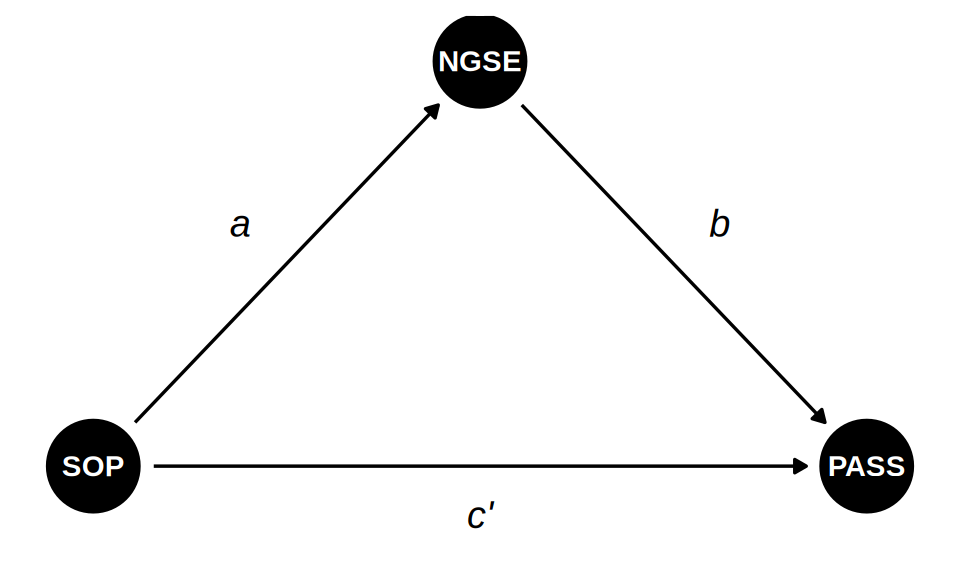
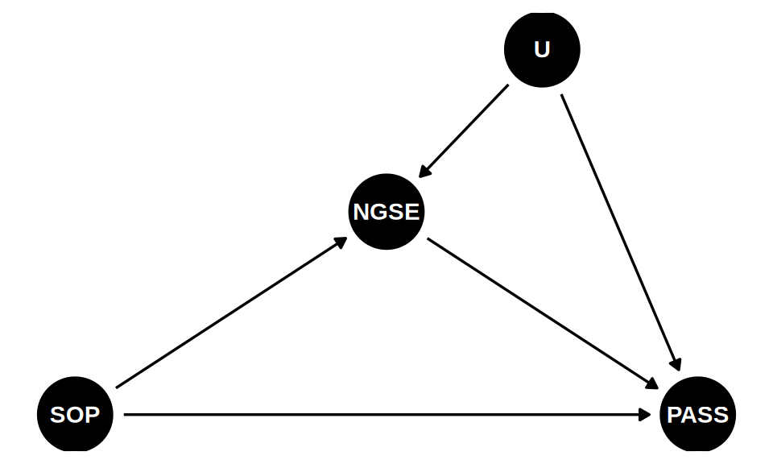
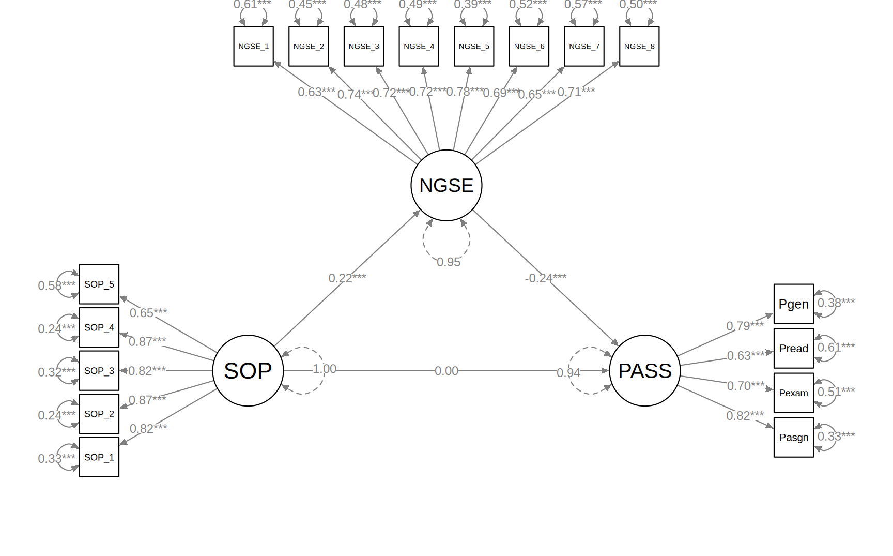

Structural Models
Introduction (Chapter 15)
Structural Regression (SR) models, also known as Structural Equation Modeling (SEM) in the broad sense (or “Latent Variable Path Analysis”), combine two components:
- Measurement Model: Confirmatory Factor Analysis (CFA) describing how latent variables are measured by observed indicators.
- Structural Model: Path analysis describing the causal relationships (regressions) among the latent variables.
\[ \text{SEM} = \text{CFA} + \text{Path Analysis} \]
Causal Assumptions in SR Models
Every directed arrow in the structural model represents a hypothesized causal effect, not merely a statistical association. By drawing an arrow from \(X\) to \(Y\), the researcher claims that \(X\) influences \(Y\)—not only that they tend to move together. The structural model is therefore best understood as a Directed Acyclic Graph (DAG) extended to include latent variables, and the same principles of causal identification apply. In structural models or causal models, the main challenge is to identify whether variables not in the model, either measured or unmeasured, could bias the estimated path coefficients. There are three main types of variables:
Confounder. An unmeasured common cause \(U\) of \(X\) and \(Y\) creates a spurious back-door path: \[ X \leftarrow U \rightarrow Y \] The estimated path coefficient then conflates the direct effect of \(X\) with the spurious association transmitted through \(U\). Blocking this path requires including appropriate observed covariates or using an instrumental variable.
Mediator. Including a variable that lies on the hypothesized causal pathway (\(X \to M \to Y\)) as a covariate when estimating \(X \to Y\) blocks part of \(X\)’s genuine effect. This is why regression assumptions (no causal order among predictors) cannot be applied uncritically when variables are causally connected.
Collider. Conditioning on a variable caused by two others (a collider, e.g., \(X \to C \leftarrow Y\)) opens a spurious association between those two causes. This can arise when selecting participants on a common outcome or when a descendant of a collider is included as a covariate.
The key discipline from causal inference:
Identify before you estimate. Causal assumptions must be justified with subject-matter knowledge before fitting the model. The data alone cannot distinguish a correctly specified causal model from a misspecified one.
When causal structure is uncertain, tools such as dagitty can enumerate minimal sufficient adjustment sets and derive the testable conditional independencies implied by the DAG—providing an empirical check on at least some aspects of the assumed structure.
The Two-Step Approach
Many SEM scholars (e.g., Kline, 2023) strongly recommend a two-step modeling strategy:
-
Respecify and test the measurement model: specificy a CFA model where all latent variables are allowed to correlate (i.e., saturated structural part).
- Ensure factors are well-measured.
- Check model fit.
- If the measurement model is bad, the SR model will effectively necessarily be bad or misleading.
- Test the structural model: Impose the hypothesized structural paths (regressions) among the latent variables.
Example: Self-Oriented Perfectionism, Self-Efficacy, and Procrastination
This example uses data from Williams & Edwards (2021) to demonstrate a mediation structural regression model. The hypothesized model follows Seo (2008):
dag <- dagify(
NGSE ~ SOP,
PASS ~ NGSE + SOP,
coords = list(
x = c(SOP = 0, NGSE = 1, PASS = 2),
y = c(SOP = 0, NGSE = 1, PASS = 0)
)
)
ggdag(dag) +
annotate("text", x = 0.38, y = 0.60, label = "a", fontface = "italic", size = 5) +
annotate("text", x = 1.62, y = 0.60, label = "b", fontface = "italic", size = 5) +
annotate("text", x = 1.00, y = -0.12, label = "c'", fontface = "italic", size = 5) +
theme_dag()
\[ \begin{aligned} \text{NGSE} &= a \cdot \text{SOP} + \zeta_1 \\ \text{PASS} &= b \cdot \text{NGSE} + c' \cdot \text{SOP} + \zeta_2 \end{aligned} \]
where SOP is self-oriented perfectionism, NGSE is general self-efficacy (Chen et al., 2001), and PASS is academic procrastination.
Data and PASS Parcels
The data are downloaded from OSF using the same exclusion pipeline as the CFA note.
Rather than using all 12 PASS items as indicators of a single factor, Williams & Edwards formed item parcels—one sum score per content area:
Parceling aggregates multiple items into composite scores before fitting the SEM. Benefits include fewer parameters, a better indicator-to-sample-size ratio, and composites that are more normally distributed than raw ordinal items. The four parcels (assignments, exams, reading, general) replace 12 item indicators with 4 content-balanced composites for the PASS factor.
Descriptive Statistics
modelsummary::datasummary_skim(we_data)| Unique | Missing Pct. | Mean | SD | Min | Median | Max | Histogram | |
|---|---|---|---|---|---|---|---|---|
| SOP_1 | 5 | 0 | 3.5 | 1.1 | 1.0 | 4.0 | 5.0 | ![](data:image/png;base64,%20iVBORw0KGgoAAAANSUhEUgAABLAAAAGQCAMAAACJa2lsAAAAhFBMVEUAAAA+Pj5AQEBDQ0NERERLS0tNTU1QUFBSUlJTU1NVVVVWVlZbW1tcXFxiYmJjY2NnZ2doaGhpaWlqampwcHBxcXF2dnZ3d3d4eHh5eXl/f3+Dg4OHh4eIiIiWlpafn5+srKyzs7O7u7vExMTMzMzR0dHX19fo6Ojw8PD09PT19fX////yjW74AAAMbElEQVR4nO3Ut441xxlFUUqivKfML28p//7vp2wwwQ7UaLB67tFacQUHH1D7s/8AvIjPnh4A8L8SLOBlCBbwMgQLeBmCBbwMwQJehmABL0OwgJchWMDLECzgZQgW8DIEC3gZggW8DMFi3F8/fRi/+ufTx3h5gsW43372cfz96WO8PMFinGAtESzGCdYSwWKcYC0RLMYJ1hLBYpxgLREsxgnWEsFinGAtESzGCdYSwWKcYC0RLMYJ1hLBYpxgLREsxgnWEsFinGAtESzGCdYSwWKcYC0RLMYJ1hLBYpxgLREsxgnWEsFinGAtESzGCdYSwWKcYC0RLMYJ1hLBYpxgLREsxgnWEsFinGAtESzGCdYSwWKcYC0RLMYJ1hLBYpxgLREsxgnWEsFinGAtESzGCdYSwWKcYC0RLMYJ1hLBYpxgLREsxgnWEsFinGAtESzGCdYSwWKcYC0RLMYJ1hLBYpxgLREsxgnWEsFinGAtESzGCdYSwWKcYC0RLMYJ1hLBYpxgLREsxgnWEsFinGAtESzGCdYSwWKcYC0RLMYJ1hLBYpxgLREsxgnWEsFinGAtESzGCdYSwWKcYC0RLMYJ1hLBYpxgLREsxgnWEsFinGAtESzGCdYSwWKcYC0RLMYJ1hLBYpxgLREsxgnWEsFinGAtESzGCdYSwWKcYC0RLMYJ1hLBYpxgLREsxgnWEsFinGAtESzGCdYSwWKcYC0RLMYJ1hLBYpxgLREsxgnWEsFinGAtESzGCdYSwWKcYC0RLMYJ1hLBYpxgLREsxgnWEsFinGAtESzGCdYSwWKcYC0RLMYJ1hLBYpxgLREsxgnWEsFinGAtESzGCdYSwWKcYC0RLMYJ1hLBYpxgLREsxgnWEsFinGAtESzGCdYSwWKcYC0RLMYJ1hLBYpxgLREsxgnWEsFinGAtESzGCdYSwWKcYC0RLMYJ1hLBYpxgLREsxgnWEsFinGAtESzGCdYSwWKcYC0RLMYJ1hLBYpxgLREsxgnWEsFinGAtESzGCdYSwWKcYC0RLMYJ1hLBYpxgLREsxgnWEsFinGAtESzGCdYSwWKcYC0RLMYJ1hLBYpxgLREsxgnWEsFinGAtESzGCdYSwWKcYC0RLMYJ1hLBYpxgLREsxgnWEsFinGAtESzGCdYSwWKcYC0RLMYJ1hLBYpxgLRGsIV8+/R/f+fPTx3gjWEsEa8hfnv6P7/zx6WO8EawlgjVEsIpgLRGsIYJVBGuJYA0RrCJYSwRriGAVwVoiWEMEqwjWEsEaIlhFsJYI1hDBKoK1RLCGCFYRrCWCNUSwimAtEawhglUEa4lgDRGsIlhLBGuIYBXBWiJYQwSrCNYSwRoiWEWwlgjWEMEqgrVEsIYIVhGsJYI1RLCKYC0RrCGCVQRriWANEawiWEsEa4hgFcFaIlhDBKsI1hLBGiJYRbCWCNYQwSqCtUSwhghWEawlgjVEsIpgLRGsIYJVBGuJYA0RrCJYSwRriGAVwVoiWEMEqwjWEsEaIlhFsJYI1hDBKoK1RLCGCFYRrCWCNUSwimAtEawhglUEq/z6G59/FN+5sluwhghWEazyzadP8c6V3YI1RLCKYBXB4nGCVQSrCBaPE6wiWEWweJxgFcEqgsXjBKsIVhEsHidYRbCKYPE4wSqCVQSLxwlWEawiWDxOsIpgFcHicYJVBKsIFo8TrCJYRbB4nGAVwSqCxeMEqwhWESweJ1hFsIpg8TjBKoJVBIvHCVYRrCJYPE6wimAVweJxglUEqwgWjxOsIlhFsHicYBXBKoLF4wSrCFYRLB4nWEWwimCd9bcvP4x/PH2LN4JVBKsI1lH/fvrG7/z06WO8EawiWEWwjvrX0zd+5ydPH+ONYBXBKoJ1lGAVwSqCVQTrKMEqglUEqwjWUYJVBKsIVhGsowSrCFYRrCJYRwlWEawiWEWwjhKsIlhFsIpgHSVYRbCKYBXBOkqwimAVwSqCdZRgFcEqglUE6yjBKoJVBKsI1lGCVQSrCFYRrKMEqwhWEawiWEcJVhGsIlhFsI4SrCJYRbCKYB0lWEWwimAVwTpKsIpgFcEqgnWUYBXBKoJVBOsowSqCVQSrCNZRglUEqwhWEayjBKsIVhGsIlhHCVYRrCJYRbCOEqwiWEWwimAdJVhFsIpgFcE6SrCKYBXBKoJ1lGAVwSqCVQTrKMEqglUEqwjWUYJVBKsIVhGsowSrCFYRrCJYRwlWEawiWEWwjhKsIlhFsIpgHSVYRbCKYBXBOkqwimAVwSqCdZRgFcEqglUE6yjBKoJVBKsI1lGCVQSrCFYRrKMEqwhWEawiWEcJVhGsIlhFsI4SrCJYRbCKYB0lWEWwimAVwTpKsIpgFcEqgnWUYBXBKoJVBOsowSqCVQSrCNZRglUEqwhWEayjBKsIVhGsIlhHCVYRrCJYRbCOEqwiWEWwimAdJVhFsIpgFcE6SrCKYBXBKoJ1lGAVwSqCVQTrKMEqglUEqwjWUYJVBKsIVhGsowSrCFYRrCJYRwlWEawiWEWwjhKsIlhFsIpgHSVYRbCKYBXBOkqwimAVwSqCdZRgFcEqglUE6yjBKoJVBKsI1lGCVQSrCFYRrKMEqwhWEawiWEcJVhGsIlhFsI4SrCJYRbCKYB0lWEWwimAVwTpKsIpgFcEqgnWUYBXBKoJVBOsowSqCVQSrCNZRglUEqwhWEayjBKsIVhGsIlhHCVYRrCJYRbCOEqwiWEWwimAdJVhFsIpgFcE6SrCKYBXBKoJ1lGAVwSqCVQTrKMEqglUEqwjWUYJVBKsIVhGsowSrCFYRrCJYRwlWEawiWEWwjhKsIlhFsIpgHSVYRbCKYBXBOkqwimAVwSqCdZRgFcEqglUE6yjBKoJVBKsI1lGCVQSrCFYRrKMEqwhWEawiWEcJVhGsIlhFsI4SrCJYRbCKYB0lWEWwimAVwTpKsIpgFcEqgnWUYBXBKoJVBOsowSqCVQSrCNZRglUEqwhWEayjBKsIVhGsIlhHCVYRrCJYRbCOEqwiWEWwimAdJVhFsIpgFcE6SrCKYBXBKoJ1lGAVwSqCVQTrKMEqglUEqwjWUYJVBKsIVhGsowSrCFYRrCJYRwlWEawiWEWwjhKsIlhFsIpgHSVYRbCKYBXBOkqwimAVwSqCdZRgFcEqglUE6yjBKoJVBKsI1lGCVQSrCFYRrKMEqwhWEawiWEcJVhGsIlhFsI4SrCJYRbCKYB0lWEWwimAVwTpKsIpgFcEqgnWUYBXBKoJVBOsowSqCVQSrCNZRglUEqwhWEayjBKsIVhGsIlhHCVYRrCJYRbCOEqwiWEWwimAdJVhFsIpgFcE6SrCKYBXBKoJ1lGAVwSqCVQTrKMEqglUEqwjWUYJVBKsIVhGsowSrCFYRrCJYRwlWEawiWEWwjhKsIlhFsIpgHSVYRbCKYBXBOkqwimAVwSqCdZRgFcEqglUE6yjBKoJVBKsI1lGCVQSrCFb5vwjWtz7/KL7+9I3fEawiWEWwypXd1x4TBKsIVhGscmW3YN0mWEWwimCVK7sF6zbBKoJVBKtc2S1YtwlWEawiWOXKbsG6TbCKYBXBKld2C9ZtglUEqwhWubJbsG4TrCJYRbDKld2CdZtgFcEqglWu7Bas2wSrCFYRrHJlt2DdJlhFsIpglSu7Bes2wSqCVQSrXNktWLcJVhGsIljlym7Buk2wimAVwSpXdgvWbYJVBKsIVrmyW7BuE6wiWEWwypXdgnWbYBXBKoJVruwWrNsEqwhWEaxyZbdg3SZYRbCKYJUruwXrNsEqglUEq1zZLVi3CVYRrCJY5cpuwbpNsIpgFcEqV3YL1m2CVQSrCFa5sluwbhOsIlhFsMqV3YJ1m2AVwSqCVa7sFqzbBKsIVhGscmW3YN0mWEWwimCVK7sF6zbBKoJVBKtc2S1YtwlWEawiWOXKbsG6TbCKYBXBKld2C9ZtglUEqwhWubJbsG4TrCJYRbDKld2CdZtgFcEqglWu7Bas2wSrCFYRrHJlt2DdJlhFsIpglSu7Bes2wSqCVQSrXNktWLcJVhGsIljlym7Buk2wimAVwSpXdgvWbd/98qP4w9OneOc3Tx/jzRdPn+KdPz19jDdfe/oU73xlwfr9p4/il99+esGbX3zv6QVvvvjh0wve/PhHTy9484OfPb3gzfd//vSCNx/nA3363VcWLIAnCRbwMgQLeBmCBbwMwQJehmABL0OwgJchWMDLECzgZQgW8DIEC3gZggW8DMECXoZgAS/jv2QJEi/mksFuAAAAAElFTkSuQmCC) |
| SOP_2 | 5 | 0 | 3.3 | 1.2 | 1.0 | 3.0 | 5.0 | ![](data:image/png;base64,%20iVBORw0KGgoAAAANSUhEUgAABLAAAAGQCAMAAACJa2lsAAAAflBMVEUAAAA+Pj5LS0tQUFBTU1NVVVVWVlZbW1tcXFxfX19iYmJjY2NnZ2dpaWlqampwcHBxcXFycnJ2dnZ3d3d4eHh/f3+Dg4OHh4eIiIiLi4uWlpafn5+lpaWnp6esrKy7u7vBwcHExMTMzMzX19fu7u7v7+/w8PD09PT7+/v///91hCUMAAAPKUlEQVR4nO3Ux65l23FFQcpQogzlnrz35v9/UL1SNQYIJSaIW2chor0aE4m9x8/+B+BD/OyrBwD8fwkW8DEEC/gYggV8DMECPoZgAR9DsICPIVjAxxAs4GMIFvAxBAv4GIIFfAzBAj6GYPG4f/nph/Hn//nVx/h4gsXj/vJnP45/++pjfDzB4nGC9RLB4nGC9RLB4nGC9RLB4nGC9RLB4nGC9RLB4nGC9RLB4nGC9RLB4nGC9RLB4nGC9RLB4nGC9RLB4nGC9RLB4nGC9RLB4nGC9RLB4nGC9RLB4nGC9RLB4nGC9RLB4nGC9RLB4nGC9RLB4nGC9RLB4nGC9RLB4nGC9RLB4nGC9RLB4nGC9RLB4nGC9RLB4nGC9RLB4nGC9RLB4nGC9RLB4nGC9RLB4nGC9RLB4nGC9RLB4nGC9RLB4nGC9RLB4nGC9RLB4nGC9RLB4nGC9RLB4nGC9RLB4nGC9RLB4nGC9RLB4nGC9RLB4nGC9RLB4nGC9RLB4nGC9RLB4nGC9RLB4nGC9RLB4nGC9RLB4nGC9RLB4nGC9RLB4nGC9RLB4nGC9RLB4nGC9RLB4nGC9RLB4nGC9RLB4nGC9RLB4nGC9RLB4nGC9RLB4nGC9RLB4nGC9RLB4nGC9RLB4nGC9RLB4nGC9RLB4nGC9RLB4nGC9RLB4nGC9RLB4nGC9RLB4nGC9RLB4nGC9RLB4nGC9RLB4nGC9RLB4nGC9RLB4nGC9RLB4nGC9RLB4nGC9RLB4nGC9RLB4nGC9ZIPDdZ//+LnP4x/+Opj8CsJ1ks+NFj/9dVf3nf+8KuPwa8kWC8RrJlg/dgE6yWCNROsH5tgvUSwZj9QsP79h/EfX32K/yNYLxGs2Y8TrH/+6lN85++/+hjfCNZLBGv24wTrn776FN/5u68+xjeC9RLBmglWEawiWCvBmglWEawiWCvBmglWEawiWCvBmglWEawiWCvBmglWEawiWCvBmglWEawiWCvBmglWEawiWCvBmglWEawiWCvBmglWEawiWCvBmglWEawiWCvBmglWEawiWCvBmglWEawiWCvBmglWEawiWCvBmglWEawiWCvBmglWEawiWCvBmglWEawiWCvBmglWEawiWCvBmglWEawiWCvBmglWEawiWCvBmglWEawiWCvBmglWEawiWCvBmglWEawiWCvBmglWEawiWCvBmglWEawiWCvBmglWEawiWCvBmglWEawiWCvBmglWEawiWCvBmglWEawiWCvBmglWEawiWCvBmglWEawiWCvBmglWEawiWCvBmglWEawiWCvBmglWEawiWCvBmglWEawiWCvBmglWEawiWCvBmglWEawiWCvBmglWEawiWCvBmglWEazy4wTr9776FN+57BasmWAVwSo/TrB+86tP8Z3LbsGaCVYRrCJY5bJbsGaCVQSrCFa57BasmWAVwSqCVS67BWsmWEWwimCVy27BmglWEawiWOWyW7BmglUEqwhWuewWrJlgFcEqglUuuwVrJlhFsIpglctuwZoJVhGsIljlsluwZoJVBKsIVrnsFqyZYBXBKoJVLrsFayZYRbCKYJXLbsGaCVYRrCJY5bJbsGaCVQSrCFa57BasmWAVwSqCVS67BWsmWEWwimCVy27BmglWEawiWOWyW7BmglUEqwhWuewWrJlgFcEqglUuuwVrJlhFsIpglctuwZoJVhGsIljlsluwZoJVBKsIVrnsFqyZYBXBKoJVLrsFayZYRbCKYJXLbsGaCVYRrCJY5bJbsGaCVQSrCFa57BasmWAVwSqCVS67BWsmWEWwimCVy27BmglWEawiWOWyW7BmglUEqwhWuewWrJlgFcEqglUuuwVrJlhFsIpglctuwZoJVhGsIljlsluwZoJVBKsIVrnsFqyZYBXBKoJVLrsFayZYRbCKYJXLbsGaCVYRrCJY5bJbsGaCVQSrCFa57BasmWAVwSqCVS67BWsmWEWwimCVy27BmglWEawiWOWyW7BmglUEqwhWuewWrJlgFcEqglUuuwVrJlhFsIpglctuwZoJVhGsIljlsluwZoJVBKsIVrnsFqyZYBXBKoJVLrsFayZYRbCKYJXLbsGaCVYRrCJY5bJbsGaCVQSrCFa57BasmWAVwSqCVS67BWsmWEWwimCVy27BmglWEawiWOWyW7BmglUEqwhWuewWrJlgFcEqglUuuwVrJlhFsIpglctuwZoJVhGsIljlsluwZoJVBKsIVrnsFqyZYBXBKoJVLrsFayZYRbCKYJXLbsGaCVYRrCJY5bJbsGaCVQSrCFa57BasmWAVwSqCVS67BWsmWEWwimCVy27BmglWEawiWOWyW7BmglUEqwhWuewWrJlgFcEqglUuuwVrJlhFsIpglctuwZoJVhGsIljlsluwZoJVBKsIVrnsFqyZYBXBKoJVLrsFayZYRbCKYJXLbsGaCVYRrCJY5bJbsGaCVQSrCFa57BasmWAVwSqCVS67BWsmWEWwimCVy27BmglWEawiWOWyW7BmglUEqwhWuewWrJlgFcEqglUuuwVrJlhFsIpglctuwZoJVhGsIljlsluwZoJVBKsIVrnsFqyZYBXBKoJVLrsFayZYRbCKYJXLbsGaCVYRrCJY5bJbsGaCVQSrCFa57BasmWAVwSqCVS67BWsmWEWwimCVy27BmglWEawiWOWyW7BmglUEqwhWuewWrJlgFcEqglUuuwVrJlhFsIpglctuwZoJVhGsIljlsluwZoJVBKsIVrnsFqyZYBXBKoJVLrsFayZYRbCKYJXLbsGaCVYRrCJY5bJbsGaCVQSrCFa57BasmWAVwSqCVS67BWsmWEWwimCVy27BmglWEawiWOWyW7BmglUEqwhWuewWrJlgFcEqglUuuwVrJlhFsIpglctuwZoJVhGsIljlsluwZoJVBKsIVrnsFqyZYBXBKoJVLrsFayZYRbCKYJXLbsGaCVYRrCJY5bJbsGaCVQSrCFa57BasmWAVwSqCVS67BWsmWEWwimCVy27BmglWEawiWOWyW7BmglUEqwhWuewWrJlgFcEqglUuuwVrJlhFsIpglctuwZoJVhGsIljlsluwZoJVBKsIVrnsFqyZYBXBKoJVLrsFayZYRbCKYJXLbsGaCVYRrCJY5bJbsGaCVQSrCFa57BasmWAVwSqCVS67BWsmWEWwimCVy27BmglWEawiWOWyW7BmglUEqwhWuewWrJlgFcEqglUuuwVrJlhFsIpglctuwZoJVhGsIljlsluwZoJVBKsIVrnsFqyZYBXBKoJVLrtPj//mpx/Fn371jb8jWEWwimCVy+7bY4JgFcEqglUuuwVrJlhFsIpglctuwZoJVhGsIljlsluwZoJVBKsIVrnsFqyZYBXBKoJVLrsFayZYRbCKYJXLbsGaCVYRrCJY5bJbsGaCVQSrCFa57BasmWAVwSqCVS67BWsmWEWwimCVy27BmglWEawiWOWyW7BmglUEqwhWuewWrJlgFcEqglUuuwVrJlhFsIpglctuwZoJVhGsIljlsluwZoJVBKsIVrnsFqyZYBXBKoJVLrsFayZYRbCKYJXLbsGaCVYRrCJY5bJbsGaCVQSrCFa57BasmWAVwSqCVS67BWsmWEWwimCVy27BmglWEawiWOWyW7BmglUEqwhWuewWrJlgFcEqglUuuwVrJlhFsIpglctuwZoJVhGsIljlsluwZoJVBKsIVrnsFqyZYBXBKoJVLrsFayZYRbCKYJXLbsGaCVYRrCJY5bJbsGaCVQSrCFa57BasmWAVwSqCVS67BWsmWEWwimCVy27BmglWEawiWOWyW7BmglUEqwhWuewWrJlgFcEqglUuuwVrJlhFsIpglctuwZoJVhGsIljlsluwZoJVBKsIVrnsFqyZYBXBKoJVLrsFayZYRbCKYJXLbsGaCVYRrCJY5bJbsGaCVQSrCFa57BasmWAVwSqCVS67BWsmWEWwimCVy27BmglWEawiWOWyW7BmglUEqwhWuewWrJlgFcEqglUuuwVrJlhFsIpglctuwZoJVhGsIljlsluwZoJVBKsIVrnsFqyZYBXBKoJVLrsFayZYRbCKYJXLbsGaCVYRrCJY5bJbsGaCVQSrCFa57BasmWAVwSqCVS67BWsmWEWwimCVy27BmglWEawiWOWyW7BmglUEqwhWuewWrJlgFcEqglUuuwVrJlhFsIpglctuwZoJVhGsIljlsluwZoJVBKsIVrnsFqyZYBXBKoJVLrsFayZYRbCKYJXLbsGaCVYRrCJY5bJbsGaCVQSrCFa57BasmWAVwSqCVS67BWsmWEWwimCVy27BmglWEawiWOWyW7BmglUEqwhWuewWrJlgFcEqglUuuwVrJlhFsIpglctuwZoJVhGsIljlsluwZoJVBKsIVrnsFqyZYBXBKoJVLrsFayZYRbCKYJXLbsGaCVYRrCJY5bJbsGaCVQSrCFa57BasmWAVwSqCVS67BWsmWEWwimCVy27BmglWEawiWOWyW7BmglUEqwhWuewWrJlgFcEqglUuuwVrJlhFsIpglctuwZoJVhGsIljlsluwZoJVBKsIVrnsFqyZYBXBKoJVLrsFayZYRbCKYJXLbsGaCVYRrCJY5bJbsGaCVQSrCFa57BasmWAVwSqCVS67BWsmWEWwimCVy27BmglWEawiWOWyW7BmglUEqwhWuewWrJlgFcEqglUuuwVrJlhFsIpglctuwZoJVhGsIljlsluwZoJVBKsIVrnsFqyZYBXBKoJVLrsFayZYRbCKYJXLbsGaCVYRrCJY5bJbsGaCVQSrCFa57BasmWAVwSqCVS67BWsmWEWwimCVy27BmglWEawiWOWyW7BmglUEqwhWuewWrJlgFcEqglUuuwVrJlhFsIpglctuwZoJVhGsIljlsluwZoJVBKsIVrnsFqyZYBXBKoJVLrsFayZYRbCKYJXLbsGaCVYRrCJY5bJbsGaCVQSrCFa57Bas2W//64/ib7/6FN/5i68+xje//OpTfOcfv/oY3/zGV5/iO7+2YP31Tz+KP/utr17wzZ/8/KsXfPPLX3z1gm/+4Pe/esE3v/tHX73gm9/5469e8M2P8wP99Fe/tmABfCXBAj6GYAEfQ7CAjyFYwMcQLOBjCBbwMQQL+BiCBXwMwQI+hmABH0OwgI8hWMDHECzgY/wvHWs+BRUqKNYAAAAASUVORK5CYII=) |
| SOP_3 | 5 | 0 | 3.0 | 1.1 | 1.0 | 3.0 | 5.0 | ![](data:image/png;base64,%20iVBORw0KGgoAAAANSUhEUgAABLAAAAGQCAMAAACJa2lsAAAAgVBMVEUAAAAwMDAzMzM8PDw+Pj5AQEBERERLS0tQUFBTU1NVVVVWVlZbW1tcXFxiYmJjY2NnZ2dpaWlqampwcHBxcXF2dnZ3d3d7e3t/f3+Dg4OHh4eIiIiMjIyWlpafn5+np6esrKy1tbW7u7u8vLzMzMzT09PX19ff39/09PT8/Pz////dKuA/AAAN7klEQVR4nO3Ux441RhlFUQMmRxN+gskZ3v8BmbV6sAeUjm7dvvZa4xocfVLtz/4L8CI+e/YAgP+XYAEvQ7CAlyFYwMsQLOBlCBbwMgQLeBmCBbwMwQJehmABL0OwgJchWMDLECzgZbxosP7z608fxl+efQz42njRYP37s4/jZ88+BnxtCNZMsOAWwZoJFtwiWDPBglsEayZYcItgzQQLbhGsmWDBLYI1Eyy4RbBmggW3CNZMsOAWwZoJFtwiWDPBglsEayZYcItgzQQLbhGsmWDBLYI1Eyy4RbBmggW3CNZMsOAWwZoJFtwiWDPBglsEayZYcItgzQQLbhGsmWDBLYI1Eyy4RbBmggW3CNZMsOAWwZoJFtwiWDPBglsEayZYcItgzQQLbhGsmWDBLYI1Eyy4RbBmggW3CNZMsOAWwZoJFtwiWDPBglsEayZYcItgzQQLbhGsmWDBLYI1Eyy4RbBmggW3CNZMsOAWwZoJFtwiWDPBglsEayZYcItgzQQLbhGsmWDBLYI1Eyy4RbBmggW3CNZMsOAWwZoJFtwiWDPBglsEayZYcItgzQQLbhGsmWDBLYI1Eyy4RbBmggW3CNZMsOAWwZoJFtwiWDPBglsEayZYcItgzQQLbhGsmWDBLYI1Eyy4RbBmggW3CNZMsOAWwZoJFtwiWDPBglsEayZYcItgzQQLbhGsmWDBLYI1Eyy4RbBmggW3CNZMsOAWwZoJFtwiWDPBglsEayZYcItgzQQLbhGsmWDBLYI1Eyy4RbBmHydY//jWdz6Kz//27GPwlSRYs48TrL8++xTv/PHZx+ArSbBmglUEi0cQrJlgFcHiEQRrJlhFsHgEwZoJVhEsHkGwZoJVBItHEKyZYBXB4hEEayZYRbB4BMGaCVYRLB5BsGaCVQSLRxCsmWAVweIRBGsmWEWweATBmglWESweQbBmglU+TrB+/+xTvPOvZx/j5QnWTLDKxwnWb599inf++exjvDzBmglWEawiWCvBmglWEawiWCvBmglWEawiWCvBmglWEawiWCvBmglWEawiWCvBmglWEawiWCvBmglWEawiWCvBmglWEawiWCvBmglWEawiWCvBmglWEawiWCvBmglWEawiWCvBmglWEawiWCvBmglWEawiWCvBmglWEawiWCvBmglWEawiWCvBmglWEawiWCvBmglWEawiWCvBmglWEawiWCvBmglWEawiWCvBmglWEawiWCvBmglWEawiWCvBmglWEawiWCvBmglWEawiWCvBmglWEawiWCvBmglWEawiWCvBmglWEawiWCvBmglWEawiWCvBmglWEawiWCvBmglWEawiWCvBmglWEawiWCvBmglWEawiWCvBmglWEawiWCvBmglWEawiWCvBmglWEawiWCvBmglWEawiWCvBmglWEawiWCvBmglWEawiWCvBmglWEawiWCvBmglWEawiWCvBmglWEawiWCvBmglWEawiWCvBmglWEawiWCvBmglWEawiWCvBmglWEawiWCvBmglWEawiWCvBmglWEawiWCvBmglWEawiWCvBmglWEawiWCvBmglWEawiWCvBmglWEawiWCvBmglWEawiWCvBmglWEawiWCvBmglWEawiWCvBmglWEawiWCvBmglWEawiWCvBmglWEawiWCvBmglWEawiWCvBmglWEawiWCvBmglWEawiWCvBmglWEawiWCvBmglWEawiWCvBmglWEawiWCvBmglWEawiWCvBmglWEawiWCvBmglWEawiWCvBmglWEawiWCvBmglWEawiWCvBmglWEawiWCvBmglWEawiWCvBmglWEawiWCvBmglWEawiWCvBmglWEawiWCvBmglWEawiWCvBmglWEawiWCvBmglWEawiWCvBmglWEawiWCvBmglWEawiWCvBmglWEawiWCvBmglWEawiWCvBmglWEawiWCvBmglWEawiWCvBmglWEawiWCvBmglWEawiWCvBmglWEawiWCvBmglWEawiWCvBmglWEawiWCvBmglWEawiWCvBmglWEawiWCvBmglWEawiWCvBmglWEawiWCvBmglWEawiWCvBmglWEawiWCvBmglWEawiWCvBmglWEawiWCvBmglWEawiWCvBmglWEawiWCvBmglWEawiWCvBmglWEawiWCvBmglWEawiWCvBmglWEawiWCvBmglWEawiWCvBmglWEawiWCvBmglWEawiWCvBmglWEawiWCvBmglWEawiWCvBmglWEawiWCvBmglWEawiWCvBmglWEawiWCvBmglWEawiWCvBmglWEawiWCvBmglWEawiWCvBmglWEawiWCvBmglWEawiWCvBmglWEawiWCvBmglWEawiWCvBmglWEawiWCvBmglWEawiWCvBmglWEawiWCvBmglWEawiWCvBmglWEawiWCvBmglWEawiWCvBmglWEawiWCvBmglWEawiWCvBmglWEawiWCvBmglWEawiWCvBmglWEawiWCvBmglWEawiWCvBmglWEawiWCvBmglWEawiWCvBmglWEawiWCvBmglWEawiWCvBmglWEawiWCvBmglWEawiWCvBmglWEawiWCvBmglWEawiWCvBmglWEawiWCvBmglWEawiWCvBmglWEawiWCvBmglWEawiWCvBmglWEawiWCvBmglWEawiWCvBmglWEawiWCvBmglWEawiWCvBmglWEawiWCvBmglWEawiWCvBmglWEawiWCvBmglWEawiWCvBmglWEawiWCvBmglWEawiWCvBmglWEawiWCvBmglWEawiWCvBmglWEawiWCvBmglWEawiWCvBmglWEawiWCvBmglWEawiWCvBmglWEawiWCvBmglWEawiWCvBmglWEawiWCvBmglWEawiWCvBmglWEawiWCvBmglWEawiWCvBmglWEawiWCvBmglWEawiWCvBmglWEawiWCvBmglWEawiWCvBmglWEazycYL1p08fxpcnuwVrJlhFsMrHCdZ3n32Kd052C9ZMsIpgFcEqJ7sFayZYRbCKYJWT3YI1E6wiWEWwysluwZoJVhGsIljlZLdgzQSrCFYRrHKyW7BmglUEqwhWOdktWDPBKoJVBKuc7BasmWAVwSqCVU52C9ZMsIpgFcEqJ7sFayZYRbCKYJWT3YI1E6wiWEWwysluwZoJVhGsIljlZLdgzQSrCFYRrHKyW7BmglUEqwhWOdktWDPBKoJVBKuc7BasmWAVwSqCVU52C9ZMsIpgFcEqJ7sFayZYRbCKYJWT3UePv/3Nj+Ibz77xO4JVBKsIVjnZffaYIFhFsIpglZPdgjUTrCJYRbDKyW7BmglWEawiWOVkt2DNBKsIVhGscrJbsGaCVQSrCFY52S1YM8EqglUEq5zsFqyZYBXBKoJVTnYL1kywimAVwSonuwVrJlhFsIpglZPdgjUTrCJYRbDKyW7BmglWEawiWOVkt2DNBKsIVhGscrJbsGaCVQSrCFY52S1YM8EqglUEq5zsFqyZYBXBKoJVTnYL1kywimAVwSonuwVrJlhFsIpglZPdgjUTrCJYRbDKyW7BmglWEawiWOVkt2DNBKsIVhGscrJbsGaCVQSrCFY52S1YM8EqglUEq5zsFqyZYBXBKoJVTnYL1kywimAVwSonuwVrJlhFsIpglZPdgjUTrCJYRbDKyW7BmglWEawiWOVkt2DNBKsIVhGscrJbsGaCVQSrCFY52S1YM8EqglUEq5zsFqyZYBXBKoJVTnYL1kywimAVwSonuwVrJlhFsIpglZPdgjUTrCJYRbDKyW7BmglWEawiWOVkt2DNBKsIVhGscrJbsGaCVQSrCFY52S1YM8EqglUEq5zsFqyZYBXBKoJVTnYL1kywimAVwSonuwVrJlhFsIpglZPdgjUTrCJYRbDKyW7BmglWEawiWOVkt2DNBKsIVhGscrJbsGaCVQSrCFY52S1YM8EqglUEq5zsFqyZYBXBKoJVTnYL1kywimAVwSonuwVrJlhFsIpglZPdgjUTrCJYRbDKyW7BmglWEawiWOVkt2DNBKsIVhGscrJbsGaCVQSrCFY52S1YM8EqglUEq5zsFqyZYBXBKoJVTnYL1kywimAVwSonuwVrJlhFsIpglZPdgjUTrCJYRbDKyW7BmglWEawiWOVkt2DNBKsIVhGscrJbsGaCVQSrCFY52S1YM8EqglUEq5zsFqyZYBXBKoJVTnYL1kywimAVwSonuwVrJlhFsIpglZPdgjUTrCJYRbDKyW7BmglWEawiWOVkt2DNBKsIVhGscrJbsGaCVQSrCFY52S1YM8EqglUEq5zsFqyZYBXBKoJVTnYL1kywimAVwSonuwVrJlhFsIpglZPdgjUTrCJYRbDKyW7BmglWEawiWOVkt2DNBKsIVhGscrJbsGaCVQSrCFY52S1YM8EqglUEq5zsFqyZYBXBKoJVTnYL1kywimAVwSonuwVrJlhFsIpglZPdgjUTrCJYRbDKyW7BmglWEawiWOVkt2DNBKsIVhGscrJbsGaCVQSrCFY52S1YM8EqglUEq5zsFqyZYBXBKoJVTnYL1uz7f/8o/vDsU7zzm2cf480Xzz7FO39+9jHefP7sU7zzsGB9+emj+NX3nr3gzS9/8OwFb7748bMXvPnpT5694M2Pfv7sBW9++ItnL3jzcT7Qp989LFgAzyRYwMsQLOBlCBbwMgQLeBmCBbwMwQJehmABL0OwgJchWMDLECzgZQgW8DIEC3gZggW8jP8B16vmEgvbr9UAAAAASUVORK5CYII=) |
| SOP_4 | 5 | 0 | 3.0 | 1.2 | 1.0 | 3.0 | 5.0 | ![](data:image/png;base64,%20iVBORw0KGgoAAAANSUhEUgAABLAAAAGQCAMAAACJa2lsAAAAilBMVEUAAAA+Pj5AQEBBQUFDQ0NERERLS0tQUFBTU1NVVVVWVlZYWFhbW1tcXFxiYmJjY2NnZ2dpaWlqampsbGxwcHBxcXF2dnZ3d3d7e3t/f3+Dg4OEhISHh4eIiIiWlpafn5+qqqqsrKyurq61tbW7u7vMzMzX19fa2trj4+Pn5+f09PT6+vr8/Pz////4GzUcAAAPMklEQVR4nO3Ut64l0XVFUcpQ3lGO8t6b//89ZY0OZqCNBfarWxwjrmBh49T8yf8CfIiffPUAgP8vwQI+hmABH0OwgI8hWMDHECzgYwgW8DEEC/gYggV8DMECPoZgAR9DsICPIVjAx/jQYP3PX/z8Mf75q48BvzQ+NFj/9ZPn+KOvPgb80hCsmWDBjyJYM8GCH0WwZoIFP4pgzQQLfhTBmgkW/CiCNRMs+FEEayZY8KMI1kywnu0//uEx/um/v/oYH0+wZoL1bH/91Q/kO//21cf4eII1E6xn+6uvfiDfEayVYM0E69kE600EayZYzyZYbyJYM8F6NsF6E8GaCdazCdabCNZMsJ5NsN5EsGaC9WyC9SaCNROsZxOsNxGsmWA9m2C9iWDNBOvZBOtNBGsmWM8mWG8iWDPBejbBehPBmgnWswnWmwjWTLCeTbDeRLBmgvVsgvUmgjUTrGcTrDcRrJlgPZtgvYlgzQTr2QTrTQRrJljPJlhvIlgzwXo2wXoTwZoJ1rMJ1psI1kywnk2w3kSwZoL1bIL1JoI1E6xnE6w3EayZYD2bYL2JYM0E69kE600EayZYzyZYbyJYM8F6NsF6E8GaCdazCdabCNZMsJ5NsN5EsGaC9WyC9SaCNROsZxOsNxGsmWA9m2C9iWDNBOvZBOtNBGsmWM8mWG8iWDPBejbBehPBmgnWswnWmwjWTLCeTbDeRLBmgvVsgvUmgjUTrGcTrDcRrJlgPZtgvYlgzQTr2QTrTQRrJljPJlhvIlgzwXo2wXoTwZoJ1rMJ1psI1kywnk2w3kSwZoL1bIL1JoI1E6xnE6w3EayZYD2bYL2JYM0E69kE600EayZYzyZYbyJYM8F6NsF6E8GaCdazCdabCNZMsJ5NsN5EsGaC9WyC9SaCNROsZxOsNxGsmWA9m2C9iWDNBOvZBOtNBGsmWM8mWG8iWDPBejbBehPBmgnWswnWmwjWTLCeTbDeRLBmgvVsgvUmgjV7TrD+82+f49+/+hjfCNabCNbsOcH6l68+xXf+/quP8Y1gvYlgzQSrCFYRrJVgzQSrCFYRrJVgzQSrCFYRrJVgzQSrCFYRrJVgzQSrCFYRrJVgzQSrCFYRrJVgzQSrCFYRrJVgzQSrCFYRrJVgzQSrCFYRrJVgzQSrCFYRrJVgzQSrCFYRrJVgzQSrCFYRrJVgzQSrCFYRrJVgzQSrCFYRrJVgzQSrCFYRrJVgzQSrCFYRrJVgzQSrCFYRrJVgzQSrCFYRrJVgzQSrCFYRrJVgzQSrCFYRrJVgzQSrCFYRrJVgzQSrCFYRrJVgzQSrCFYRrJVgzQSrCFYRrJVgzQSrCFYRrJVgzQSrCFYRrJVgzQSrCFYRrJVgzQSrCFYRrJVgzQSrCFYRrJVgzQSrCFYRrJVgzQSrCFYRrJVgzQSrCFYRrJVgzQSrCFYRrJVgzQSrCFYRrJVgzQSrCFYRrJVgzQSrCFYRrJVgzQSrCFYRrJVgzQSrCFYRrJVgzQSrCFYRrJVgzQSrCFYRrJVgzQSrCFYRrJVgzQSrCFYRrJVgzQSrCFYRrJVgzQSrCFYRrJVgzQSrCFYRrJVgzQSrCFYRrJVgzQSrCFYRrJVgzQSrCFYRrJVgzQSrCFYRrJVgzQSrCFYRrJVgzQSrCFYRrJVgzQSrCFYRrJVgzQSrCFYRrJVgzQSrCFYRrJVgzQSrCFYRrJVgzQSrCFYRrJVgzQSrCFYRrJVgzQSrCFYRrJVgzQSrCFYRrJVgzQSrCFYRrJVgzQSrCFYRrJVgzQSrCFYRrJVgzQSrCFYRrJVgzQSrCFYRrJVgzQSrCFYRrJVgzQSrCFYRrJVgzQSrCFYRrJVgzQSrCFYRrJVgzQSrCFYRrJVgzQSrCFYRrJVgzQSrCFYRrJVgzQSrCFYRrJVgzQSrCFYRrJVgzQSrCFYRrJVgzQSrCFYRrJVgzQSrCFYRrJVgzQSrCFYRrJVgzQSrCFYRrJVgzQSrCFYRrJVgzQSrCFYRrJVgzQSrCFYRrJVgzQSrCFYRrJVgzQSrCFYRrJVgzQSrCFYRrJVgzQSrCFYRrJVgzQSrCFYRrJVgzQSrCFYRrJVgzQSrCFYRrJVgzQSrCFYRrJVgzQSrCFYRrJVgzQSrCFYRrJVgzQSrCFYRrJVgzQSrCFYRrJVgzQSrCFYRrJVgzQSrCFYRrJVgzQSrCFYRrJVgzQSrCFYRrJVgzQSrCFYRrJVgzQSrCFYRrJVgzQSrCFYRrJVgzQSrCFYRrJVgzQSrCFYRrJVgzQSrCFYRrJVgzQSrCFYRrJVgzQSrCFYRrJVgzQSrCFYRrJVgzQSrCFYRrJVgzQSrCFYRrJVgzQSrCFYRrJVgzQSrCFYRrJVgzQSrCFYRrJVgzQSrCFYRrJVgzQSrCFYRrJVgzQSrCFYRrJVgzQSrCFYRrJVgzQSrCFYRrJVgzQSrCFYRrJVgzQSrCFYRrJVgzQSrCFYRrJVgzQSrCFYRrJVgzQSrCFYRrJVgzQSrCFYRrJVgzQSrCFYRrJVgzQSrCFYRrJVgzQSrCFYRrJVgzQSrCFYRrJVgzQSrCFYRrJVgzQSrCFYRrJVgzQSrCFZ5TrD+5Nd/+hS/etktWDPBKoJVnhOs3/jqU3znsluwZoJVBKsIVrnsFqyZYBXBKoJVLrsFayZYRbCKYJXLbsGaCVYRrCJY5bJbsGaCVQSrCFa57BasmWAVwSqCVS67BWsmWEWwimCVy27BmglWEawiWOWyW7BmglUEqwhWuewWrJlgFcEqglUuuwVrJlhFsIpglctuwZoJVhGsIljlsluwZoJVBKsIVrnsFqyZYBXBKoJVLrsFayZYRbCKYJXLbsGaCVYRrCJY5bJbsGaCVQSrCFa57BasmWAVwSqCVS67BWsmWEWwimCVy27BmglWEawiWOWyW7BmglUEqwhWuewWrJlgFcEqglUuuwVrJlhFsIpglctuwZoJVhGsIljlsluwZoJVBKsIVrnsFqyZYBXBKoJVLrsFayZYRbCKYJXLbsGaCVYRrCJY5bL79PHv/vQpfu2rb/wdwSqCVQSrXHbfPiYIVhGsIljlsluwZoJVBKsIVrnsFqyZYBXBKoJVLrsFayZYRbCKYJXLbsGaCVYRrCJY5bJbsGaCVQSrCFa57BasmWAVwSqCVS67BWsmWEWwimCVy27BmglWEawiWOWyW7BmglUEqwhWuewWrJlgFcEqglUuuwVrJlhFsIpglctuwZoJVhGsIljlsluwZoJVBKsIVrnsFqyZYBXBKoJVLrsFayZYRbCKYJXLbsGaCVYRrCJY5bJbsGaCVQSrCFa57BasmWAVwSqCVS67BWsmWEWwimCVy27BmglWEawiWOWyW7BmglUEqwhWuewWrJlgFcEqglUuuwVrJlhFsIpglctuwZoJVhGsIljlsluwZoJVBKsIVrnsFqyZYBXBKoJVLrsFayZYRbCKYJXLbsGaCVYRrCJY5bJbsGaCVQSrCFa57BasmWAVwSqCVS67BWsmWEWwimCVy27BmglWEawiWOWyW7BmglUEqwhWuewWrJlgFcEqglUuuwVrJlhFsIpglctuwZoJVhGsIljlsluwZoJVBKsIVrnsFqyZYBXBKoJVLrsFayZYRbCKYJXLbsGaCVYRrCJY5bJbsGaCVQSrCFa57BasmWAVwSqCVS67BWsmWEWwimCVy27BmglWEawiWOWyW7BmglUEqwhWuewWrJlgFcEqglUuuwVrJlhFsIpglctuwZoJVhGsIljlsluwZoJVBKsIVrnsFqyZYBXBKoJVLrsFayZYRbCKYJXLbsGaCVYRrCJY5bJbsGaCVQSrCFa57BasmWAVwSqCVS67BWsmWEWwimCVy27BmglWEawiWOWyW7BmglUEqwhWuewWrJlgFcEqglUuuwVrJlhFsIpglctuwZoJVhGsIljlsluwZoJVBKsIVrnsFqyZYBXBKoJVLrsFayZYRbCKYJXLbsGaCVYRrCJY5bJbsGaCVQSrCFa57BasmWAVwSqCVS67BWsmWEWwimCVy27BmglWEawiWOWyW7BmglUEqwhWuewWrJlgFcEqglUuuwVrJlhFsIpglctuwZoJVhGsIljlsluwZoJVBKsIVrnsFqyZYBXBKoJVLrsFayZYRbCKYJXLbsGaCVYRrCJY5bJbsGaCVQSrCFa57BasmWAVwSqCVS67BWsmWEWwimCVy27BmglWEawiWOWyW7BmglUEqwhWuewWrJlgFcEqglUuuwVrJlhFsIpglctuwZoJVhGsIljlsluwZoJVBKsIVrnsFqyZYBXBKoJVLrsFayZYRbCKYJXLbsGaCVYRrCJY5bJbsGaCVQSrCFa57BasmWAVwSqCVS67BWsmWEWwimCVy27BmglWEawiWOWyW7BmglUEqwhWuewWrJlgFcEqglUuuwVrJlhFsIpglctuwZoJVhGsIljlsluwZoJVBKsIVrnsFqyZYBXBKoJVLrsFayZYRbCKYJXLbsGaCVYRrCJY5bJbsGaCVQSrCFa57BasmWAVwSqCVS67BWsmWEWwimCVy27BmglWEawiWOWyW7BmglUEqwhWuewWrJlgFcEqglUuuwVrJlhFsIpglctuwZoJVhGsIljlsluwZoJVBKsIVrnsFqyZYBXBKoJVLrsFayZYRbCKYJXLbsGaCVYRrCJY5bJbsGaCVQSrCFa57BasmWAVwSqCVS67BWsmWEWwimCVy27BmglWEawiWOWyW7BmglUEqwhWuewWrJlgFcEqglUuuwVrJlhFsIpglctuwZoJVhGsIljlsluwZoJVBKsIVrnsFqyZYBXBKoJVLrsFayZYRbCKYJXLbsGaCVYRrCJY5bJbsGaCVQSrCFa57BasmWAVwSqCVS67BWsmWEWwimCVy27BmglWEawiWOWyW7BmglUEqwhWuewWrJlgFcEqglUuuwVrJlhFsIpglctuwZoJVhGsIljlsluwZoJVBKsIVrnsFqyZYBXBKoJVLrsFa/Zb//oUf/fVp/jOX371Mb752Vef4jv/+NXH+OZXvvoU3/mFBetvf/4Uf/6bX73gmz/77a9e8M3Pfv+rF3zzh3/w1Qu++b0//uoF3/zOn371gm+e8wP9/G9+YcEC+EqCBXwMwQI+hmABH0OwgI8hWMDHECzgYwgW8DEEC/gYggV8DMECPoZgAR9DsICPIVjAx/g/qTeRD3Kf190AAAAASUVORK5CYII=) |
| SOP_5 | 5 | 0 | 2.6 | 1.2 | 1.0 | 2.0 | 5.0 | ![](data:image/png;base64,%20iVBORw0KGgoAAAANSUhEUgAABLAAAAGQCAMAAACJa2lsAAAAhFBMVEUAAAA+Pj5BQUFDQ0NERERFRUVLS0tMTExQUFBTU1NVVVVWVlZZWVlbW1tcXFxiYmJjY2NnZ2dpaWlqampwcHBxcXF2dnZ3d3d7e3t/f3+Dg4OHh4eIiIiWlpafn5+goKCsrKy1tbW7u7u8vLzMzMzX19fp6env7+/09PT29vb8/Pz///9JRgtFAAAM6klEQVR4nO3UybKFS1lF0YugCBYgIteawgKB938/esfTmA0yVvy5z76M8QQrvsic3/wB4E188+oBAH8qwQLehmABb0OwgLchWMDbECzgbQgW8DYEC3gbggW8DcEC3oZgAW9DsIC3IVjA23jTYP3+n7/9Mn796mPAn403Ddb/ffN1/MOrjwF/NgRrJlhwi2DNBAtuEayZYMEtgjUTLLhFsGaCBbcI1kyw4BbBmgkW3CJYM8GCWwRrJlhwi2DNBAtuEayZYMEtgjUTLLhFsGaCBbcI1kyw4BbBmgkW3CJYM8GCWwRrJlhwi2DNBAtuEayZYMEtgjUTLLhFsGaCBbcI1kyw4BbBmgkW3CJYM8GCWwRrJlhwi2DNBAtuEayZYMEtgjUTLLhFsGaCBbcI1kyw4BbBmgkW3CJYM8GCWwRrJlhwi2DNBAtuEayZYMEtgjUTLLhFsGaCBbcI1kyw4BbBmgkW3CJYM8GCWwRrJlhwi2DNBAtuEayZYMEtgjUTLLhFsGaCBbcI1kyw4BbBmgkW3CJYM8GCWwRrJlhwi2DNBAtuEayZYMEtgjUTLLhFsGaCBbcI1kyw4BbBmgkW3CJYM8GCWwRrJlhwi2DNBAtuEayZYMEtgjUTLLhFsGaCBbcI1kyw4BbBmgkW3CJYM8GCWwRrJlhwi2DNBAtuEayZYMEtgjUTLLhFsGaCBbcI1kyw4BbBmgkW3CJYM8GCWwRrJlhwi2DNBAtuEayZYMEtgjUTLLhFsGaCBbcI1kyw4BbBmgkW3CJYM8GCWwRrJlhwi2DNBAtuEayZYMEtgjUTLLhFsGaCBbcI1kyw4BbBmgkW3CJYM8GCWwRrJlhwi2DNBAtuEayZYMEtgjUTLLhFsGaCBbcI1kyw4BbBmgkW3CJYM8GCWwRrJlhwi2DNBAtuEayZYMEtgjUTLLhFsGaCBbcI1kyw4BbBmgkW3CJYM8GCWwRrJlhwi2DNBAtuEayZYMEtgjUTLLhFsGaCBbcI1kyw4BbBmgkW3CJYM8GCWwRrJlhwi2DNBAtuEayZYMEtgjUTLLhFsGaCBbcI1kyw4BbBmgkW3CJYM8GCWwRrJlhwi2DNBAtuEayZYMEtgjUTLLhFsGaCBbcI1kyw4BbBmgkW3CJYM8GCWwRrJlhwi2DNBAtuEayZYMEtgjUTLLhFsGaCBbcI1kyw4BbBmgkW3CJYM8GCWwRrJlhwi2DNBAtuEayZYMEtgjUTLLhFsGaCBbcI1uzrBOt3v/k6fvvqY/CdJFizrxOs/3r1KT755auPwXeSYM2+TrB+8+pTfPKfrz4G30mCNROsIlg8QbBmglUEiycI1kywimDxBMGaCVYRLJ4gWDPBKoLFEwRrJlhFsHiCYM0EqwgWTxCsmWAVweIJgjUTrCJYPEGwZoJVBIsnCNZMsIpg8QTBmglWESyeIFgzwSqCxRMEayZYRbB4gmDNBKsIFk8QrJlgFcHiCYI1E6wiWDxBsGaCVQSLJwjWTLCKYPEEwZoJVhEsniBYM8EqgsUTBGsmWEWweIJgzQSrCBZPEKyZYBXB4gmCNROsIlg8QbBmglUEiycI1kywimDxBMGaCVYRLJ4gWDPBKoLFEwRrJlhFsHiCYM0EqwgWTzgK1t/+4Kv4i1f/x08Eq3ydYP3q1Y/1//3l/776GG/vKFiv/gRfk2CVrxOsf331KT75n1cf4+0J1kywimAVwVoJ1kywimAVwVoJ1kywimAVwVoJ1kywimAVwVoJ1kywimAVwVoJ1kywimAVwVoJ1kywimAVwVoJ1kywimAVwVoJ1kywimAVwVoJ1kywimAVwVoJ1kywimAVwVoJ1kywimAVwVoJ1kywimAVwVoJ1kywimAVwVoJ1kywimAVwVoJ1kywimAVwVoJ1kywimAVwVoJ1kywimAVwVoJ1kywimAVwVoJ1kywimAVwVoJ1kywimAVwVoJ1kywimAVwVoJ1kywimAVwVoJ1kywimAVwVoJ1kywimAVwVoJ1kywimAVwVoJ1kywimAVwVoJ1kywimAVwVoJ1kywimAVwVoJ1kywimAVwVoJ1kywimAVwVoJ1kywimAVwVoJ1kywimAVwVoJ1kywimAVwVoJ1kywimAVwVoJ1kywimAVwVoJ1kywimAVwVoJ1kywimAVwVoJ1kywimAVwVoJ1kywimAVwVoJ1kywimAVwVoJ1kywimAVwVoJ1kywimAVwVoJ1kywimAVwVoJ1kywimAVwVoJ1kywimAVwVoJ1kywimAVwVoJ1kywimAVwVoJ1kywimAVwVoJ1kywimAVwVoJ1kywimAVwVoJ1kywimAVwVoJ1kywimAVwVoJ1kywimAVwVoJ1kywimAVwVoJ1kywimAVwVoJ1kywimAVwVoJ1kywimAVwVoJ1kywimAVwVoJ1kywimAVwVoJ1kywimAVwVoJ1kywimAVwVoJ1kywimAVwVoJ1kywimAVwVoJ1kywimAVwVoJ1kywimAVwVoJ1kywimAVwVoJ1kywimAVwVoJ1kywimAVwVoJ1kywimAVwVoJ1kywimAVwVoJ1kywimAVwVoJ1kywimAVwVoJ1kywimAVwVoJ1kywimAVwVoJ1kywimAVwVoJ1kywimAVwVoJ1kywimAVwVoJ1kywimAVwVoJ1kywimAVwVoJ1kywimAVwVoJ1kywimAVwVoJ1kywimAVwVoJ1kywimAVwVoJ1kywimAVwVoJ1kywimAVwVoJ1kywimAVwVoJ1kywimAVwVoJ1kywimAVwVoJ1kywimAVwVoJ1kywimAVwVoJ1kywimAVwVoJ1kywimAVwVoJ1kywimAVwVoJ1kywimAVwVoJ1kywimAVwVoJ1kywimAVwVoJ1kywimAVwVoJ1kywimAVwVoJ1kywimAVwVoJ1kywimAVwVoJ1kywimAVwVoJ1kywimAVwVoJ1kywimAVwVoJ1kywimAVwVoJ1kywimAVwVoJ1kywimCVrxOsb7//g6/ihye7BWsmWEWwytcJ1l+9+hSfnOwWrJlgFcEqglVOdgvWTLCKYBXBKie7BWsmWEWwimCVk92CNROsIlhFsMrJbsGaCVYRrCJY5WS3YM0EqwhWEaxysluwZoJVBKsIVjnZLVgzwSqCVQSrnOwWrJlgFcEqglVOdgvWTLCKYBXBKie7BWsmWEWwimCVk92CNROsIlhFsMrJbsGaCVYRrCJY5WS3YM0EqwhWEaxysluwZoJVBKsIVjnZLVgzwSqCVQSrnOwWrJlgFcEqglVOdgvWTLCKYBXBKie7BWsmWEWwimCVk92CNROsIlhFsMrJbsGaCVYRrCJY5WS3YM0EqwhWEaxysluwZoJVBKsIVjnZLVgzwSqCVQSrnOwWrJlgFcEqglVOdgvWTLCKYBXBKie7BWsmWEWwimCVk92CNROsIlhFsMrJbsGaCVYRrCJY5WS3YM0EqwhWEaxysluwZoJVBKsIVjnZLVgzwSqCVQSrnOwWrJlgFcEqglVOdgvWTLCKYBXBKie7BWsmWEWwimCVk92CNROsIlhFsMrJbsGaCVYRrCJY5WS3YM0EqwhWEaxysluwZoJVBKsIVjnZLVgzwSqCVQSrnOwWrJlgFcEqglVOdgvWTLCKYBXBKie7BWsmWEWwimCVk92CNROsIlhFsMrJbsGaCVYRrCJY5WS3YM0EqwhWEaxysluwZoJVBKsIVjnZLVgzwSqCVQSrnOwWrJlgFcEqglVOdgvWTLCKYBXBKie7BWsmWEWwimCVk92CNROsIlhFsMrJbsGaCVYRrCJY5WS3YM0EqwhWEaxysluwZoJVBKsIVjnZLVgzwSqCVQSrnOwWrJlgFcEqglVOdgvWTLCKYBXBKie7BWsmWEWwimCVk92CNROsIlhFsMrJbsGaCVYRrCJY5WS3YM0EqwhWEaxysluwZoJVBKsIVjnZLVgzwSqCVQSrnOwWrJlgFcEqglVOdgvWTLCKYBXBKie7BWsmWEWwimCVk92CNROsIlhFsMrJbsGaCVYRrCJY5WS3YM0EqwhWEaxysluwZoJVBKsIVjnZLVgzwSqCVQSrnOwWrJlgFcEqglVOdgvWTLCKYBXBKie7BWsmWEWwimCVk92CNROsIlhFsMrJbsGaCVYRrCJY5WS3YM0EqwhWEaxysluwZoJVBKsIVjnZLVgzwSqCVQSrnOwWrJlgFcEqglVOdgvWTLCKYBXBKie7BWsmWEWwimCVk92CNfvRf38V//HqU3zyL68+xoefvfoUn/zq1cf48L1Xn+KTx4L1799+Fb/461cv+PBPP371gg8/+/tXL/jw05+8esGHv/vHVy/48Dc/f/WCD1/nA337b48FC+CVBAt4G4IFvA3BAt6GYAFvQ7CAtyFYwNsQLOBtCBbwNgQLeBuCBbwNwQLehmABb0OwgLfxRzari4hT5tn4AAAAAElFTkSuQmCC) |
| NGSE_1 | 5 | 0 | 3.9 | 0.8 | 1.0 | 4.0 | 5.0 | ![](data:image/png;base64,%20iVBORw0KGgoAAAANSUhEUgAABLAAAAGQCAMAAACJa2lsAAAAhFBMVEUAAAA+Pj5AQEBERERLS0tMTExQUFBTU1NVVVVWVlZbW1tcXFxiYmJjY2NmZmZnZ2dpaWlqampwcHBxcXF2dnZ3d3d4eHh+fn5/f3+Dg4OHh4eIiIiWlpafn5+goKCrq6usrKy7u7u8vLzExMTMzMzX19fu7u7w8PD09PT29vb8/Pz////qayafAAAKEElEQVR4nO3UuY4GVxlFUTPPxgbMbMDMw/u/H9mvDk5Aq+W6VZu14gqOPt3an/wH4CE+OT0A4H8lWMBjCBbwGIIFPIZgAY8hWMBjCBbwGIIFPIZgAY8hWMBjCBbwGIIFPIZgAY8hWMT95Yvb+OU/Th/j8QSLuN98ch9/O32MxxMs4gSrRLCIE6wSwSJOsEoEizjBKhEs4gSrRLCIE6wSwSJOsEoEizjBKhEs4gSrRLCIE6wSwSJOsEoEizjBKhEs4gSrRLCIE6wSwSJOsEoEizjBKhEs4gSrRLCIE6wSwSJOsEoEizjBKhEs4gSrRLCIE6wSwSJOsEoEizjBKhEs4gSrRLCIE6wSwSJOsEoEizjBKhEs4gSrRLCIE6wSwSJOsEoEizjBKhEs4gSrRLCIE6wSwSJOsEoEizjBKhEs4gSrRLCIE6wSwSJOsEoEizjBKhEs4gSrRLCIE6wSwSJOsEoEizjBKhEs4gSrRLCIE6wSwSJOsEoEizjBKhEs4gSrRLCIE6wSwSJOsEoEizjBKhEs4gSrRLCIE6wSwSJOsEoEizjBKhEs4gSrRLCIE6wSwSJOsEoEizjBKhEs4gSrRLCIE6wSwSJOsEoEizjBKhEs4gSrRLCIE6wSwSJOsEoEizjBKhEs4gSrRLCIE6wSwSJOsEoEizjBKhEs4gSrRLCIE6wSwSJOsEoEizjBKhEs4gSrRLCIE6wSwSJOsEoEizjBKhEs4gSrRLCIE6wSwSJOsEoEizjBKhEs4gSrRLCIE6wSwSJOsEoEizjBKhEs4gSrRLCIE6wSwSJOsEoEizjBKhEs4gSrRLCIE6wSwSJOsEoEizjBKhEs4gSrRLCIE6wSwSJOsEoEizjBKhEs4gSrRLCIE6wSwSJOsEoEizjBKhEs4gSrRLCIE6wSwSJOsEoEizjBKhEs4gSrRLCIE6wSwSJOsEoEizjBKhEs4gSrRLCIE6wSwSJOsEoEizjBKhEs4gSrRLCIE6wSwSJOsEoEizjBKhEs4gSrRLCIE6wSwSJOsEoEizjBKhEs4gSrRLCIE6wSwSJOsEoEizjBKhEs4gSrRLCIE6wSwSJOsEoEizjBKhEs4gSrRLCIE6wSwSJOsEoEizjBKhEs4gSrRLCIE6wSwSJOsEoEizjBKhEs4gSrRLCIE6wSwSJOsEoEizjBKhEs4gSrRLCIE6wSwSJOsEoEizjBKhEs4gSrRLCIE6wSwSJOsEoEizjBKhEs4gSrRLCIE6wSwSJOsEoEizjBKhEs4gSrRLCIE6wSwSJOsEoEizjBKhEs4gSrRLCIE6wSwSJOsEoEizjBKhEs4gSrRLCIE6wSwSJOsEoEizjBKhEs4gSrRLCIE6wSwSJOsEoEizjBKhEs4gSrRLCIE6wSwSJOsEoEizjBKhEs4gSrRLCIE6wSwSJOsEoEizjBKhEs4gSrRLCIE6wSwSJOsEoEizjBKhEs4gSrRLCIE6wSwSJOsEoEizjBKhEs4gSrRLCIE6wSwSJOsEoEizjBKhEs4gSrRLCIE6wSwSJOsEoEizjBKhEs4gSrRLCIE6wSwSJOsEoEizjBKhEs4gSrRLCIE6wSwSJOsEoEizjBKhEs4gSrRLCIE6wSwSJOsEoEizjBKhEs4gSrRLCIE6wSwSJOsEoEizjBKhEs4gSrRLCIE6wSwSJOsEoEizjBKhEs4gSrRLCIE6wSwSJOsEoEizjBKhEs4gSrRLCIE6wSwSJOsEoEizjBKhEs4gSrRLCIE6wSwSJOsEoEizjBKhEs4gSrRLCIE6wSwSJOsEoEizjBKhEs4gSrRLCIE6wSwSJOsEoEizjBKhEs4gSrRLCIE6wSwSJOsEoEizjBKhEs4gSrRLCIE6wSwSJOsEoEizjBKhEs4gSrRLCIE6wSwSJOsEoEizjBKhEs4gSrRLCIE6wSwSJOsEoEizjBKhEs4gSrRLCIE6wSwSJOsEoEizjBWr789DZ+9Z7dgkWcYC3fPn2KN96zW7CIE6xFsOCWBGsRLLglwVoEC25JsBbBglsSrEWw4JYEaxEsuCXBWgQLbkmwFsGCWxKsRbDglgRrESy4JcFaBAtuSbAWwYJbEqxFsOCWBGsRLLglwVoEC25JsBbBglsSrEWw4JYEaxEsuCXBWgQLbkmwFsGCWxKsRbDglgRrESy4JcFaBAtuSbAWwYJbEqxFsOCWBGsRLLglwVoEC25JsBbBglsSrEWwOO5fX93H308f40WwFsHiuD+ffnlv/OH0MV4EaxEsjvvq9Mt748vTx3gRrEWwOE6wFsFaBIvjBGsRrEWwOE6wFsFaBIvjBGsRrEWwOE6wFsFaBIvjBGsRrEWwOE6wFsFaBIvjBGsRrEWwOE6wFsFaBIvjBGsRrEWwOE6wFsFaBIvjBGsRrEWwOE6wFsFaBIvjBGsRrEWwOE6wFsFaBIvjBGsRrEWwOE6wFsFaBIvjBGsRrEWwOE6wFsFaBIvjBGsRrEWwOE6wFsFaBIvjBGsRrEWwOE6wFsFaBIvjBGsRrEWwOE6wFsFaBIvjBGsRrEWwOE6wFsFaBIvjBGsRrEWwOE6wFsFaBIvjBGsRrEWwOE6wFsFaBIvjBGsRrEWwOE6wFsFaBOtS//7809v44+ljvAjWIliLYF3qn6dv/MZPTx/jRbAWwVoE61KCtQjWIliLYF1KsBbBWgRrEaxLCdYiWItgLYJ1KcFaBGsRrEWwLiVYi2AtgrUI1qUEaxGsRbAWwbqUYC2CtQjWIliXEqxFsBbBWgTrUoK1CNYiWItgXUqwFsFaBGsRrEsJ1iJYi2AtgnUpwVoEaxGsRbAuJViLYC2CtQjWpQRrEaxFsBbBupRgLYK1CNYiWJcSrEWwFsFaBOtSgrUI1iJYi2BdSrAWwVoEaxGsSwnWIliLYC2CdSnBWgRrEaxFsC4lWItgLYK1CNalBGsRrEWwFsG6lGAtgrUI1iJYlxKsRbAWwVoE61KCtQjWIliLYF1KsBbBWgRrEaxLCdYiWItgLYJ1KcFaBGsRrEWwLiVYi2AtgrUI1qUEaxGsRbAWwbqUYC2CtQjWIliXEqxFsBbBWgTrUoK1CNYiWItgXUqwFsFaBGsRrEsJ1iJYi2AtgnUpwVoEaxGs5f8iWN/51l188/SN3xCsRbAWwVres/t9HzMI1iJYi2At79ktWB8mWItgLYK1vGe3YH2YYC2CtQjW8p7dgvVhgrUI1iJYy3t2C9aHCdYiWItgLe/ZLVgfJliLYC2Ctbxnt2B9mGAtgrUI1vKe3YL1Yd/76138/vQp3vj16WO8fHb6FG/86fQxXr5x+hRvfG3B+t0Xd/GL755e8PLz759e8PLZj04vePnJj08vePnh56cXvPzgZ6cXvNznB/rit19bsABOEizgMQQLeAzBAh5DsIDHECzgMQQLeAzBAh5DsIDHECzgMQQLeAzBAh5DsIDHECzgMf4LP4aYyrigF6IAAAAASUVORK5CYII=) |
| NGSE_2 | 5 | 0 | 3.7 | 1.0 | 1.0 | 4.0 | 5.0 | ![](data:image/png;base64,%20iVBORw0KGgoAAAANSUhEUgAABLAAAAGQCAMAAACJa2lsAAAAjVBMVEUAAAA+Pj5BQUFERERKSkpLS0tQUFBTU1NVVVVWVlZbW1tcXFxdXV1iYmJjY2NnZ2dpaWlqampwcHBxcXF2dnZ3d3d4eHh/f3+Dg4OHh4eIiIiWlpaYmJifn5+ioqKsrKy7u7u+vr7ExMTMzMzX19fd3d3u7u7w8PDz8/P09PT39/f5+fn6+vr9/f3///+Ky9GAAAAMm0lEQVR4nO3Uya5Ey1VF0QcGU4PBPGpwUpvC/v/Po3eVjdUgFLLOzakx2qexFNpn/vBrgA/xw9MDAP6/BAv4GIIFfAzBAj6GYAEfQ7CAjyFYwMcQLOBjCBbwMQQL+BiCBXwMwQI+hmABH0OwiPuXH7+Nv/rPpx/j4wkWcX/zw/fxb08/xscTLOIEq0SwiBOsEsEiTrBKBIs4wSoRLOIEq0SwiBOsEsEiTrBKBIs4wSoRLOIEq0SwiBOsEsEiTrBKBIs4wSoRLOIEq0SwiBOsEsEiTrBKBIs4wSoRLOIEq0SwiBOsEsEiTrBKBIs4wSoRLOIEq0SwiBOsEsEiTrBKBIs4wSoRLOIEq0SwiBOsEsEiTrBKBIs4wSoRLOIEq0SwiBOsEsEiTrBKBIs4wSoRLOIEq0SwiBOsEsEiTrBKBIs4wSoRLOIEq0SwiBOsEsEiTrBKBIs4wSoRLOIEq0SwiBOsEsEiTrBKBIs4wSoRLOIEq0SwiBOsEsEiTrBKBIs4wSoRLOIEq0SwiBOsEsEiTrBKBIs4wSoRLOIEq0SwiBOsEsEiTrBKBIs4wSoRLOIEq0SwiBOsEsEiTrBKBIs4wSoRLOIEq0SwiBOsEsEiTrBKBIs4wSoRLOIEq0SwiBOsEsEiTrBKBIs4wSoRLOIEq0SwiBOsEsEiTrBKBIs4wSoRLOIEq0SwiBOsEsEiTrBKBIs4wSoRLOIEq0SwiBOsEsEiTrBKBIs4wSoRLOIEq0SwiBOsEsEiTrBKBIs4wSoRLOIEq0SwiBOsEsEiTrBKBIs4wSoRLOIEq0SwiBOsEsEiTrBKBIs4wSoRLOIEq0SwiBOsEsEiTrBKBIs4wSoRLOIEq0SwiBOsEsEiTrBKBIs4wSoRLOIEq0SwiBOsEsEiTrBKBIs4wSoRLOIEq0SwiBOsEsEiTrBKBIs4wSoRLOIEq0SwiBOsEsEiTrBKBIs4wSoRLOIEq0SwiBOsEsEiTrBKBIs4wSoRLOIEq0SwiBOsEsEiTrBKBIs4wSoRLOIEq0SwiBOsEsEiTrBKBIs4wSoRLOIEq0SwiBOsEsEiTrBKBIs4wSoRLOIEq0SwiBOsEsEiTrBKBIs4wSoRLOIEq0SwiBOsEsEiTrBKBIs4wSoRLOIEq0SwiBOsEsEiTrBKBIs4wSoRLOIEq0SwiBOsEsEiTrBKBIs4wSoRLOIEq0SwiBOsEsEiTrBKBIs4wSoRLOIEq0SwiBOsEsEiTrBKBIs4wSoRLOIEq0SwiBOsEsEiTrBKBIs4wSoRLOIEq0SwiBOsEsEiTrBKBIs4wSoRLOIEq0SwiBOsEsEiTrBKBIs4wSoRLOIEq0SwiBOsEsEiTrBKBIs4wSoRLOIEq0SwiBOsEsEiTrBKBIs4wSoRLOIEq0SwiBOsEsEiTrBKBIs4wSoRLOIEq0SwiBOsEsEiTrBKBIs4wSoRLOIEq0SwiBOsEsEiTrBKBIs4wSoRLOIEq0SwiBOsEsEiTrBKBIs4wSoRLOIEq0SwiBOsEsEiTrBKBIs4wSoRLOIEq0SwiBOsEsEiTrBKBIs4wSoRLOIEq0SwiBOsEsEiTrBKBIs4wSoRLOIEq0SwiBOsEsEiTrBKBIs4wSoRLOIEq0SwiBOsEsEiTrBKBIs4wSoRLOIEq0SwiBOsEsEiTrBKBIs4wSoRLOIEq0SwiBOsEsEiTrBKBIs4wSoRLOIEq0SwiBOsEsEiTrBKBIs4wSoRLOIEq0SwiBOsEsEiTrBKBIs4wSoRLOIEq0SwiBOsEsEK+dW/fx//8/RjfBGsEsEK+een/8c3//T0Y3wRrBLBCnk9/T+++cenH+OLYJUIVsjr6f/xjWAtgnVLsEJeT/+PbwRr+T7B+u//+DZ+ebJbsEJeT/+PbwRr+T7B+unTT/HmZLdghbyevrw3grV8n2D97tNP8eZkt2CFvJ6+vDeCtQjWcrJbsEJeT1/eG8FaBGs52S1YIa+nL++NYC2CtZzsFqyQ19OX90awFsFaTnYLVsjr6ct7I1iLYC0nuwUr5PX05b0RrEWwlpPdghXyevry3gjWIljLyW7BCnk9fXlvBGsRrOVkt2CFvJ6+vDeCtQjWcrJbsEJeT1/eG8FaBGs52S1YIa+nL++NYC2CtZzsFqyQ19OX90awFsFaTnYLVsjr6ct7I1iLYC0nuwUr5PX05b0RrEWwlpPdghXyevry3gjWIljLyW7BCnk9fXlvBGsRrOVkt2CFvJ6+vDeCtQjWcrJbsEJeT1/eG8FaBGs52S1YIa+nL++NYC2CtZzsFqyQ19OX90awFsFaTnYLVsjr6ct7I1iLYC0nuwUr5PX05b0RrEWwlpPdHxqs//2dn3wb//D0Y3x5PX15bwRrEazlZPeHBuu/nn7jN3/29GN8eT39FG8EaxGs5WS3YF0TrEWwFsFaTnYL1jXBWgRrEazlZLdgXROsRbAWwVpOdgvWNcFaBGsRrOVkt2BdE6xFsBbBWk52C9Y1wVoEaxGs5WS3YF0TrEWwFsFaTnYL1jXBWgRrEazlZLdgXROsRbAWwVpOdgvWNcFaBGsRrOVkt2BdE6xFsBbBWk52C9Y1wVoEaxGs5WS3YF0TrEWwFsFaTnYL1jXBWgRrEazlZLdgXROsRbAWwVpOdgvWNcFaBGsRrOVkt2BdE6xFsBbBWk52C9Y1wVoEaxGs5WS3YF0TrEWwFsFaTnYL1jXBWgRrEazlZLdgXROsRbAWwVpOdgvWNcFaBGsRrOVkt2BdE6xFsBbBWk52C9Y1wVoEaxGs5WS3YF0TrEWwFsFaTnYL1jXBWgRrEazlZLdgXROsRbAWwVpOdgvWNcFaBGsRrOVkt2BdE6xFsBbBWk52C9Y1wVoEaxGs5WS3YF0TrEWwFsFaTnYL1jXBWgRrEazlZLdgXROsRbAWwVpOdgvWNcFaBGsRrOVkt2BdE6xFsBbBWk52C9Y1wVoEaxGs5WS3YF0TrEWwFsFaTnYL1jXBWgRrEazlZLdgXROsRbAWwVpOdgvWNcFaBGsRrOVkt2BdE6xFsBbBWk52C9Y1wVoEaxGs5WS3YF0TrEWwFsFaTnYL1jXBWgRrEazlZLdgXROsRbAWwVpOdgvWNcFaBGsRrOVkt2BdE6xFsBbBWk52C9Y1wVoEaxGs5WS3YF0TrEWwFsFaTnYL1jXBWgRrEazlZLdgXROsRbAWwVpOdgvWNcFaBGsRrOVkt2BdE6xFsBbBWk52C9Y1wVoEaxGs5WS3YF0TrEWwFsFaTnYL1jXBWgRrEazlZLdgXROsRbAWwVpOdgvWNcFaBGsRrOVkt2BdE6xFsBbBWk52C9Y1wVoEaxGs5WS3YF0TrEWwFsFaTnYL1jXBWgRrEazlZLdgXROsRbAWwVpOdgvWNcFaBGsRrOVkt2BdE6xFsBbBWk52C9Y1wVoEaxGs5WS3YF0TrEWwFsFaTnYL1jXBWgRrEazlZLdgXROsRbAWwVpOdgvWNcFaBGsRrOVkt2BdE6xFsBbBWk52C9Y1wVoEaxGs5WS3YF0TrEWwFsFaTnYL1jXBWgRrEazlZLdgXROsRbAWwVpOdgvWNcFaBGsRrOVkt2BdE6xFsBbBWk52C9Y1wVoEaxGs5WS3YF0TrEWwFsFaTnYL1jXBWgRrEazlZLdgXROsRbAWwVpOdgvWNcFaBGsRrOVkt2BdE6xFsBbBWk52C9Y1wVoEaxGs5WS3YF0TrEWwFsFaTnYL1jXBWgRrEazlZLdgXROsRbAWwVpOdgvWNcFaBGsRrOVkt2BdE6xFsBbBWk52C9Y1wVoEaxGs5WS3YF0TrEWwFsFaTnYL1jXBWgRrEazlZLdgXROsRbAWwVpOdgvWNcFaBGsRrOVkt2BdE6xFsBbBWk52C9Y1wVoEaxGs5WS3YF0TrEWwFsFaTnYL1jXBWgRrEazlZPfRx3/8k+/it59+4zeCtQjWIljLye6zjxkEaxGsRbCWk92CdU2wFsFaBGs52S1Y1wRrEaxFsJaT3YJ1TbAWwVoEaznZLVjXBGsRrEWwlpPdgnVNsBbBWgRrOdktWNcEaxGsRbCWk92CdU2wFsFaBGs52S1Y1wRrEaxFsJaT3YJ1TbAWwVoEaznZLVjXBGsRrEWwlpPdgnVNsBbBWgRrOdktWNd+71+/i79/+ine/PXTj/HlZ08/xZtfPP0YX37r6ad48xsL1t/9+F385U+fXvDl57//9IIvP/ujpxd8+dM/eXrBlz/886cXfPmDv3h6wZfv8wP9+Le/sWABPEmwgI8hWMDHECzgYwgW8DEEC/gYggV8DMECPoZgAR9DsICPIVjAxxAs4GMIFvAxBAv4GP8H88IZ3eT9CoAAAAAASUVORK5CYII=) |
| NGSE_3 | 5 | 0 | 4.1 | 0.8 | 1.0 | 4.0 | 5.0 | ![](data:image/png;base64,%20iVBORw0KGgoAAAANSUhEUgAABLAAAAGQCAMAAACJa2lsAAAAgVBMVEUAAAA+Pj5LS0tQUFBTU1NVVVVWVlZbW1tcXFxiYmJjY2NnZ2doaGhpaWlqampwcHBxcXFycnJ2dnZ3d3d4eHh/f3+Dg4OHh4eIiIiJiYmWlpaYmJifn5+srKytra2zs7O7u7vExMTHx8fMzMzQ0NDX19fn5+fw8PD09PT19fX///8DtwAUAAALVUlEQVR4nO3dyw6rRxWE0RMSSLgEAgdIuDd3kvd/QGZWD2qQlhX1/ktrjT0otba/kSV/+A7gIT7cHgDwfQkW8BiCBTyGYAGPIVjAYwgW8BiCBTyGYAGPIVjAYwgW8BiCBTyGYAGPIVjAYwgW5f7+cYzf/vf2YzyeYFHu9x/m+Pftx3g8waKcYDURLMoJVhPBopxgNREsyglWE8GinGA1ESzKCVYTwaKcYDURLMoJVhPBopxgNREsyglWE8GinGA1ESzKCVYTwaKcYDURLMoJVhPBopxgNREsyglWE8GinGA1ESzKCVYTwaKcYDURLMoJVhPBopxgNREsyglWE8GinGA1ESzKCVYTwaKcYDURLMoJVhPBopxgNREsyglWE8GinGA1ESzKCVYTwaKcYDURLMoJVhPBopxgNREsyglWE8GinGA1ESzKCVYTwaKcYDURLMoJVhPBopxgNREsyglWE8GinGA1ESzKCVYTwaKcYDURLMoJVhPBopxgNREsyglWE8GinGA1ESzKCVYTwaKcYDURLMoJVhPBopxgNREsyglWE8GinGA1ESzKCVYTwaKcYDURLMoJVhPBopxgNREsyglWE8GinGA1ESzKCVYTwaKcYDURLMoJVhPBopxgNREsyglWE8GinGA1ESzKCVYTwaKcYDURLMoJVhPBopxgNREsyglWE8GinGA1ESzKCVYTwaKcYDURLMoJVhPBopxgNREsyglWE8GinGA1ESzKCVYTwaKcYDURLMoJVhPBopxgNREsyglWE8GinGA1ESzKCVYTwaKcYDURLMoJVhPBopxgNREsyglWE8GinGA1ESzKCVYTwaKcYDURLMoJVhPBopxgNREsyglWE8GinGA1ESzKCVYTwaKcYDURLMoJVhPBopxgNREsyglWE8GinGA1ESzKCVYTwaKcYDURLMoJVhPBopxgNREsyglWE8GinGA1ESzKCVYTwaKcYDURLMoJVhPBopxgNREsyglWE8GinGA1ESzKCVYTwaKcYDURLMoJVhPBopxgNREsyglWE8GinGA1ESzKCVYTwaKcYDURLMoJVhPBopxgNREsyglWE8GinGA1ESzKCVYTwaKcYDURLMoJVhPBopxgNREsyglWE8GinGA1ESzKCVYTwaKcYDURLMoJVhPBopxgNREsyglWE8GinGA1ESzKCVYTwaKcYDURLMoJVhPBopxgNREsyglWE8GinGA1ESzKCVYTwaKcYDURLMoJVhPBopxgNREsyglWE8GinGA1ESzKCVYTwaKcYDURLMoJVhPBopxgNREsyglWE8GinGA1ESzKCVYTwaKcYDURLMoJVhPBopxgNREsyglWE8GinGA1ESzKCVYTwaKcYDURLMoJVhPBopxgNREsyglWE8GinGA1ESzKCVYTwaKcYDURLMoJVhPBopxgNREsyglWE8GinGAlf/tmjD+d7BYsyglW8qPbT7E52S1YlBOsRLBgJMFKBAtGEqxEsGAkwUoEC0YSrESwYCTBSgQLRhKsRLBgJMFKBAtGEqxEsGAkwUoEC0YSrESwYCTBSgQLRhKsRLBgJMFKBAtGEqxEsGAkwUoEC0YSrESwYCTBSgQLRhKsRLBgJMFKBAtGEqxEsGAkwUoEC0YSrESwYCTBSgQLRhKsRLBgJMFKBAtGEqxEsGAkwUoEC0YSrESwYCTBSgQLRhKsRLBgJMFKBAtGEqxEsGAkwUoEC0YSrESwYCTBSgQLRhKsRLBgJMFKBAtGEqxEsGAkwUoEC0YSrESwYCTBSgQLRhKsRLBgJMFKBAtGEqxEsGAkwUoEC0YSrESwYCTBSgQLRhKsRLBgJMFKBAtGEqxEsGAkwUoEC0YSrESwYCTBSgQLRhKsRLBgJMFKBAtGEqxEsGAkwUoEC0YSrESwYCTBSgQLRhKsRLBgJMFKBAtGEqxEsGAkwUoEC0YSrESwYCTBSgQLRhKsRLBgJMFKBAtGEqxEsGAkwUoEC0YSrESwYCTBSgQLRhKsRLBgJMFKBAtGEqxEsGAkwUoEC0YSrESwYCTBSgQLRhKsRLBgJMFKBAtGEqxEsGAkwUoEC0YSrESwYCTBSgQLRhKsRLBgJMFKBAtGEqxEsGAkwUoEC0YSrESwYCTBSgQLRhKsRLBgJMFKBAtGEqxEsGAkwUoEC0YSrESwYCTBSgQLRhKsRLBgJMFKBAtGEqxEsGAkwUoEC0YSrESwYCTBSgQLRhKsRLBgJMFKBAtGEqxEsGAkwUoEC0YSrESwYCTBSgQLRhKsRLBgJMFKBAtGEqxEsGAkwUoEC0YSrESwYCTBSgQLRhKsRLBgJMFKBAtGEqxEsGAkwUoEC0YSrESwYCTBSgSL6/5x+/I2f739GC+ClQgW163bl7f58+3HeBGsRLC4bt2+vI1gJYKVnOwWrCLr9uVtBCsRrORkt2AVWbcvbyNYiWAlJ7sFq8i6fXkbwUoEKznZLVhF1u3L2whWIljJyW7BKrJuX95GsBLBSk52C1aRdfvyNoKVCFZysluwiqzbl7cRrESwkpPdglVk3b68jWAlgpWc7BasIuv25W0EKxGs5GS3YBVZty9vI1iJYCUnuwWryLp9eRvBSgQrOdktWEXW7cvbCFYiWMnJbsEqsm5f3kawEsFKTnYLVpF1+/I2gpUIVnKyW7CKrNuXtxGsRLCSk92CVWTdvryNYCWClZzsFqwi6/blbQQrEazkZLdgFVm3L28jWIlgJSe7BavIun15G8FKBCs52S1YRdbty9sIViJYycluwSqybl/eRrASwUpOdgtWkXX78jaClQhWcrJbsIqs25e3EaxEsJKT3YJVZN2+vI1gJYKVnOwWrCLr9uVtBCsRrORkt2AVWbcvbyNYiWAlJ7sFq8i6fXkbwUoEKznZLVhF1u3L2whWIljJyW7BKrJuX95GsBLBSk52C1aRdfvyNoKVCFZysluwiqzbl7cRrESwkpPdglVk3b68jWAlgpWc7BasIuv25W0EKxGs5GS3YBVZty9vI1iJYCUnuwWryLp9eRvBSgQrOdktWEXW7cvbCFYiWMnJbsEqsm5f3kawEsFKTnYLVpF1+/I2gpUIVnKyW7CKrNuXtxGsRLCSk92CVWTdvryNYCWClZzsFqwi6/blbQQrEazkZLdgFVm3L28jWIlgJSe7BavIun15G8FKBCs52S1YRdbty9sIViJYycluwSqybl/eRrASwUpOdgtWkXX78jaClQhWcrJbsIqs25e3EaxEsJKT3YJVZN2+vI1gJYKVnOwWrCLr9uVtBCsRrORkt2AVWbcvbyNYiWAlJ7ufGqx//XOM/9x+i5d1+/I2gpUIVnKy+6HB+vb2G29+cfsxXtbtp9gIViJYycnuhwbrf7ffePPz24/xsm4/xUawEsFKTnYL1tsEKxGsRLCSk92C9TbBSgQrEazkZLdgvU2wEsFKBCs52S1YbxOsRLASwUpOdgvW2wQrEaxEsJKT3YL1NsFKBCsRrORkt2C9TbASwUoEKznZLVhvE6xEsBLBSk52C9bbBCsRrESwkpPdRx/+w8cpfn37jTeClQhWIljJye6zDxMIViJYiWAlJ7sF622ClQhWIljJyW7BeptgJYKVCFZysluw3iZYiWAlgpWc7BastwlWIliJYCUnuwXrbYKVCFYiWMnJbsF6m2AlgpUIVnKyW7DeJliJYCWClZzsFqy3fXb7XzBe/nj7KTa/u/0YL1/eforNX24/xssnt59i84MF65vbP3B/+c2ntxe8fPXj2wtevvzi9oKXn/309oKXz395e8HLT351e8HLnC/Qx69/sGAB3CRYwGMIFvAYggU8hmABjyFYwGMIFvAYggU8hmABjyFYwGMIFvAYggU8hmABjyFYwGP8H0MNA8qaJ+BgAAAAAElFTkSuQmCC) |
| NGSE_4 | 5 | 0 | 3.9 | 1.0 | 1.0 | 4.0 | 5.0 | ![](data:image/png;base64,%20iVBORw0KGgoAAAANSUhEUgAABLAAAAGQCAMAAACJa2lsAAAAhFBMVEUAAAA+Pj5BQUFERERLS0tQUFBTU1NVVVVWVlZbW1tcXFxdXV1iYmJjY2NnZ2dpaWlqampwcHBxcXF2dnZ3d3d4eHh/f3+Dg4OHh4eIiIiWlpafn5+goKCnp6eqqqqsrKy7u7u9vb3ExMTMzMzOzs7X19fs7Ozw8PDz8/P09PT7+/v///9c7XpuAAAMEklEQVR4nO3Ux64wRxWFURMNJpjwk8Fucnr/92N2VYM94KhkVfXWWuMebJVOf5/9F+AlPjs9AOD/JVjAawgW8BqCBbyGYAGvIVjAawgW8BqCBbyGYAGvIVjAawgW8BqCBbyGYAGvIViU+8una/zqn6cf4/UEi3K/+ewefz/9GK8nWJQTrCaCRTnBaiJYlBOsJoJFOcFqIliUE6wmgkU5wWoiWJQTrCaCRTnBaiJYlBOsJoJFOcFqIliUE6wmgkU5wWoiWJQTrCaCRTnBaiJYlBOsJoJFOcFqIliUE6wmgkU5wWoiWJQTrCaCRTnBaiJYlBOsJoJFOcFqIliUE6wmgkU5wWoiWJQTrCaCRTnBaiJYlBOsJoJFOcFqIliUE6wmgkU5wWoiWJQTrCaCRTnBaiJYlBOsJoJFOcFqIliUE6wmgkU5wWoiWJQTrCaCRTnBaiJYlBOsJoJFOcFqIliUE6wmgkU5wWoiWJQTrCaCRTnBaiJYlBOsJoJFOcFqIliUE6wmgkU5wWoiWJQTrCaCRTnBaiJYlBOsJoJFOcFqIliUE6wmgkU5wWoiWJQTrCaCRTnBaiJYlBOsJoJFOcFqIliUE6wmgkU5wWoiWJQTrCaCRTnBaiJYlBOsJoJFOcFqIliUE6wmgkU5wWoiWJQTrCaCRTnBaiJYlBOsJoJFOcFqIliUE6wmgkU5wWoiWJQTrCaCRTnBaiJYlBOsJoJFOcFqIliUE6wmgkU5wWoiWJQTrCaCRTnBaiJYlBOsJoJFOcFqIliUE6wmgkU5wWoiWJQTrCaCRTnBaiJYlBOsJoJFOcFqIliUE6wmgkU5wWoiWJQTrCaCRTnBaiJYlBOsJoJFOcFqIliUE6wmgkU5wWoiWJQTrCaCRTnBaiJYlBOsJoJFOcFqIliUE6wmgkU5wWoiWJQTrCaCRTnBaiJYlBOsJoJFOcFqIliUE6wmgkU5wWoiWJQTrCaCRTnBaiJYlBOsJoJFOcFqIliUE6wmgkU5wWoiWJQTrCaCRTnBaiJYlBOsJoJFOcFqIliUE6wmgkU5wWoiWJQTrCaCRTnBaiJYlBOsJoJFOcFqIliUE6wmgkU5wWoiWJQTrCaCRTnBaiJYlBOsJoJFOcFqIliUE6wmgkU5wWoiWJQTrCaCRTnBaiJYlBOsJoJFOcFqIliUE6wmgkU5wWoiWJQTrCaCRTnBaiJYlBOsJoJFOcFqIliUE6wmgkU5wWoiWJQTrCaCRTnBaiJYlBOsJoJFOcFqIliUE6wmgkU5wWoiWJQTrCaCRTnBaiJYlBOsJoJFOcFqIliUE6wmgkU5wWoiWJQTrCaCRTnBaiJYlBOsJoJFOcFqIliUE6wmgkU5wWoiWJQTrCaCRTnBaiJYlBOsJoJFOcFqIliUE6wmgkU5wWoiWJQTrCaCRTnBaiJYlBOsJoJFOcFqIliUE6wmgkU5wWoiWJQTrCaCRTnBSv721TX+PNktWJQTrOS7p59iMdktWJQTrESw4EqClQgWXEmwEsGCKwlWIlhwJcFKBAuuJFiJYMGVBCsRLLiSYCWCBVcSrESw4EqClQgWXEmwEsGCKwlWIlhwJcFKBAuuJFiJYMGVBCsRLLiSYCWCBVcSrESw4EqClQgWXEmwEsGCKwlWIlhwJcFKBAuuJFiJYMGVBCsRLLiSYCWCBVcSrESw4EqClQgWXEmwEsGCKwlWIlhwJcFKBAuuJFiJYMGVBCsRLLiSYCWCBVcSrESw4EqClQgWXEmwEsGCKwlWIlhwJcFKBAuuJFiJYMGVBCsRLLiSYCWCBVcSrESw4EqClQgWXEmwEsGCKwlWIlhwJcFKBAuuJFiJYMGVBCsRLLiSYCWCBVcSrESw4EqClQgWXEmwEsGCKwlWIlhwJcFKBAuuJFiJYMGVBCsRLLiSYCWCBVcSrESw4EqClQgWXEmwEsGCKwlWIlhwJcFKBAuuJFiJYMGVBCsRLLiSYCWCBVcSrESw4EqClQgWXEmwEsGCKwlWIlhwJcFKBAuuJFiJYMGVBCsRLLiSYCWCBVcSrESw4EqClQgWXEmwEsGCKwlWIlhwJcFKBAuuJFiJYMGVBCsRLLiSYCWCxXH/+vqra/zj9GN8EKxEsDjuOX15iz+efowPgpUIFsc9py9v8YfTj/FBsBLB4rjn9OUtBCsRrGSyW7CKPKcvbyFYiWAlk92CVeQ5fXkLwUoEK5nsFqwiz+nLWwhWIljJZLdgFXlOX95CsBLBSia7BavIc/ryFoKVCFYy2S1YRZ7Tl7cQrESwksluwSrynL68hWAlgpVMdgtWkef05S0EKxGsZLJbsIo8py9vIViJYCWT3YJV5Dl9eQvBSgQrmewWrCLP6ctbCFYiWMlkt2AVeU5f3kKwEsFKJrsFq8hz+vIWgpUIVjLZLVhFntOXtxCsRLCSyW7BKvKcvryFYCWClUx2C1aR5/TlLQQrEaxksluwijynL28hWIlgJZPdglXkOX15C8FKBCuZ7BasIs/py1sIViJYyWS3YBV5Tl/eQrASwUomuwWryHP68haClQhWMtktWEWe05e3EKxEsJLJbsEq8py+vIVgJYKVTHYLVpHn9OUtBCsRrGSyW7CKPKcvbyFYiWAlk92CVeQ5fXkLwUoEK5nsFqwiz+nLWwhWIljJZLdgFXlOX95CsBLBSia7BavIc/ryFoKVCFYy2S1YRZ7Tl7cQrESwksluwSrynL68hWAlgpVMdgtWkef05S0EKxGsZLJbsIo8py9vIViJYCWT3YJV5Dl9eQvBSgQrmewWrCLP6ctbCFYiWMlkt2AVeU5f3kKwEsFKJrsFq8hz+vIWgpUIVjLZLVhFntOXtxCsRLCSyW7BKvKcvryFYCWClUx2C1aR5/TlLQQrEaxksvulwfrPF59f40+nH+PDc/ryFoKVCFYy2f3SYP379Bsvfnr6MT48p59iIViJYCWT3YK1TbASwUoEK5nsFqxtgpUIViJYyWS3YG0TrESwEsFKJrsFa5tgJYKVCFYy2S1Y2wQrEaxEsJLJbsHaJliJYCWClUx2C9Y2wUoEKxGsZLJbsLYJViJYiWAlk92CtU2wEsFKBCuZ7BasbYKVCFYiWMlkt2BtE6xEsBLBSia7BWubYCWClQhWMtktWNsEKxGsRLCSyW7B2iZYiWAlgpVMdgvWNsFKBCsRrGSyW7C2CVYiWIlgJZPdgrVNsBLBSgQrmewWrG2ClQhWIljJZLdgbROsRLASwUomuwVrm2AlgpUIVjLZLVjbBCsRrESwksluwdomWIlgJYKVTHYL1jbBSgQrEaxksluwtglWIliJYCWT3YK1TbASwUoEK5nsFqxtgpUIViJYyWS3YG0TrESwEsFKJrsFa5tgJYKVCFYy2S1Y2wQrEaxEsJLJbsHaJliJYCWClUx2C9Y2wUoEKxGsZLJbsLYJViJYiWAlk92CtU2wEsFKBCuZ7BasbYKVCFYiWMlkt2BtE6xEsBLBSia7BWubYCWClQhWMtktWNsEKxGsRLCSyW7B2iZYiWAlgpVMdgvWNsFKBCsRrGSyW7C2CVYiWIlgJZPdgrVNsBLBSgQrmewWrG2ClQhWIljJZLdgbROsRLASwUomuwVrm2AlgpUIVjLZLVjbBCsRrESwksluwdomWIlgJYKVTHYL1jbBSgQrEaxksnv08Y++c4tvn37jhWAlgpUIVjLZPfuYQLASwUoEK5nsFqxtgpUIViJYyWS3YG0TrESwEsFKJrsFa5tgJYKVCFYy2S1Y2wQrEaxEsJLJbsHaJliJYCWClUx2C9Y2wUoEKxGsZLJbsLYJViJYiWAlk92CtU2wEsFKBCuZ7BasbYKVCFYiWMlkt2BtE6xEsBLBSia7BWubYCWClQhWMtktWNsEKxGsRLCSyW7B2iZYiWAlgpVMdgvWNsFKBCsRrGSyW7C2CVYiWIlgJZPdgrVNsBLBSgQrmewWrG3f/+stfn/6KRa/Pv0YH748/RSLr08/xodvnX6KxTcWrN99usUvv3d6wYdffH56wYcvvzi94MNPfnx6wYcf/uz0gg8/+PnpBR/u+YE+/fYbCxbASYIFvIZgAa8hWMBrCBbwGoIFvIZgAa8hWMBrCBbwGoIFvIZgAa8hWMBrCBbwGoIFvMb/AGQpuoj1UtSsAAAAAElFTkSuQmCC) |
| NGSE_5 | 5 | 0 | 3.9 | 0.9 | 1.0 | 4.0 | 5.0 | ![](data:image/png;base64,%20iVBORw0KGgoAAAANSUhEUgAABLAAAAGQCAMAAACJa2lsAAAAflBMVEUAAAA+Pj5LS0tNTU1QUFBTU1NVVVVWVlZbW1tcXFxiYmJjY2NnZ2dpaWlqampwcHBxcXF0dHR2dnZ3d3d4eHh/f3+Dg4OHh4eIiIiWlpafn5+srKy7u7vDw8PExMTMzMzT09PX19fd3d3i4uLm5ubu7u7w8PD09PT4+Pj////yLxm6AAAKZ0lEQVR4nO3at47FyhVFwSfv7ZP33vz/DyobTLADDQZi912qihlsHJAr4hf/BngRX5weAPDfEizgZQgW8DIEC3gZggW8DMECXoZgAS9DsICXIVjAyxAs4GUIFvAyBAt4GYIFvAzBIu4PX17jZ/84fYyXJ1jE/eKLe/z59DFenmARJ1glgkWcYJUIFnGCVSJYxAlWiWARJ1glgkWcYJUIFnGCVSJYxAlWiWARJ1glgkWcYJUIFnGCVSJYxAlWiWARJ1glgkWcYJUIFnGCVSJYxAlWiWARJ1glgkWcYJUIFnGCVSJYxAlWiWARJ1glgkWcYJUIFnGCVSJYxAlWiWARJ1glgkWcYJUIFnGCVSJYxAlWiWARJ1glgkWcYJUIFnGCVSJYxAlWiWARJ1glgkWcYJUIFnGCVSJYxAlWiWARJ1glgkWcYJUIFnGCVSJYxAlWiWARJ1glgkWcYJUIFnGCVSJYxAlWiWARJ1glgkWcYJUIFnGCVSJYxAlWiWARJ1glgkWcYJUIFnGCVSJYxAlWiWARJ1glgkWcYJUIFnGCVSJYxAlWiWARJ1glgkWcYJUIFnGCVSJYxAlWiWARJ1glgkWcYJUIFnGCVSJYxAlWiWARJ1glgkWcYJUIFnGCVSJYxAlWiWARJ1glgkWcYJUIFnGCVSJYxAlWiWARJ1glgkWcYJUIFnGCVSJYxAlWiWARJ1glgkWcYJUIFnGCVSJYxAlWiWARJ1glgkWcYJUIFnGCVSJYxAlWiWARJ1glgkWcYJUIFnGCVSJYxAlWiWARJ1glgkWcYJUIFnGCVSJYxAlWiWARJ1glgkWcYJUIFnGCVSJYxAlWiWARJ1glgkWcYJUIFnGCVSJYxAlWiWARJ1glgkWcYJUIFnGCVSJYxAlWiWARJ1glgkWcYJUIFnGCVSJYxAlWiWARJ1glgkWcYJUIFnGCVSJYxAlWiWARJ1glgkWcYJUIFnGCVSJYxAlWiWARJ1glgkWcYJUIFnGCVSJYxAlWiWARJ1glgkWcYJUIFnGCVSJYxAlWiWARJ1glgkWcYJUIFnGCVSJYxAlWiWARJ1glgkWcYJUIFnGCVSJYxAlWiWARJ1glgkWcYJUIFnGCVSJYxAlWiWARJ1glgkWcYJUIFnGCVSJYxAlWiWARJ1glgkWcYJUIFnGCVSJYxAlWiWARJ1glgkWcYJUIFnGCVSJYxAlWiWARJ1glgkWcYJUIFnGCVSJYxAlWiWARJ1glgkWcYJUIFnGCVSJYxAlWiWARJ1glgkWcYJUIFnGCVSJYxAlWiWARJ1glgkWcYJUIFnGCVSJYxAlWiWARJ1glgkWcYJUIFnGCVSJYxAlWiWARJ1glgkWcYJUIFnGCVSJYxAlWiWARJ1glgkWcYJUIFnGCVSJYxAlWiWARJ1glgkWcYJUIFnGCVSJYxAlWiWARJ1glgkWcYJUIFnGCVSJYxAlWiWARJ1glgkWcYJUIFnGCVSJYxAlWiWARJ1glgkWcYC1//8s1/vaR3YJFnGAtXzt9inc+sluwiBOs5aunT/HOR3YLFnGCtQgWXEmwFsGCKwnWIlhwJcFaBAuuJFiLYMGVBGsRLLiSYC2CBVcSrEWw4EqCtQgWXEmwFsGCKwnWIlhwJcFaBAuuJFiLYMGVBGsRLLiSYC2CBVcSrEWw4EqCtQgWXEmwFsGCKwnWIlhwJcFaBAuuJFiLYMGVBGsRLLiSYC2CBVcSrEWw4EqCtQgWXEmwFsGCKwnWIlhwJcFaBAuuJFiLYMGVBGsRLLiSYC2CBVcSrEWw4EqCtQgWXEmwFsGCKwnWIlhwJcFaBAuuJFiLYMGVBGsRLLiSYC2CBVcSrEWw4EqCtQgWXEmwFsGCKwnWIlhwJcFaBAuuJFiLYMGVBGsRLLiSYC2CBVcSrEWw4EqCtQgWXEmwFsGCKwnWIlhwJcFaBAuuJFiLYMGVBGsRLLiSYC2CBVcSrEWw4EqCtQgWXEmwFsGCKwnWIlhwJcFaBIvj/vrlPf50+hhvBGsRLI773ek3753fnD7GG8FaBIvjBGsRrEWwOE6wFsFaBIvjBGsRrEWwOE6wFsFaBIvjBGsRrEWwOE6wFsFaBIvjBGsRrEWwOE6wFsFaBIvjBGsRrEWwOE6wFsFaBIvjBGsRrEWwOE6wFsFaBIvjBGsRrEWwOE6wFsFaBIvjBGsRrEWwOE6wFsFaBIvjBGsRrEWwOE6wFsFaBIvjBGsRrEWwOE6wFsFaBIvjBGsRrEWwOE6wFsFaBIvjBGsRrEWwOE6wFsFaBIvjBGsRrEWwOE6wFsFaBIvjBGsRrEWwOE6wFsFaBIvjBGsRrEWwOE6wFsFaBIvjBGsRrEWwOE6wFsFaBIvjBGsRrEWwOE6wFsFaBIvjBGsRrEWwOE6wFsFaBIvjBGsRrEWwOE6wFsFaBIvjBGsRrEWwOE6wFsFaBIvjBGsRrEWwOE6wFsFaBIvjBGsRrEWwOE6wFsFaBIvjBGsRrEWwOE6wFsFaBIvjBGsRrEWwOE6wFsFaBIvjBGsRrEWwOE6wFsFaBIvjBGsRrEWwOE6wFsFaBIvjBGsRrEWwOE6wFsFaBIvjBGsRrEWwOE6wFsFaBIvjBGsRrEWwOE6wFsFaBIvjBGsRrEWwOE6wFsFaBIvjBGsRrEWwOE6wFsFaBIvjBGsRrEWwOE6wFsFaBIvjBGsRrEWwOE6wFsFaBIvjBGsRrEWwOE6wFsFaBIvjBGsRrEWwOE6wFsFaBIvjBGsRrEWwHvWv0zd+5yenj/FGsBbBWgTrUf88feN3vn/6GG8EaxGsRbAeJViLYC2CtQjWowRrEaxFsBbBepRgLYK1CNYiWI8SrEWwFsFaBOtRgrUI1iJYi2A9SrAWwVoEaxGsRwnWIliLYC2C9SjBWgRrEaxFsB4lWItgLYK1CNajBGsRrEWwFsF6lGAtgrUI1iJYjxKsRbAWwVoE61GCtQjWIliLYD1KsBbBWgRrEaxHCdYiWItgLYL1KMFaBGsRrEWwHiVYi2AtgrUI1qMEaxGsRbAWwXqUYC2CtQjWIliPEqxFsBbBWgTrUYK1CNYiWItgPUqwFsFaBGsRrEcJ1iJYi2AtgvUowVoEaxGsRbAeJViLYC2CtQjWowRrEaxFsBbBepRgLYK1CNYiWI8SrEWwFsFaBOtRgrUI1iJYi2A9SrAWwVoEaxGsRwnWIliLYC3/F8H68x9v8fvTN35HsBbBWgRr+cjujz3MIFiLYC2CtXxkt2B9mmAtgrUI1vKR3YL1aYK1CNYiWMtHdgvWpwnWIliLYC0f2S1YnyZYi2AtgrV8ZLdgfZpgLYK1CNbykd2C9WmCtQjWIljLR3YL1qcJ1iJYi2AtH9ktWJ8mWItgLYK1fGS3YH3aN07/9v/m16dP8c7PTx/jzQ9On+Kd354+xpuvnD7FO/+zYP3qy1v89OunF7z58TdPL3jzg++cXvDme989veDNt394esGbb/3o9II393xAX/7yfxYsgJMEC3gZggW8DMECXoZgAS9DsICXIVjAyxAs4GUIFvAyBAt4GYIFvAzBAl6GYAEvQ7CAl/Efdk/tFQ6MKOcAAAAASUVORK5CYII=) |
| NGSE_6 | 5 | 0 | 3.9 | 1.0 | 1.0 | 4.0 | 5.0 | ![](data:image/png;base64,%20iVBORw0KGgoAAAANSUhEUgAABLAAAAGQCAMAAACJa2lsAAAAilBMVEUAAAAyMjIzMzM+Pj5BQUFERERLS0tQUFBTU1NVVVVWVlZbW1tcXFxiYmJjY2NmZmZnZ2dpaWlqampsbGxvb29wcHBxcXF2dnZ3d3d4eHh/f3+Dg4OHh4eIiIiWlpafn5+srKytra2zs7O7u7vAwMDExMTHx8fMzMzU1NTX19fw8PD09PT8/Pz////NI349AAAK10lEQVR4nO3UybJ1W1lF0YuggEomoFdFciR//9ejduIv9II7TrDm3MPWyqsw4ou5+ld/BXgTX50eAPB/JVjA2xAs4G0IFvA2BAt4G4IFvA3BAt6GYAFvQ7CAtyFYwNsQLOBtCBbwNgQLeBuCxbjffX2N//zT6WO8PcFi3H9/dY8/nj7G2xMsxgnWEsFinGAtESzGCdYSwWKcYC0RLMYJ1hLBYpxgLREsxgnWEsFinGAtESzGCdYSwWKcYC0RLMYJ1hLBYpxgLREsxgnWEsFinGAtESzGCdYSwWKcYC0RLMYJ1hLBYpxgLREsxgnWEsFinGAtESzGCdYSwWKcYC0RLMYJ1hLBYpxgLREsxgnWEsFinGAtESzGCdYSwWKcYC0RLMYJ1hLBYpxgLREsxgnWEsFinGAtESzGCdYSwWKcYC0RLMYJ1hLBYpxgLREsxgnWEsFinGAtESzGCdYSwWKcYC0RLMYJ1hLBYpxgLREsxgnWEsFinGAtESzGCdYSwWKcYC0RLMYJ1hLBYpxgLREsxgnWEsFinGAtESzGCdYSwWKcYC0RLMYJ1hLBYpxgLREsxgnWEsFinGAtESzGCdYSwWKcYC0RLMYJ1hLBYpxgLREsxgnWEsFinGAtESzGCdYSwWKcYC0RLMYJ1hLBYpxgLREsxgnWEsFinGAtESzGCdYSwWKcYC0RLMYJ1hLBYpxgLREsxgnWEsFinGAtESzGCdYSwWKcYC0RLMYJ1hLBYpxgLREsxgnWEsFinGAtESzGCdYSwWKcYC0RLMYJ1hLBYpxgLREsxgnWEsFinGAtESzGCdYSwWKcYC0RLMYJ1hLBYpxgLREsxgnWEsFinGAtESzGCdYSwWKcYC0RLMYJ1hLBYpxgLREsxgnWEsFinGAtESzGCdYSwWKcYC0RLMYJ1hLBYpxgLREsxgnWEsFinGAtESzGCdYSwWKcYC0RLMYJ1hLBYpxgLREsxgnWEsFinGAtESzGCdYSwWKcYC0RLMYJ1hLBYpxgLREsxgnWEsFinGAtESzGCdYSwWKcYC0RLMYJ1hLBYpxgLREsxgnWEsFinGAtESzGCdYSwWKcYC0RLMYJ1hLBYpxgLREsxgnWEsFinGAtESzGCdYSwWKcYC0RLMYJ1hLBYpxgLREsxgnWEsFinGAtESzGCdYSwWKcYC0RLMYJ1hLBYpxgLREsxgnWEsFinGAtESzGCdYSwWKcYC0RLMYJ1hLBYpxgLREsxgnWEsFinGCVn3zjH27xrVd2CxbjBKv80+lTfOGV3YLFOMEqggVXEqwiWHAlwSqCBVcSrCJYcCXBKoIFVxKsIlhwJcEqggVXEqwiWHAlwSqCBVcSrCJYcCXBKoIFVxKsIlhwJcEqggVXEqwiWHAlwSqCBVcSrCJYcCXBKoIFVxKsIlhwJcEqggVXEqwiWHAlwSqCBVcSrCJYcCXBKoIFVxKsIlhwJcEqggVXEqwiWHAlwSqCBVcSrCJYcCXBKoIFVxKsIlhwJcEqggVXEqwiWHAlwSqCBVcSrCJYcCXBKoIFVxKsIlhwJcEqggVXEqwiWHAlwSqCBVcSrCJYcCXBKoIFVxKsIlhwJcEqggVXEqwiWHAlwSqCBVcSrCJYcCXBKoIFVxKsIlhwJcEqggVXEqwiWHAlwSqCBVcSrCJYcCXBKoIFVxKsIlhwJcEqggVXEqwiWHAlwSqCBVcSrCJYcCXBKoIFVxKsIlhwJcEqggVXEqwiWHAlwSqCBVcSrCJYcCXBKoIFVxKsIlhwJcEqggVXEqwiWHAlwSqCBVcSrCJYcCXBKoIFVxKsIlgc94d/vMdvTx/jg2AVweK435x+eV/4xeljfBCsIlgcJ1hFsIpgcZxgFcEqgsVxglUEqwgWxwlWEawiWBwnWEWwimBxnGAVwSqCxXGCVQSrCBbHCVYRrCJYHCdYRbCKYHGcYBXBKoLFcYJVBKsIFscJVhGsIlgcJ1hFsIpgcZxgFcEqgsVxglUEqwgWxwlWEawiWBwnWEWwimBxnGAVwSqCxXGCVQSrCBbHCVYRrCJYHCdYRbCKYHGcYBXBKoLFcYJVBKsIFscJVhGsIlgcJ1hFsIpgcZxgFcEqgsVxglUEqwgWxwlWEawiWBwnWEWwimBxnGAVwSqCxXGCVQSrCBbHCVYRrCJYHCdYRbCKYHGcYBXBKoLFcYJVBKsIFscJVhGsIlgcJ1hFsIpgcZxgFcEqgsVxglUEqwgWxwlWEawiWBwnWEWwimBxnGAVwSqCxXGCVQSrCBbHCVYRrCJYHCdYRbCKYHGcYBXBKoLFcYJVBKsIFscJVhGsIlgcJ1hFsIpgcZxgFcEqgsVxglUEqwgWxwlWEawiWBwnWEWwimBxnGAVwSqCxXGCVQSrCBbHCVYRrCJYHCdYRbCKYHGcYBXBKoLFcYJVBKsIFscJVhGsIlgcJ1hFsIpgcZxgFcEqgsVxglUEqwgWxwlWEawiWBwnWEWwimBxnGAVwSqCxXGCVQSrCBbHCVYRrCJYHCdYRbCKYHGcYBXBKoLFcYJVBKsIFscJVhGsIlgcJ1hFsIpgcZxgFcEqgsVxglUEqwgWxwlWEawiWBwnWEWwimBxnGAVwSqCxXGCVQSrCBbHCVYRrCJYHCdYRbCKYHGcYBXBKoLFcYJVBKsIFscJVhGsIlgcJ1hFsIpgcZxgFcEqgsVxglUEqwgWxwlWEawiWBwnWEWwimA96i8//sE1fnX6GB8EqwhWEaxH/fn0jb/ww9PH+CBYRbCKYD1KsIpgFcEqgvUowSqCVQSrCNajBKsIVhGsIliPEqwiWEWwimA9SrCKYBXBKoL1KMEqglUEqwjWowSrCFYRrCJYjxKsIlhFsIpgPUqwimAVwSqC9SjBKoJVBKsI1qMEqwhWEawiWI8SrCJYRbCKYD1KsIpgFcEqgvUowSqCVQSrCNajBKsIVhGsIliPEqwiWEWwimA9SrCKYBXBKoL1KMEqglUEqwjWowSrCFYRrCJYjxKsIlhFsIpgPUqwimAVwSqC9SjBKoJVBKsI1qMEqwhWEawiWI8SrCJYRbCKYD1KsIpgFcEqgvUowSqCVQSrCNajBKsIVhGsIliPEqwiWEWwimA9SrCKYBXBKoL1KMEqglUEqwjWowSrCFYRrCJYjxKsIlhFsIpgPUqwimAVwSqC9SjBKoJVBKsI1qMEqwhWEawiWI8SrCJYRbCKYD1KsIpgFcEqgvUowSqCVQSrCNajBKsIVhGs8v8iWP/7m1v8+vSNvyBYRbCKYJVXdr/2MUGwimAVwSqv7BasTxOsIlhFsMoruwXr0wSrCFYRrPLKbsH6NMEqglUEq7yyW7A+TbCKYBXBKq/sFqxPE6wiWEWwyiu7BevTBKsIVhGs8spuwfo0wSqCVQSrvLJbsD5NsIpgFcEqr+wWrE8TrCJYRbDKK7sF69MEqwhWEazyym7B+jTBKoJVBKu8sluwPk2wimAVwSqv7BasTxOsIlhFsMoruwXr0wSrCFYRrPLKbsH6NMEqglUEq7yyW7A+7Tu/v8XPT5/iC/91+hgffnT6FF/45eljfPjm6VN84e8WrP/5+hb/8e3TCz78+3dPL/jwo389veDD9793esGHf/m30ws+/PNPTy/4cM8P9PXP/m7BAjhJsIC3IVjA2xAs4G0IFvA2BAt4G4IFvA3BAt6GYAFvQ7CAtyFYwNsQLOBtCBbwNgQLeBt/A+P2oOlR5akLAAAAAElFTkSuQmCC) |
| NGSE_7 | 5 | 0 | 3.7 | 1.0 | 1.0 | 4.0 | 5.0 | ![](data:image/png;base64,%20iVBORw0KGgoAAAANSUhEUgAABLAAAAGQCAMAAACJa2lsAAAAflBMVEUAAAA+Pj5LS0tQUFBTU1NVVVVWVlZbW1tcXFxiYmJjY2NnZ2dpaWlqampubm5wcHBxcXF2dnZ3d3d4eHh/f3+Dg4OHh4eIiIiWlpaZmZmfn5+srKytra27u7vDw8PExMTGxsbMzMzX19fk5OTu7u7w8PDz8/P09PT39/f///+dmAOiAAALyklEQVR4nO3Ux44sSBVF0Yd3jXt4Gmi8+f8fZFaqwR6QSnVE5WGtcQyOrhT7038AXsSn2wMA/leCBbwMwQJehmABL0OwgJchWMDLECzgZQgW8DIEC3gZggW8DMECXoZgAS9DsICXIViM++rzh/GLf9w+xssTLMb96tPH8dfbx3h5gsU4wVoiWIwTrCWCxTjBWiJYjBOsJYLFOMFaIliME6wlgsU4wVoiWIwTrCWCxTjBWiJYjBOsJYLFOMFaIliME6wlgsU4wVoiWIwTrCWCxTjBWiJYjBOsJYLFOMFaIliME6wlgsU4wVoiWIwTrCWCxTjBWiJYjBOsJYLFOMFaIliME6wlgsU4wVoiWIwTrCWCxTjBWiJYjBOsJYLFOMFaIliME6wlgsU4wVoiWIwTrCWCxTjBWiJYjBOsJYLFOMFaIliME6wlgsU4wVoiWIwTrCWCxTjBWiJYjBOsJYLFOMFaIliME6wlgsU4wVoiWIwTrCWCxTjBWiJYjBOsJYLFOMFaIliME6wlgsU4wVoiWIwTrCWCxTjBWiJYjBOsJYLFOMFaIliME6wlgsU4wVoiWIwTrCWCxTjBWiJYjBOsJYLFOMFaIliME6wlgsU4wVoiWIwTrCWCxTjBWiJYjBOsJYLFOMFaIliME6wlgsU4wVoiWIwTrCWCxTjBWiJYjBOsJYLFOMFaIliME6wlgsU4wVoiWIwTrCWCxTjBWiJYjBOsJYLFOMFaIliME6wlgsU4wVoiWIwTrCWCxTjBWiJYjBOsJYLFOMFaIliME6wlgsU4wVoiWIwTrCWCxTjBWiJYjBOsJYLFOMFaIliME6wlgsU4wVoiWIwTrCWCxTjBWiJYjBOsJYLFOMFaIliME6wlgsU4wVoiWIwTrCWCxTjBWiJYjBOsJYLFOMFaIliME6wlgsU4wVoiWIwTrCWCxTjBWiJYjBOsJYLFOMFaIliME6wlgsU4wVoiWIwTrCWCxTjBWiJYjBOsJYLFOMFaIliME6wlgsU4wVoiWIwTrCWCxTjBWiJYQ/58+z++8+XtY7wRrCWCNeSPt//jO7+/fYw3grVEsIYIVhGsJYI1RLCKYC0RrCGCVQRriWANEawiWEsEa4hgFcFaIlhDBKsI1hLBGiJYRbCWCNYQwSqCtUSwhghWEawlgjVEsIpgLRGsIYJVBGuJYA0RrCJYSwRriGAVwVoiWEMEqwjWEsEaIlhFsJYI1hDBKoK1RLCGCFYRrCWCNUSwimAtEawhglUEa4lgDRGsIlhLBGuIYBXBWiJYQwSrCNYSwRoiWEWwlgjWEMEqgrVEsIYIVhGsJYI1RLCKYC0RrCGCVQRriWANEawiWEsEa4hgFcFaIlhDBKsI1hLBGiJYRbCWCNYQwSqCtUSwhghWEawlgjVEsIpgLRGsIYJVBGuJYA0RrCJYSwRriGAVwVoiWEMEqwjWEsEaIlhFsJYI1hDBKoK1RLCGCFYRrCWCNUSwimAtEawhglUEa4lgDRGsIlhLBGuIYBXBWiJYQwSrCNYSwRoiWEWwlgjWEMEqgrVEsIYIVhGsJYI1RLCKYC0RrCGCVQRriWANEawiWOVPv/sw/vDIbsEaIlhFsMo3b5/inUd2C9YQwSqCVQSL6wSrCFYRLK4TrCJYRbC4TrCKYBXB4jrBKoJVBIvrBKsIVhEsrhOsIlhFsLhOsIpgFcHiOsEqglUEi+sEqwhWESyuE6wiWEWwuE6wimAVweI6wSqCVQSL6wSrCFYRLK4TrCJYRbC4TrCKYBXB4jrBKoJVBIvrBKsIVhEsrhOsIlhFsLhOsIpgFcHiOsEqglUEi+sEqwhWESyuE6wiWEWwuE6wimAVweI6wSqCVQSL6wSrCFYRLK4TrCJYRbC4TrCKYBXB4jrBKoJVBIvrBKsIVhEsrhOsIlhFsLhOsIpgFcHiOsEqglUEi+sEqwhWESyuE6wiWEWwuE6wimAVweI6wSqCVQSL6wSrCFYRLK4TrCJYRbC4TrCKYBXB4jrBKoJVBIvrBKsIVhEsrhOsIlhFsLhOsIpgFcHiOsEqglUEi+sEqwhWESyuE6wiWEWwuE6wimAVweI6wSqCVQSL6wSrCFYRLK4TrCJYRbC4TrCKYBXB4jrBKoJVBIvrBKsIVhEsrhOsIlhFsLhOsIpgFcHiOsEqglUEi+sEqwhWESyuE6wiWEWwuE6wimAVweI6wSqCVQSL6wSrCFYRLK4TrCJYRbC4TrCKYBXB4jrBKoJVBIvrBKsIVhEsrhOsIlhFsLhOsIpgFcHiOsEqglUEi+sEqwhWESyuE6wiWEWwuE6wimAVweI6wSqCVQSL6wSrCFYRLK4TrCJYRbC4TrCKYBXB4jrBKoJVBIvrBKsIVhEsrhOsIlhFsLhOsIpgFcHiOsEqglUEi+sEqwhWESyuE6wiWEWwuE6wimAVweI6wSqCVQSL6wSrCFYRLK4TrCJYRbC4TrCKYBXB4jrBKoJVBIvrBKsIVhEsrhOsIlhFsLhOsIpgFcHiOsEqglUEi+sEqwhWESyuE6wiWEWwuE6wimAVweI6wSqCVQSL6wSrCFYRLK4TrCJYRbC4TrCKYBXB4jrBKoJVBOuof9++8Ts/uX2MN4JVBKsI1lH/un3jd350+xhvBKsIVhGsowSrCFYRrCJYRwlWEawiWEWwjhKsIlhFsIpgHSVYRbCKYBXBOkqwimAVwSqCdZRgFcEqglUE6yjBKoJVBKsI1lGCVQSrCFYRrKMEqwhWEawiWEcJVhGsIlhFsI4SrCJYRbCKYB0lWEWwimAVwTpKsIpgFcEqgnWUYBXBKoJVBOsowSqCVQSrCNZRglUEqwhWEayjBKsIVhGsIlhHCVYRrCJYRbCOEqwiWEWwimAdJVhFsIpgFcE6SrCKYBXBKoJ1lGAVwSqCVQTrKMEqglUEqwjWUYJVBKsIVhGsowSrCFYRrCJYRwlWEawiWEWwjhKsIlhFsIpgHSVYRbCKYBXBOkqwimAVwSqCdZRgFcEqglUE6yjBKoJVBKsI1lGCVQSrCFYRrKMEqwhWEawiWEcJVhGsIlhFsI4SrCJYRbCKYB0lWEWwimAVwTpKsIpgFcEqgnWUYBXBKoJVBOsowSqCVQSrCNZRglUEqwhWEayjBKsIVhGsIlhHCVYRrCJYRbCOEqwiWEWwimAdJVhFsIpgFcE6SrCKYBXBKoJ1lGAVwSqCVQTrKMEqglUEqwjWUYJVBKsIVhGsowSrCFYRrCJYRwlWEawiWEWwjhKsIlhFsIpgHSVYRbCKYBXBOkqwimAVwSqCdZRgFcEqglUE6yjBKoJVBKsI1lGCVQSrCFYRrKMEqwhWEawiWEcJVhGsIlhFsI4SrCJYRbCKYB0lWEWwimAVwTpKsIpgFcEqgnWUYBXBKoJVBOsowSqCVQSrCNZRglUEqwhWEayjBKsIVhGsIlhHCVYRrCJYRbCOEqwiWEWwimAdJVhFsIpgFcE6SrCKYBXBKoJ1lGAVwSqCVQTrKMEqglUEqwjWUYJVBKsIVhGsowSrCFYRrCJYRwlWEawiWEWwjhKsIlhFsMr/RbD++feP4m+3b/yOYBXBKoJVHtn92GOCYBXBKoJVHtktWE8TrCJYRbDKI7sF62mCVQSrCFZ5ZLdgPU2wimAVwSqP7BaspwlWEawiWOWR3YL1NMEqglUEqzyyW7CeJlhFsIpglUd2C9bTBKsIVhGs8shuwXqaYBXBKoJVHtktWE8TrCJYRbDKI7sF62mCVQSrCFZ5ZLdgPU2wimAVwSqP7BaspwlWEawiWOWR3YL1NMEqglUEqzyyW7CeJlhFsIpglUd2C9bTBKsIVhGs8shuwXqaYBXBKoJVHtktWE/79l8+it/ePsU7v7x9jDdf3D7FO1/ePsabb9w+xTtfW7B+8/mj+Pm3bi9487Pv3F7w5ovv317w5oc/uL3gzfd+fHvBm+/+9PaCNx/nA33+9dcWLICbBAt4GYIFvAzBAl6GYAEvQ7CAlyFYwMsQLOBlCBbwMgQLeBmCBbwMwQJehmABL0OwgJfxX6LwKn/zrR0CAAAAAElFTkSuQmCC) |
| NGSE_8 | 5 | 0 | 3.7 | 1.0 | 1.0 | 4.0 | 5.0 | ![](data:image/png;base64,%20iVBORw0KGgoAAAANSUhEUgAABLAAAAGQCAMAAACJa2lsAAAAe1BMVEUAAAA+Pj5ERERLS0tQUFBTU1NVVVVWVlZZWVlbW1tcXFxiYmJjY2NnZ2dpaWlqampwcHBxcXF2dnZ3d3d4eHh/f3+Dg4OEhISHh4eIiIiWlpafn5+jo6OsrKy7u7vCwsLDw8PExMTMzMzW1tbX19fw8PD09PT7+/v///9TqMEIAAALIklEQVR4nO3cx5I0VxlFUeEEwgjz450A4d7/CZk1PdgDKip0b9dhrXEOTnyRuYf52b8BXsRntwcA/K8EC3gZggW8DMECXoZgAS9DsICXIVjAyxAs4GUIFvAyBAt4GYIFvAzBAl6GYAEvQ7AY99dPH8Yv/3H7GC9PsBj3688+jr/fPsbLEyzGCdYSwWKcYC0RLMYJ1hLBYpxgLREsxgnWEsFinGAtESzGCdYSwWKcYC0RLMYJ1hLBYpxgLREsxgnWEsFinGAtESzGCdYSwWKcYC0RLMYJ1hLBYpxgLREsxgnWEsFinGAtESzGCdYSwWKcYC0RLMYJ1hLBYpxgLREsxgnWEsFinGAtESzGCdYSwWKcYC0RLMYJ1hLBYpxgLREsxgnWEsFinGAtESzGCdYSwWKcYC0RLMYJ1hLBYpxgLREsxgnWEsFinGAtESzGCdYSwWKcYC0RLMYJ1hLBYpxgLREsxgnWEsFinGAtESzGCdYSwWKcYC0RLMYJ1hLBYpxgLREsxgnWEsFinGAtESzGCdYSwWKcYC0RLMYJ1hLBYpxgLREsxgnWEsFinGAtESzGCdYSwWKcYC0RLMYJ1hLBYpxgLREsxgnWEsFinGAtESzGCdYSwWKcYC0RLMYJ1hLBYpxgLREsxgnWEsFinGAtESzGCdYSwWKcYC0RLMYJ1hLBYpxgLREsxgnWEsFinGAtESzGCdYSwWKcYC0RLMYJ1hLBYpxgLREsxgnWEsFinGAtESzGCdYSwWKcYC0RLMYJ1hLBYpxgLREsxgnWEsFinGAtESzGCdYSwWKcYC0RLMYJ1hLBYpxgLREsxgnWEsFinGAtESzGCdYSwWKcYC0RLMYJ1hLBYpxgLREsxgnWEsFinGAtESzGCdYSwWKcYC0RLMYJ1hLBYpxgLREsxgnWEsFinGAtESzGCdYSwWKcYC0RLMYJ1hLBYpxgLREsxgnWEsFinGAtESzGCdYSwWKcYC0RLMYJ1hLBYpxgLREsxgnWEsFinGAtESzGCdYSwWKcYC0RLMYJ1hLBYpxgLREsxgnWEsFinGAtESzGCdYSwWKcYC0RLMYJ1hLBYpxgLREsxgnWEsFinGAtESzGCdYSwWKcYC0RLMYJ1hLBYpxgLREsxgnWEsFinGAtESzGCdYSwWKcYC0RLMYJ1hLBYpxgLREsxgnWEsFinGAtESzGCdYSwWKcYC0RLMYJ1hLBYpxgLREsxgnWEsFinGAtESzGCdYSwWKcYC0RLMYJ1hLBYpxgLREsxgnWEsFinGAtESzGCdYSwWKcYC0RLMYJ1hLBYpxgLREsxgnWEsFinGAtESzGCdYSwWKcYC0RLMYJ1hLBYpxgLREsxgnWEsFinGAtESzGCdYSwWKcYC0RLMYJ1hLBYpxgLREsxgnWEsFinGAtESzGCdYSwWKcYC0RLMYJ1hLBYpxgLREsxgnWEsFinGAtESzGCdYSwWKcYC0RLMYJ1hLBYpxgLREsxgnWEsFinGAtESzGCdYSwWKcYC0RLMYJ1hLBYpxgLREsxgnWEsFinGAtESzGCdYSwWKcYC0RLMYJ1hLBYpxgLREsxgnWEsFinGAtESzGCdYSwWKcYC0RrCFff/vj+Or2Md4IVvnN7Rfkv37wyG7BGvLn29/jO3+4fYw3glW+c/sU7zyyW7CGCFYRrCJYXCdYRbCKYHGdYBXBKoLFdYJVBKsIFtcJVhGsIlhcJ1hFsIpgcZ1gFcEqgsV1glUEqwgW1wlWEawiWFwnWEWwimBxnWAVwSqCxXWCVQSrCBbXCVYRrCJYXCdYRbCKYHGdYBXBKoLFdYJVBKsIFtcJVhGsIlhcJ1hFsIpgcZ1gFcEqgsV1glUEqwgW1wlWEawiWFwnWEWwimBxnWAVwSqCxXWCVQSrCBbXCVYRrCJYXCdYRbCKYHGdYBXBKoLFdYJVBKsIFtcJVhGsIlhcJ1hFsIpgcZ1gFcEqgsV1glUEqwgW1wlWEawiWFwnWEWwimBxnWAVwSqCxXWCVQSrCBbXCVYRrCJYXCdYRbCKYHGdYBXBKoLFdYJVBKsIFtcJVhGsIlhcJ1hFsIpgcZ1gFcEqgsV1glUEqwgW1wlWEawiWFwnWEWwimBxnWAVwSqCxXWCVQSrCBbXCVYRrCJYXCdYRbCKYHGdYBXBKoLFdYJVBKsIFtcJVhGsIlhcJ1hFsIpgcZ1gFcEqgsV1glUEqwgW1wlWEawiWFwnWEWwimBxnWAVwSqCxXWCVQSrCBbXCVYRrCJYXCdYRbCKYHGdYBXBKoLFdYJVBKsIFtcJVhGsIlhcJ1hFsIpgcZ1gFcEqgsV1glUEqwgW1wlWEawiWFwnWEWwimBxnWAVwSqCxXWCVQSrCBbXCVYRrCJYXCdYRbCKYHGdYBXBKoLFdYJVBKsIFtcJVhGsIlhcJ1hFsIpgcZ1gFcEqgsV1glUEqwgW1wlWEawiWFwnWEWwimBxnWAVwSqCxXWCVQSrCBbXCVYRrCJYXCdYRbCKYHGdYBXBKoLFdYJVBKsIFtcJVhGsIlhcJ1hFsIpgcZ1gFcEqgsV1glUEqwgW1wlWEawiWEf964vPP4w/3j7GG8EqglUE66h/3r7xOz+5fYw3glUEqwjWUYJVBKsIVhGsowSrCFYRrCJYRwlWEawiWEWwjhKsIlhFsIpgHSVYRbCKYBXBOkqwimAVwSqCdZRgFcEqglUE6yjBKoJVBKsI1lGCVQSrCFYRrKMEqwhWEawiWEcJVhGsIlhFsI4SrCJYRbCKYB0lWEWwimAVwTpKsIpgFcEqgnWUYBXBKoJVBOsowSqCVQSrCNZRglUEqwhWEayjBKsIVhGsIlhHCVYRrCJYRbCOEqwiWEWwimAdJVhFsIpgFcE6SrCKYBXBKoJ1lGAVwSqCVQTrKMEqglUEqwjWUYJVBKsIVhGsowSrCFYRrCJYRwlWEawiWEWwjhKsIlhFsIpgHSVYRbCKYBXBOkqwimAVwSqCdZRgFcEqglUE6yjBKoJVBKsI1lGCVQSrCFYRrKMEqwhWEawiWEcJVhGsIlhFsI4SrCJYRbCKYB0lWEWwimAVwTpKsIpgFcEqgnWUYBXBKoJVBOsowSqCVQSrCNZRglUEqwhWEayjBKsIVhGsIlhHCVYRrCJYRbCOEqwiWEWwimAdJVhFsIpgFcE6SrCKYBXBKoJ1lGAVwSqCVQTrKMEqglUEqwjWUYJVBKsIVhGsowSrCFYRrCJYRwlWEawiWEWwjhKsIlhFsIpgHSVYRbCKYBXBOkqwimAVwSqCdZRgFcEqglUE6yjBKoJVBKsI1lGCVQSrCFYRrKMEqwhWEawiWEcJVhGsIlhFsI4SrCJYRbDK/0Wwvv7bR/GX2zd+R7CKYBXBKo/sfuxhgmAVwSqCVR7ZLVhPE6wiWEWwyiO7BetpglUEqwhWeWS3YD1NsIpgFcEqj+wWrKcJVhGsIljlkd2C9TTBKoJVBKs8sluwniZYRbCKYJVHdgvW0wSrCFYRrPLIbsF6mmAVwSqCVR7ZLVhPE6wiWEWwyiO7BetpglUEqwhWeWS3YD1NsIpgFcEqj+wWrKcJVhGsIljlkd2C9TTBKoJVBKs8sluwniZYRbCKYJVHdgvW0wSrCFYRrPLIbsF62vdu/83wze9vn+KdX90+xpsvb5/inT/dPsabb90+xTvfWLB+9+mj+MV3by948/PPby948+UPby948+Mf3V7w5ouf3l7w5vs/u73gzcf5gD799hsLFsBNggW8DMECXoZgAS9DsICXIVjAyxAs4GUIFvAyBAt4GYIFvAzBAl6GYAEvQ7CAlyFYwMv4D4AF9KZNy0ayAAAAAElFTkSuQmCC) |
| Pasgn | 13 | 0 | 10.9 | 2.5 | 3.0 | 11.0 | 15.0 | ![](data:image/png;base64,%20iVBORw0KGgoAAAANSUhEUgAABLAAAAGQCAMAAACJa2lsAAAAk1BMVEUAAAASEhIVFRUoKCgpKSk6Ojo8PDw+Pj5AQEBBQUFERERISEhNTU1QUFBSUlJVVVVWVlZXV1dgYGBhYWFiYmJlZWVmZmZra2tubm5wcHB1dXV3d3d7e3uHh4eIiIiJiYmKioqVlZWcnJyfn5+oqKitra26urq7u7vExMTFxcXOzs7Y2Nju7u7x8fH19fX9/f3///8veMEvAAALmElEQVR4nO3U267lVhGG0XAMaQ5NIIGEQAjHAIHA+z8dkqW+W4q6XLNcrukxrrcsr+36vw/+BzDEB90vAPC+BAsYQ7CAMQQLGEOwgDEECxhDsIAxBAsYQ7CAMQQLGEOwgDEECxhDsIAxBItx/vxFob93/zq+i2AxzocfFPq8+9fxXQSLcX4iWI8lWIwjWM8lWIwjWM8lWIwjWM8lWIwjWM8lWIwjWM8lWIwjWM8lWIwjWM8lWIwjWM8lWIwjWM8lWIwjWM8lWIwjWM8lWIwjWM8lWIwjWM8lWFT4+sM3db4nWI8lWFT4S2VTSgnWrQkWFQSLEoJFBcGihGBRQbAoIVhUECxKCBYVBIsSgkUFwaKEYFFBsCghWFQQLEoIFhUEixKCRQXBooRgUUGwKCFYVBAsSggWFQSLEoJFBcGihGBRQbAoIVhUECxKCBYVBIsSgkUFwaKEYFFBsCghWFQQLEoIFhUEixKCRQXBooRgUUGwKCFYVBAsSggWFQSLEoJFBcGihGBRQbAoIVhUECxKCBYVBIsSgkUFwaKEYFFBsCghWFQQLEoIFhUEixKCRQXBooRgUUGwKCFYVBAsSggWFQSLEoJFBcGihGBRQbAoIVhUECxKCBYVBIsSgkWFucH68Zd1vvq2+7uMJ1hUmBusUt90f5fxBIsKgvWSYGUJFhUE6yXByhIsKgjWS4KVJVhUEKyXBCtLsKggWC8JVpZgUUGwXhKsLMGigmC9JFhZgkUFwXpJsLIEiwqC9ZJgZQkWFQTrJcHKEiwqCNZLgpUlWFQQrJcEK0uwqCBYLwlWlmBRQbBeEqwswaKCYL0kWFmCRQXBekmwsgSLCoL1kmBlCRYVBOslwcoSLCoI1ks/elPn993f/BKCRQXButxH3d/8EoJFBcG6nGDBWYJ1OcGCswTrcoIFZwnW5QQLzhKsywkWnCVYlxMsOEuwLidYcJZgXU6w4CzBupxgwVmCdTnBgrME63KCBWcJ1uUEC84SrMsJFpwlWJcTLDhLsC4nWHCWYF1OsOAswbqcYMFZgnU5wYKzBOtyggVnCdblBAvOEqzLCRacJViXEyw4S7AuJ1hwlmBdTrDgLMG6nGDBWYJ1OcGCswTrcoIFZwnW5QQLzhKsywkWnCVYlxMsOEuwLidYcJZgXU6w4CzBupxgsbd/fF3nd93zfR7BYm/dC2MpwWJv3QtjKcFib90LYynBYm/dC2MpwWJv3QtjKcFib90LYynBYm/dC2MpwWJv3QtjKcFib90LYynBYm/dC2MpwWJv3QtjKcFib90LYynBYm/dC2MpwWJv3QtjKcFib90LYynBYm/dC2MpwWJv3QtjKcFib90LYynBYm/dC2MpwWJv3QtjKcFib90LYynBYm/dC2MpwWJv3QtjKcFib90LYynBYm/dC2MpwWJv3QtjKcFib90LYynBYm/dC2MpwWJv3QtjKcFib90LYynBYm/dC2MpwWJv3QtjKcFib90LYynBYm/dC2MpwWJv3QtjKcFib90LYynBYm/dC2MpwWJv3QtjKcFib90LYynBYm/dC2MpwWJv3QtjKcFib90LYynBYm/dC2MpwWJv3QtjKcFib90LYynBYm/dC2MpwWJv3QtjKcFib90LYynBYm/dC2MpwWJv3QtjKcFib90LY6kP/13ov93H+o5gPVf3wpjjb93H+o5gPVf3CJjjr93H+o5gPVf3CJhDsGjXPQLmECzadY+AOQSLdt0jYA7Bol33CJhDsGjXPQLmECzadY+AOQSLdt0jYA7Bol33CJhDsGjXPQLmECzadY+AOQSLdt0jYA7Bol33CJhDsGjXPQLmECzadY+AOQSLdt0jYA7Bol33CJhDsGjXPQLmECzadY+AOQSLdt0jYA7Bol33CJhDsGjXPQLmECzadY+AOQSLdt0jYA7Bol33CJhDsGjXPQLmECzadY+AOQSLdt0jYA7Bol33CJhDsGjXPQLmECzadY+AOQSLdt0jYA7Bol33CJhDsGjXPQLmECzadY+AOQSLdt0jYA7Bol33CJhDsGjXPQLmECzadY+AOQSLdt0jYA7Bol33CJhDsGjXPQLmECzadY+AOQSLdt0jYA7Bol33CJhDsGjXPQLm+OGbOj8LHW3VGri97hHAIXS0VWvg9rrvFA6ho61aA7fXfadwCB1t1Rq4ve47hUPoaKvWwO113ykcQkdbtQZur/tO4RA62qo1cHvddwqH0NFWrYHb675TOISOtmoN3F73ncIhdLRVa+D2uu8UDqGjrVoDt9d9p3AIHW3VGri97juFQ+hoq9bA7XXfKRxCR1u1Bm6v+07hEDraqjVwe913CofQ0VatgdvrvlM4hI62ag3cXvedwiF0tFVr4Pa67xQOoaOtWgO3132ncAgdbdUauL3uO4VD6Gir1sDtdd8pHEJHW7UGbq/7TuEQOtqqNXB73XcKh9DRVq2B2+u+UziEjrZqDdxe953CIXS0VWvg9rrvFA6ho61aA7fXfadwCB1t1Rq4ve47hUPoaKvWwO113ykcQkdbtQZur/tO4RA62qo1cHvddwqH0NFWrYHb675TOISOtmoN3F73ncIhdLRVa+D2uu8UDqGjrVoDt9d9p3AIHW3VGri97juFQ+hoq9bA7XXfKRxCR1u1Bm6v+07hEDraqjVwe913CofQ0VatgdvrvlM4hI62ag3cXvedwiF0tFVr4Pa67xQOoaOtWsNjfPvVl3X++J/CN+++UziEjrZqDY/xTem3/Ffhm5e+OLyv0NFWreExBAtSQkdbtYbHECxICR1t1RoeQ7AgJXS0VWt4DMGClNDRVq3hMQQLUkJHW7WGxxAsSAkdbdUaHkOwICV0tFVreAzBgpTQ0Vat4TEEC1JCR1u1hscQLEgJHW3VGh6jNli/+E2d0heH9xWZm2Bl1QYLtheZm2BlCRakROYmWFmCBSmRuQlWlmBBSmRugpUlWJASmZtgZQkWpETmJlhZggUpkbkJVpZgQUpkboKVJViQEpmbYGUJFqRE5iZYWYIFKZG5CVaWYEFKZG6ClSVYkBKZm2BlCRakROYmWFmCBSmRuQlWlmBBSmRugpUlWJASmZtgZQkWpETmJlhZggUpkbkJVpZgQUpkboKVJViQEpmbYGUJFqRE5iZYWYIFKZG5CVaWYEFKZG6ClSVYkBKZm2BlCRakROYmWFmCBSmRuQlWlmBBSmRugpUlWJASmZtgZQkWpETmJlhZggUpkbkJVpZgQUpkboKVJViQEpmbYGUJFqRE5iZYWYIFKZG5CVaWYEFKZG6ClSVYkBKZm2BlCRakROYmWFmCBSmRuQlWlmBBSmRugpUlWJASmZtgZQkWpETmJlhZggUpkbkJVpZgQUpkboKVJViQEpmbYGUJFqRE5iZYWYIFKZG5CVaWYEFKZG6ClSVYkBKZm2BlCRakROYmWFmCBSmRuQlWlmBBSmRugpUlWJASmZtgZQkWpETmJlhZggUpkbkJVpZgQUpkboKVJViQEpmbYGUJFqRE5iZYWYIFKZG5CVaWYEFKZG6ClSVYkBKZm2BlCRakROYmWFmCBSmRuQlWlmBBSmRugpUlWJASmZtgZQkWpETmFvrj376t88t/xjoR8lXhi/+0+3PDbJEpx/640p9iDQr5qPTNgYTIlAULaBWZsmABrSJTvk+wfvCmzvdL3xxImBks4JEECxhDsIAxBAsYQ7CAMQQLGEOwgDEECxhDsIAxBAsYQ7CAMQQLGEOwgDEECxhDsIAxBAsYQ7CAMQQLGEOwgDEECxhDsIAxBAsYQ7CAMQQLGEOwgDEECxhDsIAxBAsYQ7CAMQQLGEOwgDHKgvXlF3U+/VXhw39e+OzP3xY+/OPPCh9e+V/55JPCh1e++GcfFz787eeFD6/8r/z608KH/6EsWACdBAsYQ7CAMQQLGEOwgDEECxhDsIAxBAsYQ7CAMQQLGEOwgDEECxhDsIAxBAsY4/8mSEJq8sQAfQAAAABJRU5ErkJggg==) |
| Pexam | 13 | 0 | 10.8 | 2.8 | 3.0 | 11.0 | 15.0 | ![](data:image/png;base64,%20iVBORw0KGgoAAAANSUhEUgAABLAAAAGQCAMAAACJa2lsAAAAolBMVEUAAAAdHR0gICAzMzM6Ojo8PDw9PT0+Pj5AQEBBQUFCQkJFRUVQUFBTU1NVVVVXV1daWlpgYGBhYWFiYmJlZWVmZmZnZ2dubm5wcHBxcXF3d3d4eHiBgYGHh4eIiIiJiYmVlZWZmZmfn5+hoaGoqKiqqqqtra2urq61tbW4uLjFxcXHx8fMzMzOzs7X19fY2Njd3d3h4eHu7u709PT+/v7////k4TvBAAALj0lEQVR4nO3UXdN8V1GH4aAoghjQEPM3IigYFQji6/f/alTtqpzNAT29evVa/VzX8dSuPTP9uz/7f4BLfNb9AgB/KsECriFYwDUEC7iGYAHXECzgGoIFXEOwgGsIFnANwQKuIVjANQQLuIZgAdcQLNjlP74u9Ovub7eFYMEuf/9ZoR92f7stBAt2Eaw0wYJdBCtNsGAXwUoTLNhFsNIEC3YRrDTBgl0EK02wYBfBShMs2EWw0gQLdhGsNMGCXQQrTbBgF8FKEyzYRbDSBAt2Eaw0wYJdBCtNsGAXwUoTLNhFsNIEC3YRrDTBgl0EK02wYBfBShMs2EWw0gQLdhGsNMGCXQQrTbBgF8FKEyzYRbDSBAt2Eaw0wYJdBCtNsGAXwUoTLNhFsNIEC3YRrDTBgl0EK02wYBfBShMs2EWw0gQLdhGsNMGCXQQrTbBgF8FKEyzYRbDSBAt2Eaw0weI6v/2m0H8WvrhgpQkW1/nLyt1/KnxxwUoTLK7zV5W7F6yjCRbXEaxXBAuOJFivCBYcSbBeESw4kmC9IlhwJMF6RbDgSIL1imDBu779stD3KncvWEcTLCr8qnKapQTraIJFBcF6RbDSBIsKgvWKYKUJFhUE6xXBShMsKgjWK4KVJlhUEKxXBCtNsKggWK8IVppgUUGwXhGsNMGigmC9IlhpgkUFwXpFsNIEiwqC9YpgpQkWFQTrFcFKEywqCNYrgpUmWFQQrFcEK02wqCBYrwhWmmBRQbBeEaw0waLCvcH66bd1/qbyxQUL3nVvsK4lWPAuwdpOsOBdgrWdYMG7BGs7wYJ3CdZ2ggXvEqztBAveJVjbCRa8S7C2Eyx4l2BtJ1jwLsHaTrDgXYK1nWDBuwRrO8GCdwnWdoIF7xKs7QQL3iVY2wkWvEuwthMseJdgbSdYzPbXf17nz7rn+/EIFrN1L4ylBIvZuhfGUoLFbN0LYynBYrbuhbGUYDFb98JYSrCYrXthLCVYzNa9MJYSLGbrXhhLCRazdS+MpQSL2boXxlKCxWzdC2MpwWK27oWxlGAxW/fCWEqwmK17YSwlWMzWvTCWEixm614YSwkWs3UvjKUEi9m6F8ZSgsVs3QtjKcFitu6FsZRgMVv3wlhKsJite2EsJVjM1r0wlhIsZuteGEsJFrN1L4ylBIvZuhfGUoLFbN0LYynBYrbuhbGUYDFb98JYSrCYrXthLCVYzNa9MJYSLGbrXhhLCRazdS+MpQSL2boXxlKCxWzdC2MpwWK27oWxlGAxW/fCWEqwmK17YSwlWMzWvTCWEixm614YSwkWs3UvjKUEi9m6F8ZSgsVs3QtjKcFitu6FsZRgMVv3wlhKsJite2EsJVjM1r0wlhIsZuteGEsJFrN1L4ylBIvZuhfGUoLFbN0LYynBYrbuhbGUYDFb98JYSrCYrXthLCVYzNa9MJYSLGbrXhhLCRazdS+MpQSL2boXxlKCxWzdC2MpwWK27oWxlGAxW/fCWEqwmK17YSwlWMzWvTCWEixm614YSwkWs3UvjKUEi9m6F8ZSgsVs3QtjKcFitu6FsZRgMVv3wljqB/9T6P+6j/U7gvVxdS+Me/x797F+R7A+ru4RcI9/7T7W7wjWx9U9Au4hWLTrHgH3ECzadY+AewgW7bpHwD0Ei3bdI+AegkW77hFwD8GiXfcIuMenb+r8JnS0VWvgeN0jgEfoaKvWwPG67xQeoaOtWgPH675TeISOtmoNHK/7TuEROtqqNXC87juFR+hoq9bA8brvFB6ho61aA8frvlN4hI62ag0cr/tO4RE62qo1cLzuO4VH6Gir1sDxuu8UHqGjrVoDx+u+U3iEjrZqDRyv+07hETraqjVwvO47hUfoaKvWwPG67xQeoaOtWgPH675TeISOtmoNHK/7TuEROtqqNXC87juFR+hoq9bA8brvFB6ho61aA8frvlN4hI62ag0cr/tO4RE62qo1cLzuO4VH6Gir1sDxuu8UHqGjrVoDx+u+U3iEjrZqDRyv+07hETraqjVwvO47hUfoaKvWwPG67xQeoaOtWgPH675TeISOtmoNHK/7TuEROtqqNXC87juFR+hoq9bA8brvFB6ho61aA8frvlN4hI62ag0cr/tO4RE62qo1cLzuO4VH6Gir1sDxuu8UHqGjrVoDx+u+U3iEjrZqDRyv+07hETraqjVwvO47hUfoaKvWwPG67xQeoaOtWgPH675TeISOtmoNHK/7TuEROtqqNXC87juFR+hoq9bA8brvFB6ho61aA8frvlN4hI62ag0cr/tO4RE62qo1cLzuO4VH6Gir1sDxuu8UHqGjrVoDx+u+U3iEjrZqDazw+38p1H2n8IgsQrCO9g/dtwTlIosQrKMJFvNFFiFYRxMs5ossQrCOJljMF1mEYB1NsJgvsgjBOppgMV9kEYJ1NMFivsgiBOtogsV8kUUI1tEEi/kiixCsowkW80UWIVhHEyzmiyxCsI4mWMwXWYRgHU2wmC+yCME6mmAxX2QRgnU0wWK+yCIE62iCxXyRRQjW0QSL+SKLEKyjCRbzRRYhWEcTLOaLLEKwjiZYzBdZhGAdTbCYL7IIwTqaYDFfZBGCdTTBYr7IIgTraILFfJFFCNbRBIv5IosQrKMJFvNFFiFYRxMs5ossQrCOJljMF1mEYB1NsJgvsgjBOppgMV9kEYJ1NMFivsgiBOtogsV8kUUI1tEEi/kiixCsowkW80UWIVhHEyzmiyxCsI4mWMwXWYRgHU2wmC+yCME6mmAxX2QRgnU0wWK+yCIE62iCxXyRRQjW0QSL+SKLEKyjCRbzRRYhWEcTLOaLLEKwjiZYzBdZhGAdTbCYL7IIwTqaYDFfZBGCdTTBYr7IIgQr639/+Ys6f9F9S1AuMjfByvpD998Nd4vMTbCyBAtSInMTrCzBgpTI3AQrS7AgJTI3wcoSLEiJzE2wsgQLUiJzE6wswYKUyNwEK0uwICUyN8HKEixIicxNsLIEC1IicxOsLMGClMjcBCtLsCAlMjfByhIsSInMTbCyBAtSInMTrCzBgpTI3AQrS7AgJTI3wcoSLEiJzE2wsgQLUiJzE6wswYKUyNwEK0uwICUyN8HKEixIicxNsLIEC1IicxOsLMGClMjcBCtLsCAlMjfByhIsSInMTbCyBAtSInMTrCzBgpTI3AQrS7AgJTI3wcoSLEiJzE2wsgQLUiJzE6wswYKUyNwEK0uwICUyN8HKEixIicxNsLIEC1Iicwt9+B+/LPS7WCeOIViQEplb7MOV/jnWiWMIFqRE5iZYWYIFKZG5CVaWYEFKZG6ClSVYkBKZm2BlCRakROYmWFmCBSmRuQlWlmBBSmRugpUlWJASmZtgZQkWpETmJlhZggUpkbkJVpZgQUpkboKVJViQEpmbYGUJFqRE5iZYWYIFKZG5CVaWYEFKZG6ClSVYkBKZ28cI1n9/W+ffSn8VGC8y5Y8RrB+VvjmQEJnyxwjWD0vfHEiITFmwgFaRKQsW0CoyZcECWkWmLFhAq8iUBQtoFZmyYAGtIlMWLKBVZMqCBbSKTFmwgFaRKQsW0Coy5XOC9fP/qvP90jcHEu4MFvAhCRZwDcECriFYwDUEC7iGYAHXECzgGoIFXEOwgGsIFnANwQKuIVjANQQLuIZgAdcQLOAaggVcQ7CAawgWcA3BAq4hWMA1BAu4hmAB1xAs4BqCBVxDsIBrCBZwDcECriFYwDUEC7iGYAHXECzgGoIFXEOwgGsIFnANwQKuIVjANQQLuIZgAdcQLOAaggVcQ7CAawgWcA3BAq4hWMA1BAu4hmAB1xAs4BqCBVyjLFi/+LrOz/628OE/Lnz2p88LH/6TrwofXvmrfPFF4cMrX/yrnxQ+/PNPhQ+v/FX+7meFD/+nsmABdBIs4BqCBVxDsIBrCBZwDcECriFYwDUEC7iGYAHXECzgGoIFXEOwgGsIFnANwQKu8Ue6pLbRiTf04wAAAABJRU5ErkJggg==) |
| Pread | 14 | 0 | 10.0 | 3.3 | 3.0 | 10.0 | 15.0 | ![](data:image/png;base64,%20iVBORw0KGgoAAAANSUhEUgAABLAAAAGQCAMAAACJa2lsAAAAmVBMVEUAAAAaGholJSUmJiYpKSktLS08PDw+Pj5AQEBBQUFCQkJERERQUFBVVVVXV1dgYGBhYWFiYmJkZGRlZWVmZmZnZ2dubm5wcHBxcXF1dXV3d3eHh4eIiIiVlZWWlpaZmZmcnJyfn5+oqKipqamqqqqtra21tbW6urq7u7vJycnMzMzY2NjZ2dnd3d3g4ODi4uLj4+Po6Oj///90EkWPAAAKPklEQVR4nO3UabIENxGFUTNjgwFjsJnNjJmH/S+OBUhBSHTdyk7VOb8zXtTr0P0++A9AEx9UfwDAKsEC2hAsoA3BAtoQLKANwQLaECygDcEC2hAsoA3BAtoQLKANwQLaECygDcGinV//LOhP1f8d/4tg0c63Pgj6vPq/438RLNr5tmA9lmDRjmA9l2DRjmA9l2DRjmA9l2DRjmA9l2DRjmA9l2DRjmA9l2DRjmA9l2DRjmA9l2DRjmA9l2DRjmA9l2DRjmA9l2DRjmA9l2DRjmA9l2DRjmA9l2DRjmA9l2DRjmA9l2DRjmA9l2DRjmA9l2CR8M8vgr4uWI8lWCT8JtmUKMF6a4JFgmARIVgkCBYRgkWCYBEhWCQIFhGCRYJgESFYJAgWEYJFgmARIVgkCBYRgkWCYBEhWCQIFhGCRYJgESFYJAgWEYJFgmARIVgkCBYRgkWCYBEhWCQIFhGCRYJgESFYJAgWEYJFgmARIVjP9ecvc35a3Z3/WzJY/wr+4l/+Lfjh70Ownqs6De8pGawfJz/8o+CHvw/Beq7kevpqG6wPgx/+PgTruZLr6Uuw3ppgPVdyPX0J1lsTrOdKrqcvwXprgvVcyfX0JVhvTbCeK7mevgTrrQnWcyXX05dgvTXBeq7kevoSrLcmWM+VXE9fgvXWBOu5kuvp62sf53w1+eGCxdmS6+F2gsXZqhfGpQSLs1UvjEsJFmerXhiXEizOVr0wLiVYnK16YVxKsDhb9cK4lGBxtuqFcSnB4mzVC+NSgsXZqhfGpQSLs1UvjEsJFmerXhiXEizOVr0wLiVYnK16YVxKsDhb9cK4lGBxtuqFcSnB4mzVC+NSgsXZqhfGpQSLs1UvjEsJFmerXhiXEizOVr0wLiVYnK16YVxKsDhb9cK4lGBxtuqFcSnB4mzVC+NSgsXZqhfGpQSLs1UvjEsJFmerXhiXEizOVr0wLiVYnK16YVxKsDhb9cK4lGBxtuqFcalksH4X/fKdLxGs54o+Qu6WDNavol++8yWC9VzRR8jdBIuzRR8hdxMszhZ9hNxNsDhb9BFyN8HibNFHyN0Ei7NFHyF3EyzOFn2E3E2wOFv0EXI3weJs0UfI3QSLs0UfIXcTLM4WfYTcTbA4W/QRcjfB4mzRR8jdBIuzRR8hdxMszhZ9hNxNsDhb9BFyN8HibNFHyN0Ei7NFHyF3EyzOFn2E3E2wOFv0EXI3weJs0UfI3QSLs0UfIXcTLM4WfYTcTbA4W/QRcjfB4mzRR8jdBIuzRR8hdxMszhZ9hNxNsDhb9BFyN8HibNFHyN0Ei7NFHyF3EyzOFn2E3E2wOFv0EXI3weJs0UfI3QSLs0UfIXcTLM4WfYTcTbA4W/QRcjfB4mzRR8jdBIuzRR8hdxMszhZ9hNxNsDhb9BFyN8Gi3B9/FBR9hNxNsCj3k+hD4SSCRTnBYpVgUU6wWCVYlBMsVgkW5QSLVYJFOcFilWBRTrBYJViUEyxWCRblBItVgkU5wWKVYFFOsFglWJQTLFYJFuUEi1WCRTnBYpVgUU6wWCVYlBMsVgkW5QSLVYJFOcFilWBRTrBYJViUEyxWCdbgt18E/X3vJ3wGwWKVYI3HSb/c+wmfQbBYJVjjcZJgTQgWqwRrPE4SrAnBYpVgjcdJgjUhWKwSrPE4SbAmBItVgjUeJwnWhGCxSrDG4yTBmhAsVgnWeJwkWBOCxSrBGo+TBGtCsFglWONxkmBNCBarBGs8ThKsCcFilWCNx0mCNSFYrBKs8ThJsCYEi1WCNR4nCdaEYLFKsMbjJMGaECxWCdZ4nCRYE4LFKsEaj5MEa0KwWCVY43GSYE0IFqsEazxOEqwJwWKVYI3HSYI1IVisEqzxOEmwJgSLVYI1HicJ1oRgsUqwxuMkwZoQLFYJ1nicJFgTgsUqwRqPkwRrQrBYJVjjcZJgTQgWqwRrPE4SrAnBYpVgjcdJgjUhWKwSrPE4SbAmBItVgjUeJwnWhGCxSrDG4yTBmhAsVgnWeJwkWBOCxSrBGo+TBGtCsFglWONxkmBNCBarBGs8ThKsCcFilWCNx0mCNSFYrBKs8ThJsCYEi1WCNR4nCdaEYLFKsMbjJMGaECxWCdZ4nCRYE4LFKsEaj5MEa0KwWCVY43GSYE0IFqsEazxOEqwJwWKVYI3HSYI1IVisEqzxOEmwJgSLVYI1HicJ1oRgsUqwxuMkwZoQLFYJ1nic1DVY//7md3K+Ev3JOYlgjcdJXYP11+ivAosEazxOEix4gWCNx0mCBS8QrPE4SbDgBYI1HicJFrxAsMbjJMGCFwjWeJwkWPACwRqPkwQLXiBY43GSYMELBGs8TkoG6x9/yflD9FeBRYI1Hiclg/VR9MvhDQjWeJyUDNaH0S+HNyBY43GSYMELBGs8ThIseIFgjcdJggUvEKzxOEmw4AWCNR4nCRa8QLDG4yTBghcI1nicJFjwAsEaj5MEC14gWONxkmDBCwRrPE4SLHiBYI3HSYIFLxCs8ThJsOAFgjUeJwkWvECwxuMkwYIXfOP3OT+MfvnOlAULKLUzZcECSu1MWbCAUjtTFiyg1M6UBQsotTNlwQJK7UxZsIBSO1MWLKDUzpQFCyi1M2XBAkrtTFmwgFI7UxYsoNTOlAULKLUzZcECSu1MWbCAUjtTFiyg1M6UBQsotTNlwQJK7UxZsIBSO1MWLKDUzpQFCyi1M2XBAkrtTFmwgFI7UxYsoNTOlAULKLUzZcECSu1MWbCAUjtTFiyg1M6UBQsotTNlwQJK7UxZsIBSO1MWLKDUzpQFCyi1M2XBAkrtTFmwgFI7UxYsoNTOlAULKLUzZcECSu1MWbCAUjtTFiyg1M6UBQsotTNlwQJK7Uz5fYIFPJJgAW0IFtCGYAFtCBbQhmABbQgW0IZgAW0IFtCGYAFtCBbQhmABbQgW0IZgAW0IFtCGYAFtCBbQhmABbQgW0IZgAW0IFtCGYAFtCBbQhmABbQgW0IZgAW0IFtCGYAFtCBbQhmABbQgW0IZgAW0IFtCGYAFtCBbQhmABbQgW0IZgAW0IFtCGYAFtCBbQhmABbQgW0IZgAW0IFtCGYAFtCBbQhmABbQgW0IZgAW0IFtCGYAFtCBbQhmABbQgW0IZgAW0IFtCGYAFtCBbQhmABbQgW0IZgAW0IFtCGYAFtCBbQhmABbQgW0IZgAW0IFtCGYAFtCBbQhmABbQgW0IZgAW0IFtCGYAFtCBbQhmABbQgW0IZgAW0IFtCGYAFtCBbQhmABbQgW0IZgAW0IFtCGYAFtCBbQhmABbQgW0IZgAW0IFtCGYAFtCBbQhmABbQgW0IZgAW0IFtCGYAFtCBbQhmABbQgW0IZgAW0IFtCGYAFtxIL1i5/lfPr94B//bvBvf/5x8I9/77PgH0/+Kp98EvzjyQ//7HvBP/7x58E/nvxVfvBp8I//PBYsgEqCBbQhWEAbggW0IVhAG4IFtCFYQBuCBbQhWEAbggW0IVhAG4IFtCFYQBuCBbTxX3apvH2nzsKLAAAAAElFTkSuQmCC) |
| Pgen | 13 | 0 | 10.3 | 2.6 | 3.0 | 10.0 | 15.0 | ![](data:image/png;base64,%20iVBORw0KGgoAAAANSUhEUgAABLAAAAGQCAMAAACJa2lsAAAAk1BMVEUAAAATExMWFhYcHBweHh4oKCgxMTEzMzM+Pj4/Pz9AQEBBQUFERERJSUlLS0tQUFBVVVVXV1dgYGBhYWFiYmJlZWVmZmZnZ2dubm5wcHBxcXF0dHR3d3d4eHiGhoaHh4eIiIiRkZGWlpacnJydnZ2fn5+oqKiurq66urrFxcXIyMjY2Njl5eXu7u7z8/P+/v7////l8e1UAAAKhUlEQVR4nO3cWZIsVxFFUdE3eoAEEkggetG38x8dIxDmwSvH/aSv9V127UZEnf2ZH/wbIMQH0xcAqBIsIIZgATEEC4ghWEAMwQJiCBYQQ7CAGIIFxBAsIIZgATEEC4ghWEAMwSLO779o9Ofpp+O/ESzifPeDRp9PPx3/jWAR5/uCdZZgEUew7hIs4gjWXYJFHMG6S7CII1h3CRZxBOsuwSKOYN0lWMQRrLsEiziCdZdgEUew7hIs4gjWXYJFHMG6S7CII1h3CRZxBOsuwSKOYN0lWMQRrLsEiziCdZdgEUew7hIs4gjWXYJFHMG6S7CII1h3CRZxBOsuwSKOYN0lWMQRrLsEiziCdZdgEUew7hIs4gjWXYJFHMG6S7CII1h3CRZxBOsuwSKOYN0lWMQRrLsEiziCdZdgEUew7hIs4gjWXYJFHMG6S7CII1h3CRZxBOsuwSKOYN0lWMQRrLsEiziCdZdgEUew7hIs4gjWXYJFHMG6S7CII1h3CRZxBOsuwSKOYN0lWMQRrLsEiziCdZdgEUew7hIs4gjWXYJFHMG6S7CII1h3CRZxBOsuwSKOYN0lWMQRrLsEiziCdZdgEUew7hIsOvzlXaOvC9ZZgkWHP3Q2pZVgrSZYdBAsWggWHQSLFoJFB8GihWDRQbBoIVh0ECxaCBYdBIsWgkUHwaKFYNFBsGghWHQQLFoIFh0EixaCRQfBooVg0UGwaCFYdBAsWggWHQSLFoJFB8GihWDRQbBoIVh0ECxaCBYdBIsWgkUHwaKFYNFBsGghWHQQLFoIFh0EixaCRQfBooVg0UGwaCFYd/3qiz4/nO7O/0ywVhOsu6bTsJNgrSZYd02nYSfBWk2w7ppOw06CtZpg3TWdhp06g/Xb7zT6RePF9xCsu6bTsFNnsH7WefEPGy++h2Dd1bmeXIK1mmDd1bmeXIK1mmDd1bmeXIK1mmDd1bmeXIK1mmDd1bmeXIK1mmDd1bmeXIK1mmDd1bmeXIK1mmDd1bmeXIK1mmDd1bmeXIK1mmDd1bmeXIK1mmDd1bmeXIK1mmDd1bmeXIK1mmDd1bmeXIK1mmDd1bmeXIK1mmDd1bmeXIK1mmDd1bmeXIK1mmDd1bmeXIK1mmDd1bmeXIK1mmDd1bmeXIK1mmDd1bmeXIK1mmDd1bmeXIK1mmDd1bmeXIK1mmDd1bmeXIK1mmDd1bmeXIK1mmDd1bmeXIK1mmDd1bmeXIK1mmDd1bmeXIK1mmDd1bmeXIK1mmDd1bmeXIK1mmDd1bmeXIK1mmDd1bmeXIK1mmDd1bmeXIK1mmDd1bmeXIK1mmDd1bmeXIK1mmDd1bmeXIK1mmDd1bmeXIK1mmDd1bmeXIK1mmDd1bmeXIK1mmDd1bmeXIK1mmDd1bmeXIK1mmDd1bmeXIK1mmDd1bmeXIK1mmDd1bmeXIK1mmDd1bmeXIK1mmDd1bmeXIK1mmDd1bmeXIK1mmDd1bmeXIK1mmDd1bmeXIK1mmDd1bmeXIK1mmDd1bmeXIK1mmDd1bmeXIK1mmDd1bmeXIK1mmDd1bmeXIK1mmDd1bmeXIK1mmDd1bmeXIK1mmDd1bmeXIK1mmDd1bmeXIK1mmDd1bmeXIK1mmDd1bmeXIK1mmDd1bmeXIK1mmDd1bmeXIK1mmDd1bmeXIK1mmDd1bmeXIK1mmDd1bmeXIK1mmDd1bmeXIK1mmDd1bmeXIK1mmDd1bmeXIK1mmDd1bmeXIK1mmDd1bmeXIK1mmDd1bmeXIK1mmDd1bmeXIK1mmDd1bmeXIK1mmDd1bmeXIK1mmDd1bmeXIK1mmDd1bmeXIK1mmDd1bmeXIK1mmDd1bmeXIK1mmDd1bmeXIK1mmDd1bmeXIK1mmDd1bmeXIK1mmDd1bmeXIK1mmDd1bmeXIK1mmDd1bmeXIK1mmDd1bmeXIK1mmDd1bmeXN981+cbnRcXLF5b53r4vxMsXtv0wnhTgsVrm14Yb0qweG3TC+NNCRavbXphvCnB4rVNL4w3JVi8tumF8aYEi9c2vTDelGDx2qYXxpsSLF7b9MJ4U4LFa5teGG9KsHht0wvjTQkWr216YbwpweK1TS+MNyVYjPuy8bdO3k0vjDclWIz7+fQKiCFYjBMsqgSLcYJFlWAxTrCoEizGCRZVgsU4waJKsBgnWFQJFuMEiyrBYpxgUSVYjBMsqgSLcYJFlWAxTrCoEizGCRZVgsU4waJKsBgnWFQJFuMEiyrBYpxgUSVYjBMsqgSLcYJFlWAxTrCoEizGCRZVgsU4waJKsBgnWFQJFuMEiyrBYpxgUSVYjBMsqgSLcYJFlWAxTrCoEizGCRZVgsU4waJKsBgnWFQJFuMEiyrBYpxgUSVYjBMsqgSLcYJFlWAxTrCoEizGCRZVgsU4waJKsBgnWFQJFuMEiyrBYpxgUdUZrL/+tNEvn9xEsFYTLKo6g/W71ps/uYlgrSZYVAkW4wSLKsGi4u/fftfn663/KLwSwaLib63fEooEiwrBYgXBokKwWEGwqBAsVhAsKgSLFQSLCsFiBcGiQrBYQbCoECxWECwqBIsVBIsKwWIFwaJCsFhBsKgQLFYQLCoEixUEiwrBYgXBokKwWEGwqBAsVhAsKgSLFQSLCsFiBcGiQrBYQbCoECxWECwqBIsVBIsKwWIFwaJCsFhBsKgQLFYQLCoEixUEiwrBYgXBokKwWEGwqBAsVhAsKgSLFQSLCsFiBcGiQrBYQbCoECxWECwqBIsVBIsKwWIFwaJCsFhBsKgQLFYQLCoEixUEiwrBYgXBokKwWEGwqBAsVhAsKgSLFQSLCsFiBcGiQrBYQbCoECxWECwqBIsVBIsKwWIFwaJCsFhBsKgQLFYQLCoEixUEiwrBYgXBokKwWEGwqBAsVhAsKgSLFQSLCsFiBcGiQrBYQbCoECxW+Nq7Pt9qvfmTuQnW+xIseC9P5iZY70uw4L08mZtgvS/BgvfyZG43gvWD6U8CfJUnU74RrA+nPwnwVZ5MWbCAUU+mLFjAqCdTFixg1JMpCxYw6smUBQsY9WTKggWMejJlwQJGPZmyYAGjnkxZsIBRT6YsWMCoJ1MWLGDUkykLFjDqyZTXBOtf/2j0velPAnyVJ51YE6w/Tb81YMSTTqwJ1h+n3xow4kknBAsY9aQTggWMetIJwQJGPemEYAGjnnRCsIBRTzohWMCoJ50QLGDUk04IFjDqSScECxj1pBOCBYx60gnBAkY96YRgAaOedOLRH/+z8Rdgvpx+a8CItmBNPxjwegQLiCFYQAzBAmIIFhBDsIAYggXEECwghmABMQQLiCFYQAzBAmIIFhBDsIAYggXEECwghmABMQQLiCFYQAzBAmIIFhBDsIAYggXEECwghmABMQQLiCFYQAzBAmIIFhBDsIAYggXEECwghmABMQQLiCFYQAzBAmIIFhBDsIAYggXEECwghmABMQQLiCFYQAzBAmIIFhCjLVi/+aLPpz9uPPxHjWd//lHj4R9/1nh451v55JPGwzsv/tnHjYd/9Hnj4Z1v5SefNh7+67ZgAUwSLCCGYAExBAuIIVhADMECYggWEEOwgBiCBcQQLCCGYAExBAuIIVhADMECYvwHfrf7NMPwOukAAAAASUVORK5CYII=) |
Inter-item Correlations
nv_we <- ncol(we_data)
cor_we <- cor(we_data, use = "pairwise.complete.obs")
bg_we <- rgb(as.integer(cor_we > 0), 0, as.integer(cor_we < 0),
alpha = abs(cor_we))
bg_we[upper.tri(cor_we, diag = TRUE)] <- NA
modelsummary::datasummary_correlation(we_data) |>
`colnames<-`(c(" ", seq_len(ncol(we_data)))) |>
tinytable::format_tt(j = 1, fn = \(x) paste0(seq_len(nv_we), ". ", x)) |>
tinytable::style_tt(i = 1:nv_we, j = 1:nv_we + 1, background = bg_we) |>
tinytable::style_tt(fontsize = 0.7)| 1 | 2 | 3 | 4 | 5 | 6 | 7 | 8 | 9 | 10 | 11 | 12 | 13 | 14 | 15 | 16 | 17 | |
|---|---|---|---|---|---|---|---|---|---|---|---|---|---|---|---|---|---|
| 1. SOP_1 | 1 | . | . | . | . | . | . | . | . | . | . | . | . | . | . | . | . |
| 2. SOP_2 | .77 | 1 | . | . | . | . | . | . | . | . | . | . | . | . | . | . | . |
| 3. SOP_3 | .67 | .68 | 1 | . | . | . | . | . | . | . | . | . | . | . | . | . | . |
| 4. SOP_4 | .68 | .75 | .74 | 1 | . | . | . | . | . | . | . | . | . | . | . | . | . |
| 5. SOP_5 | .46 | .55 | .57 | .61 | 1 | . | . | . | . | . | . | . | . | . | . | . | . |
| 6. NGSE_1 | .24 | .14 | .18 | .15 | .05 | 1 | . | . | . | . | . | . | . | . | . | . | . |
| 7. NGSE_2 | .18 | .10 | .20 | .13 | .07 | .53 | 1 | . | . | . | . | . | . | . | . | . | . |
| 8. NGSE_3 | .11 | .02 | .10 | .03 | -.03 | .53 | .58 | 1 | . | . | . | . | . | . | . | . | . |
| 9. NGSE_4 | .17 | .11 | .21 | .13 | .09 | .45 | .53 | .54 | 1 | . | . | . | . | . | . | . | . |
| 10. NGSE_5 | .19 | .11 | .21 | .13 | .07 | .48 | .56 | .56 | .60 | 1 | . | . | . | . | . | . | . |
| 11. NGSE_6 | .12 | .06 | .13 | .07 | .06 | .35 | .48 | .47 | .47 | .59 | 1 | . | . | . | . | . | . |
| 12. NGSE_7 | .28 | .19 | .27 | .21 | .09 | .36 | .45 | .41 | .44 | .46 | .55 | 1 | . | . | . | . | . |
| 13. NGSE_8 | .13 | .07 | .16 | .08 | .04 | .40 | .51 | .48 | .47 | .55 | .53 | .60 | 1 | . | . | . | . |
| 14. Pasgn | -.09 | -.01 | -.10 | -.05 | .08 | -.24 | -.22 | -.16 | -.17 | -.15 | -.13 | -.16 | -.17 | 1 | . | . | . |
| 15. Pexam | -.08 | .02 | -.07 | -.05 | .06 | -.17 | -.15 | -.07 | -.05 | -.07 | -.05 | -.08 | -.13 | .58 | 1 | . | . |
| 16. Pread | -.05 | .04 | -.04 | -.01 | .03 | -.19 | -.11 | -.12 | -.06 | -.11 | -.07 | -.04 | -.08 | .50 | .44 | 1 | . |
| 17. Pgen | -.06 | -.01 | -.06 | -.02 | .08 | -.22 | -.17 | -.16 | -.12 | -.10 | -.02 | -.06 | -.10 | .64 | .54 | .51 | 1 |
Blue cells = positive correlations, red = negative; intensity = magnitude. SOP items should correlate positively with each other, NGSE items with each other, and the PASS parcels with each other, while cross-scale correlations reflect the hypothesized structural relationships.
Step 1: Measurement Model
We first fit all three factors simultaneously with a saturated structural part (all factors freely correlated) to check that the measurement model is acceptable before imposing the mediation constraints.
model_cfa_we <- "
SOP =~ SOP_1 + SOP_2 + SOP_3 + SOP_4 + SOP_5
NGSE =~ NGSE_1 + NGSE_2 + NGSE_3 + NGSE_4 +
NGSE_5 + NGSE_6 + NGSE_7 + NGSE_8
PASS =~ Pasgn + Pexam + Pread + Pgen
"
fit_cfa_we <- cfa(
model_cfa_we,
data = we_data,
std.lv = TRUE,
estimator = "MLR",
missing = "FIML"
)
summary(fit_cfa_we, fit.measures = TRUE, standardized = TRUE)lavaan 0.6-21 ended normally after 63 iterations
Estimator ML
Optimization method NLMINB
Number of model parameters 54
Number of observations 575
Number of missing patterns 2
Model Test User Model:
Standard Scaled
Test Statistic 399.684 344.363
Degrees of freedom 116 116
P-value (Chi-square) 0.000 0.000
Scaling correction factor 1.161
Yuan-Bentler correction (Mplus variant)
Model Test Baseline Model:
Test statistic 5001.862 4216.065
Degrees of freedom 136 136
P-value 0.000 0.000
Scaling correction factor 1.186
User Model versus Baseline Model:
Comparative Fit Index (CFI) 0.942 0.944
Tucker-Lewis Index (TLI) 0.932 0.934
Robust Comparative Fit Index (CFI) 0.945
Robust Tucker-Lewis Index (TLI) 0.936
Loglikelihood and Information Criteria:
Loglikelihood user model (H0) -14014.541 -14014.541
Scaling correction factor 1.123
for the MLR correction
Loglikelihood unrestricted model (H1) -13814.699 -13814.699
Scaling correction factor 1.149
for the MLR correction
Akaike (AIC) 28137.081 28137.081
Bayesian (BIC) 28372.217 28372.217
Sample-size adjusted Bayesian (SABIC) 28200.790 28200.790
Root Mean Square Error of Approximation:
RMSEA 0.065 0.059
90 Percent confidence interval - lower 0.058 0.052
90 Percent confidence interval - upper 0.072 0.065
P-value H_0: RMSEA <= 0.050 0.000 0.017
P-value H_0: RMSEA >= 0.080 0.000 0.000
Robust RMSEA 0.063
90 Percent confidence interval - lower 0.055
90 Percent confidence interval - upper 0.071
P-value H_0: Robust RMSEA <= 0.050 0.003
P-value H_0: Robust RMSEA >= 0.080 0.000
Standardized Root Mean Square Residual:
SRMR 0.050 0.050
Parameter Estimates:
Standard errors Sandwich
Information bread Observed
Observed information based on Hessian
Latent Variables:
Estimate Std.Err z-value P(>|z|) Std.lv Std.all
SOP =~
SOP_1 0.899 0.034 26.133 0.000 0.899 0.817
SOP_2 1.085 0.033 32.710 0.000 1.085 0.872
SOP_3 0.924 0.034 26.963 0.000 0.924 0.822
SOP_4 1.051 0.032 32.517 0.000 1.051 0.870
SOP_5 0.780 0.042 18.452 0.000 0.780 0.651
NGSE =~
NGSE_1 0.533 0.042 12.711 0.000 0.533 0.628
NGSE_2 0.732 0.035 20.668 0.000 0.732 0.740
NGSE_3 0.582 0.043 13.638 0.000 0.582 0.723
NGSE_4 0.700 0.042 16.668 0.000 0.700 0.717
NGSE_5 0.688 0.038 17.966 0.000 0.688 0.782
NGSE_6 0.663 0.042 15.683 0.000 0.663 0.693
NGSE_7 0.641 0.040 15.967 0.000 0.641 0.654
NGSE_8 0.686 0.038 17.915 0.000 0.686 0.708
PASS =~
Pasgn 2.039 0.101 20.216 0.000 2.039 0.816
Pexam 1.951 0.121 16.076 0.000 1.951 0.697
Pread 2.046 0.120 17.107 0.000 2.046 0.628
Pgen 2.081 0.104 19.966 0.000 2.081 0.788
Covariances:
Estimate Std.Err z-value P(>|z|) Std.lv Std.all
SOP ~~
NGSE 0.215 0.053 4.075 0.000 0.215 0.215
PASS -0.049 0.046 -1.054 0.292 -0.049 -0.049
NGSE ~~
PASS -0.241 0.047 -5.078 0.000 -0.241 -0.241
Intercepts:
Estimate Std.Err z-value P(>|z|) Std.lv Std.all
.SOP_1 3.510 0.046 76.509 0.000 3.510 3.191
.SOP_2 3.259 0.052 62.803 0.000 3.259 2.619
.SOP_3 2.951 0.047 62.954 0.000 2.951 2.625
.SOP_4 3.038 0.050 60.307 0.000 3.038 2.515
.SOP_5 2.633 0.050 52.692 0.000 2.633 2.197
.NGSE_1 3.859 0.035 109.112 0.000 3.859 4.550
.NGSE_2 3.650 0.041 88.483 0.000 3.650 3.690
.NGSE_3 4.077 0.034 121.427 0.000 4.077 5.064
.NGSE_4 3.857 0.041 94.722 0.000 3.857 3.950
.NGSE_5 3.923 0.037 106.989 0.000 3.923 4.462
.NGSE_6 3.885 0.040 97.368 0.000 3.885 4.061
.NGSE_7 3.680 0.041 89.972 0.000 3.680 3.752
.NGSE_8 3.743 0.040 92.615 0.000 3.743 3.862
.Pasgn 10.941 0.104 105.025 0.000 10.941 4.380
.Pexam 10.803 0.117 92.595 0.000 10.803 3.861
.Pread 9.999 0.136 73.566 0.000 9.999 3.069
.Pgen 10.311 0.110 93.637 0.000 10.311 3.905
Variances:
Estimate Std.Err z-value P(>|z|) Std.lv Std.all
.SOP_1 0.402 0.032 12.716 0.000 0.402 0.332
.SOP_2 0.371 0.041 9.098 0.000 0.371 0.240
.SOP_3 0.410 0.038 10.846 0.000 0.410 0.324
.SOP_4 0.354 0.039 9.181 0.000 0.354 0.243
.SOP_5 0.827 0.052 15.914 0.000 0.827 0.576
.NGSE_1 0.436 0.036 12.051 0.000 0.436 0.606
.NGSE_2 0.442 0.038 11.631 0.000 0.442 0.452
.NGSE_3 0.309 0.026 12.120 0.000 0.309 0.478
.NGSE_4 0.464 0.035 13.150 0.000 0.464 0.486
.NGSE_5 0.300 0.024 12.310 0.000 0.300 0.388
.NGSE_6 0.476 0.035 13.526 0.000 0.476 0.520
.NGSE_7 0.550 0.035 15.842 0.000 0.550 0.572
.NGSE_8 0.468 0.037 12.797 0.000 0.468 0.499
.Pasgn 2.081 0.253 8.223 0.000 2.081 0.334
.Pexam 4.020 0.385 10.446 0.000 4.020 0.514
.Pread 6.425 0.473 13.574 0.000 6.425 0.605
.Pgen 2.643 0.366 7.217 0.000 2.643 0.379
SOP 1.000 1.000 1.000
NGSE 1.000 1.000 1.000
PASS 1.000 1.000 1.000Step 2: Structural Regression Model
We constrain the structural part to the hypothesized mediation model. Parameter labels (a, b, c) allow us to define the indirect and total effects using the := operator.
model_sr_we <- "
# Measurement model
SOP =~ SOP_1 + SOP_2 + SOP_3 + SOP_4 + SOP_5
NGSE =~ NGSE_1 + NGSE_2 + NGSE_3 + NGSE_4 +
NGSE_5 + NGSE_6 + NGSE_7 + NGSE_8
PASS =~ Pasgn + Pexam + Pread + Pgen
# Structural model (mediation)
NGSE ~ a * SOP
PASS ~ b * NGSE + c * SOP
# Defined parameters
indirect := a * b
total := c + a * b
"
fit_sr_we <- sem(
model_sr_we,
data = we_data,
std.lv = TRUE,
estimator = "MLR",
missing = "FIML"
)
summary(fit_sr_we, fit.measures = TRUE, standardized = TRUE, rsquare = TRUE)lavaan 0.6-21 ended normally after 63 iterations
Estimator ML
Optimization method NLMINB
Number of model parameters 54
Number of observations 575
Number of missing patterns 2
Model Test User Model:
Standard Scaled
Test Statistic 399.684 344.363
Degrees of freedom 116 116
P-value (Chi-square) 0.000 0.000
Scaling correction factor 1.161
Yuan-Bentler correction (Mplus variant)
Model Test Baseline Model:
Test statistic 5001.862 4216.065
Degrees of freedom 136 136
P-value 0.000 0.000
Scaling correction factor 1.186
User Model versus Baseline Model:
Comparative Fit Index (CFI) 0.942 0.944
Tucker-Lewis Index (TLI) 0.932 0.934
Robust Comparative Fit Index (CFI) 0.945
Robust Tucker-Lewis Index (TLI) 0.936
Loglikelihood and Information Criteria:
Loglikelihood user model (H0) -14014.541 -14014.541
Scaling correction factor 1.123
for the MLR correction
Loglikelihood unrestricted model (H1) -13814.699 -13814.699
Scaling correction factor 1.149
for the MLR correction
Akaike (AIC) 28137.081 28137.081
Bayesian (BIC) 28372.217 28372.217
Sample-size adjusted Bayesian (SABIC) 28200.790 28200.790
Root Mean Square Error of Approximation:
RMSEA 0.065 0.059
90 Percent confidence interval - lower 0.058 0.052
90 Percent confidence interval - upper 0.072 0.065
P-value H_0: RMSEA <= 0.050 0.000 0.017
P-value H_0: RMSEA >= 0.080 0.000 0.000
Robust RMSEA 0.063
90 Percent confidence interval - lower 0.055
90 Percent confidence interval - upper 0.071
P-value H_0: Robust RMSEA <= 0.050 0.003
P-value H_0: Robust RMSEA >= 0.080 0.000
Standardized Root Mean Square Residual:
SRMR 0.050 0.050
Parameter Estimates:
Standard errors Sandwich
Information bread Observed
Observed information based on Hessian
Latent Variables:
Estimate Std.Err z-value P(>|z|) Std.lv Std.all
SOP =~
SOP_1 0.899 0.034 26.133 0.000 0.899 0.817
SOP_2 1.085 0.033 32.710 0.000 1.085 0.872
SOP_3 0.924 0.034 26.963 0.000 0.924 0.822
SOP_4 1.051 0.032 32.517 0.000 1.051 0.870
SOP_5 0.780 0.042 18.452 0.000 0.780 0.651
NGSE =~
NGSE_1 0.520 0.041 12.700 0.000 0.533 0.628
NGSE_2 0.715 0.034 20.754 0.000 0.732 0.740
NGSE_3 0.568 0.043 13.321 0.000 0.582 0.723
NGSE_4 0.684 0.042 16.434 0.000 0.700 0.717
NGSE_5 0.672 0.038 17.712 0.000 0.688 0.782
NGSE_6 0.648 0.043 15.187 0.000 0.663 0.693
NGSE_7 0.626 0.039 15.939 0.000 0.641 0.654
NGSE_8 0.670 0.039 17.386 0.000 0.686 0.708
PASS =~
Pasgn 1.979 0.095 20.873 0.000 2.039 0.816
Pexam 1.894 0.119 15.981 0.000 1.951 0.697
Pread 1.986 0.118 16.846 0.000 2.046 0.628
Pgen 2.019 0.103 19.643 0.000 2.081 0.788
Regressions:
Estimate Std.Err z-value P(>|z|) Std.lv Std.all
NGSE ~
SOP (a) 0.220 0.057 3.886 0.000 0.215 0.215
PASS ~
NGSE (b) -0.243 0.052 -4.646 0.000 -0.242 -0.242
SOP (c) 0.003 0.049 0.069 0.945 0.003 0.003
Intercepts:
Estimate Std.Err z-value P(>|z|) Std.lv Std.all
.SOP_1 3.510 0.046 76.509 0.000 3.510 3.191
.SOP_2 3.259 0.052 62.803 0.000 3.259 2.619
.SOP_3 2.951 0.047 62.954 0.000 2.951 2.625
.SOP_4 3.038 0.050 60.307 0.000 3.038 2.515
.SOP_5 2.633 0.050 52.692 0.000 2.633 2.197
.NGSE_1 3.859 0.035 109.112 0.000 3.859 4.550
.NGSE_2 3.650 0.041 88.483 0.000 3.650 3.690
.NGSE_3 4.077 0.034 121.427 0.000 4.077 5.064
.NGSE_4 3.857 0.041 94.722 0.000 3.857 3.950
.NGSE_5 3.923 0.037 106.989 0.000 3.923 4.462
.NGSE_6 3.885 0.040 97.368 0.000 3.885 4.061
.NGSE_7 3.680 0.041 89.972 0.000 3.680 3.752
.NGSE_8 3.743 0.040 92.615 0.000 3.743 3.862
.Pasgn 10.941 0.104 105.025 0.000 10.941 4.380
.Pexam 10.803 0.117 92.595 0.000 10.803 3.861
.Pread 9.999 0.136 73.566 0.000 9.999 3.069
.Pgen 10.311 0.110 93.637 0.000 10.311 3.905
Variances:
Estimate Std.Err z-value P(>|z|) Std.lv Std.all
.SOP_1 0.402 0.032 12.716 0.000 0.402 0.332
.SOP_2 0.371 0.041 9.098 0.000 0.371 0.240
.SOP_3 0.410 0.038 10.846 0.000 0.410 0.324
.SOP_4 0.354 0.039 9.181 0.000 0.354 0.243
.SOP_5 0.827 0.052 15.914 0.000 0.827 0.576
.NGSE_1 0.436 0.036 12.051 0.000 0.436 0.606
.NGSE_2 0.442 0.038 11.631 0.000 0.442 0.452
.NGSE_3 0.309 0.026 12.120 0.000 0.309 0.478
.NGSE_4 0.464 0.035 13.150 0.000 0.464 0.486
.NGSE_5 0.300 0.024 12.310 0.000 0.300 0.388
.NGSE_6 0.476 0.035 13.526 0.000 0.476 0.520
.NGSE_7 0.550 0.035 15.842 0.000 0.550 0.572
.NGSE_8 0.468 0.037 12.797 0.000 0.468 0.499
.Pasgn 2.081 0.253 8.223 0.000 2.081 0.334
.Pexam 4.020 0.385 10.446 0.000 4.020 0.514
.Pread 6.425 0.473 13.574 0.000 6.425 0.605
.Pgen 2.643 0.366 7.217 0.000 2.643 0.379
SOP 1.000 1.000 1.000
.NGSE 1.000 0.954 0.954
.PASS 1.000 0.942 0.942
R-Square:
Estimate
SOP_1 0.668
SOP_2 0.760
SOP_3 0.676
SOP_4 0.757
SOP_5 0.424
NGSE_1 0.394
NGSE_2 0.548
NGSE_3 0.522
NGSE_4 0.514
NGSE_5 0.612
NGSE_6 0.480
NGSE_7 0.428
NGSE_8 0.501
Pasgn 0.666
Pexam 0.486
Pread 0.395
Pgen 0.621
NGSE 0.046
PASS 0.058
Defined Parameters:
Estimate Std.Err z-value P(>|z|) Std.lv Std.all
indirect -0.054 0.018 -3.040 0.002 -0.052 -0.052
total -0.050 0.048 -1.051 0.293 -0.049 -0.049Indirect Effect
The indirect effect (SOP → NGSE → PASS) with its 95% CI from the Monte Carlo method:
semTools::monteCarloCI(fit_sr_we, nRep = 20000)The Monte Carlo method (MacKinnon et al., 2004) draws repeated samples from the joint sampling distribution of \(a\) and \(b\) (using their estimated means and covariance matrix) and computes \(a \times b\) for each draw, yielding an empirical CI. It handles the asymmetric distribution of a product better than the delta method while requiring no re-estimation of the model, unlike bootstrapping.
Causal Assumptions for the Mediation Interpretation
Reporting \(a \times b\) as a causal indirect effect requires that the structural model satisfies a set of no-unmeasured-confounding conditions. Three assumptions must hold simultaneously:
- No unmeasured confounding of SOP → NGSE: No latent variable simultaneously causes both self-oriented perfectionism and general self-efficacy.
- No unmeasured confounding of SOP → PASS: No latent variable causes both self-oriented perfectionism and academic procrastination through a path not captured by the model.
- No unmeasured confounding of NGSE → PASS (Sequential Ignorability): No latent variable \(U\) simultaneously causes self-efficacy and academic procrastination. This is the most critical assumption—and the hardest to defend. Personality traits, cognitive habits, or prior academic experiences could plausibly affect both NGSE and PASS independently of SOP.

Because SOP is measured rather than experimentally manipulated, none of these three conditions is guaranteed by design. The indirect effect should therefore be interpreted as a conditional association consistent with the mediation hypothesis, not as a confirmed causal mechanism. A sensitivity analysis—asking how large an unmodeled correlation between the disturbances of NGSE and PASS would need to be to nullify the indirect effect—is a useful addition to any causal mediation claim.
Parameter Estimates Table
Code
sem_table(fit_sr_we, caption = "Parameter Estimates for the Structural Regression Model")| Unstandardized | Standardized | ||||
|---|---|---|---|---|---|
| Parameter | Est | SE | Std | SE_Std | p |
| Factor loadings | Factor loadings | Factor loadings | Factor loadings | Factor loadings | Factor loadings |
| SOP → SOP_1 | .899 | .034 | .817 | .017 | < .001 |
| SOP → SOP_2 | 1.085 | .033 | .872 | .016 | < .001 |
| SOP → SOP_3 | .924 | .034 | .822 | .019 | < .001 |
| SOP → SOP_4 | 1.051 | .032 | .870 | .016 | < .001 |
| SOP → SOP_5 | .780 | .042 | .651 | .027 | < .001 |
| NGSE → NGSE_1 | .520 | .041 | .628 | .035 | < .001 |
| NGSE → NGSE_2 | .715 | .034 | .740 | .025 | < .001 |
| NGSE → NGSE_3 | .568 | .043 | .723 | .029 | < .001 |
| NGSE → NGSE_4 | .684 | .042 | .717 | .027 | < .001 |
| NGSE → NGSE_5 | .672 | .038 | .782 | .022 | < .001 |
| NGSE → NGSE_6 | .648 | .043 | .693 | .029 | < .001 |
| NGSE → NGSE_7 | .626 | .039 | .654 | .029 | < .001 |
| NGSE → NGSE_8 | .670 | .039 | .708 | .027 | < .001 |
| PASS → Pasgn | 1.979 | .095 | .816 | .025 | < .001 |
| PASS → Pexam | 1.894 | .119 | .697 | .033 | < .001 |
| PASS → Pread | 1.986 | .118 | .628 | .031 | < .001 |
| PASS → Pgen | 2.019 | .103 | .788 | .031 | < .001 |
| Structural coefficients | Structural coefficients | Structural coefficients | Structural coefficients | Structural coefficients | Structural coefficients |
| SOP → NGSE | .220 | .057 | .215 | .053 | < .001 |
| NGSE → PASS | -.243 | .052 | -.242 | .049 | < .001 |
| SOP → PASS | .003 | .049 | .003 | .048 | 0.945 |
In lavaan:
-
=~is for measurement (Is measured by) -
~is for regression (Is regressed on) -
~~is for covariance/variance (Is correlated with)
Visualization
lavaangui::plot_lavaan(fit_sr_we)Code
p <- semPaths(
fit_sr_we,
whatLabels = "std",
style = "ram",
layout = "tree2",
rotation = 2,
nCharNodes = 0,
sizeMan = 5,
sizeLat = 9,
edge.label.cex = 0.7,
curvePivot = TRUE,
fade = FALSE,
DoNotPlot = TRUE
)
factor_layout <- matrix(
c(NA, "NGSE", NA,
"SOP", NA, "PASS"),
nrow = 2, byrow = TRUE
)
indicator_push <- c(
SOP = 1.5,
NGSE = 1.5,
PASS = 1.5
)
loading_position <- c(NGSE = 0.7)
p2 <- set_sem_layout(
p,
indicator_push = indicator_push,
loading_position = loading_position,
factor_layout = factor_layout,
factor_point_to = c(SOP = "left", NGSE = "up", PASS = "right"),
indicator_spread = c(SOP = 1.4, NGSE = 2.5, PASS = 1.2)
)
p2 <- mark_sig(p2, fit_sr_we)The semPaths plot seems to have one or more intercepts. Support for models with
are only experimental. If failed, consider setting 'intercepts = FALSE' in
semPaths.Code
plot(p2)
Reporting
Sample Write-up
. . .
References
Chen, G., Gully, S. M., & Eden, D. (2001). Validation of a new general self-efficacy scale. Organizational Research Methods, 4(1), 62–83. https://doi.org/10.1177/109442810141004
Kline, R. B. (2023). Principles and practice of structural equation modeling (5th ed.). Guilford Press.
MacKinnon, D. P., Lockwood, C. M., & Williams, J. (2004). Confidence limits for the indirect effect: Distribution of the product and resampling methods. Multivariate Behavioral Research, 39(1), 99–128. https://doi.org/10.1207/s15327906mbr3901_4
Seo, E. H. (2008). Self-efficacy as a mediator in the relationship between self-oriented perfectionism and academic procrastination. Social Behavior and Personality, 36(6), 753–764. https://doi.org/10.2224/sbp.2008.36.6.753
Williams, M. N., & Edwards, S. R. (2021). Conceptual replication of Seo (2008): Self-efficacy as a mediator in the relationship between self-oriented perfectionism and academic procrastination. Current Issues in Personality Psychology, 10(2), 98–111. https://doi.org/10.5114/cipp.2021.110948